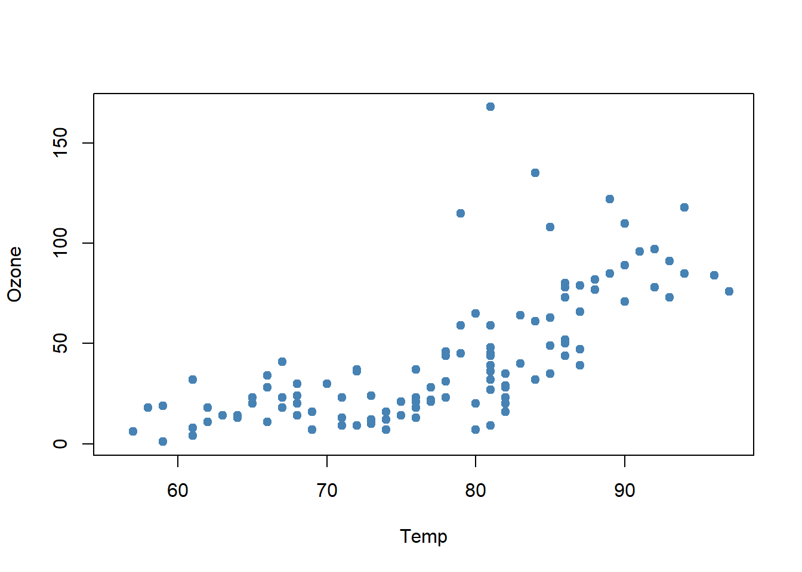
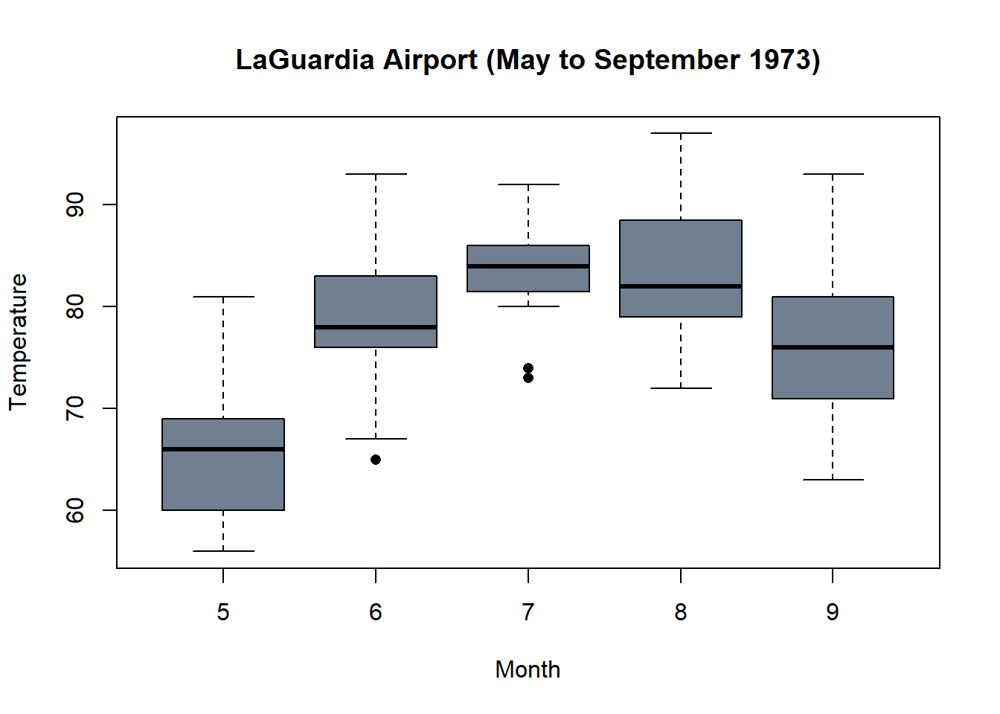
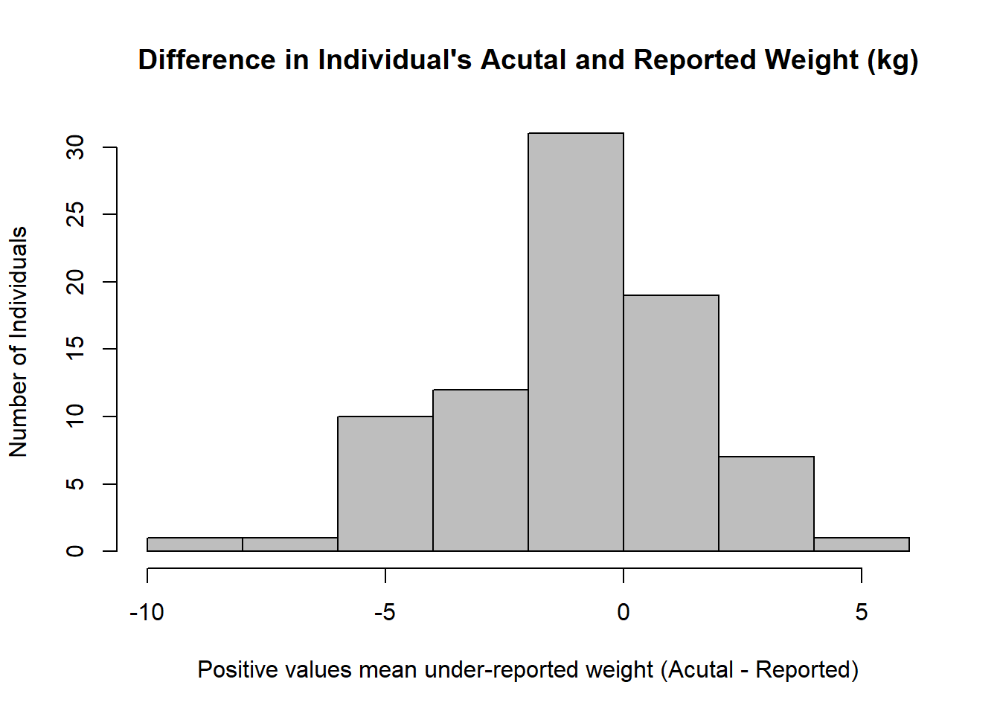
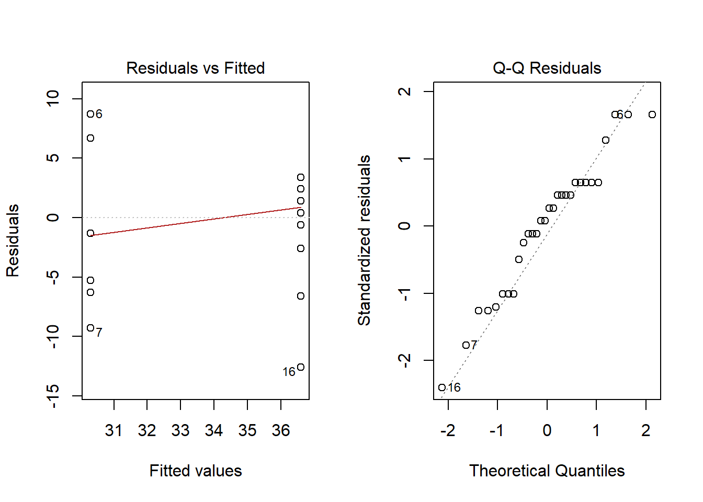
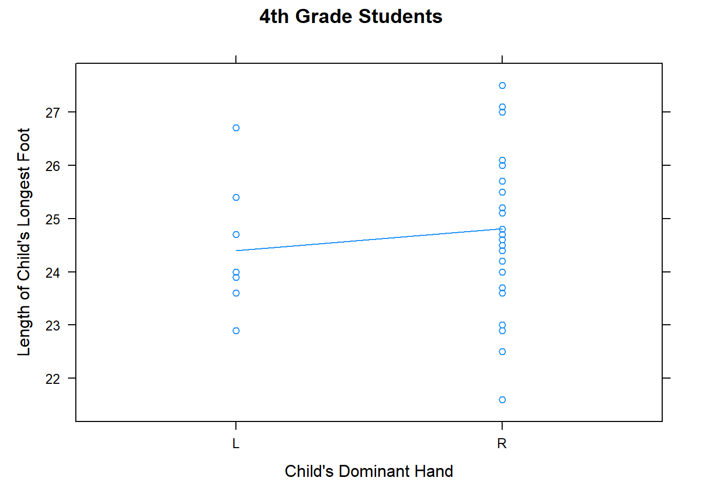
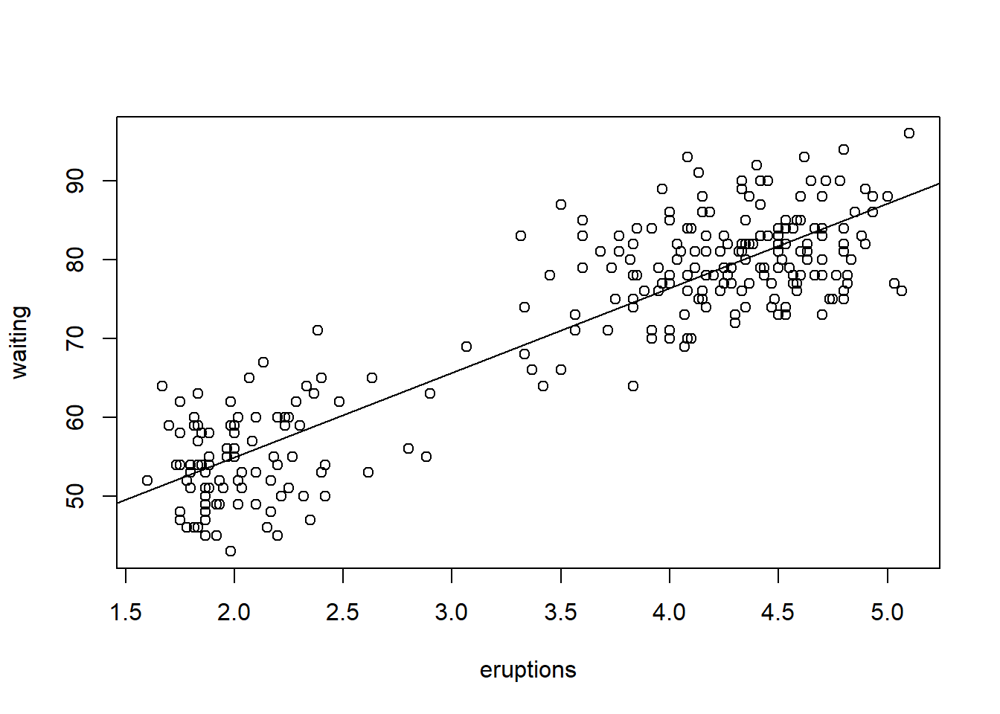
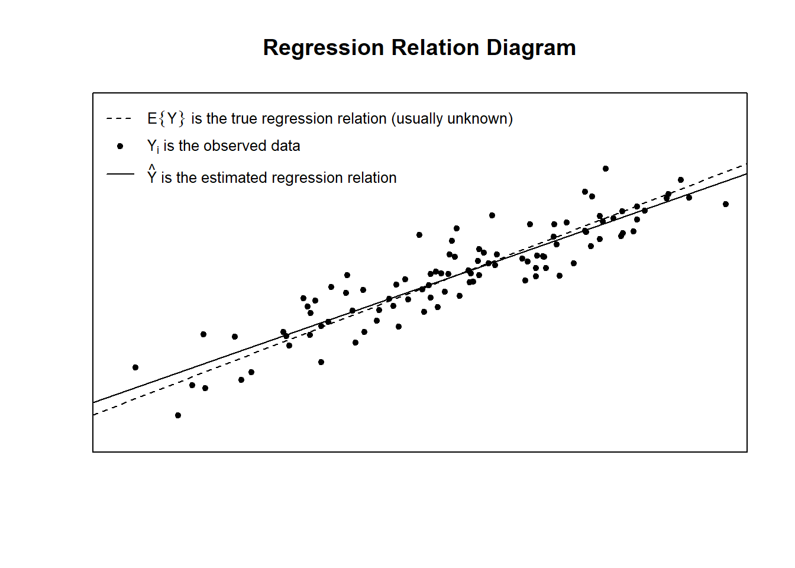
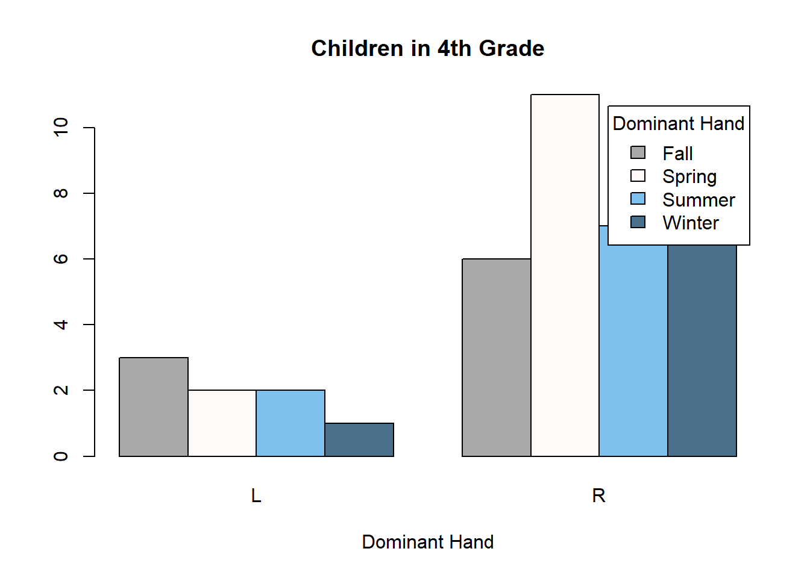
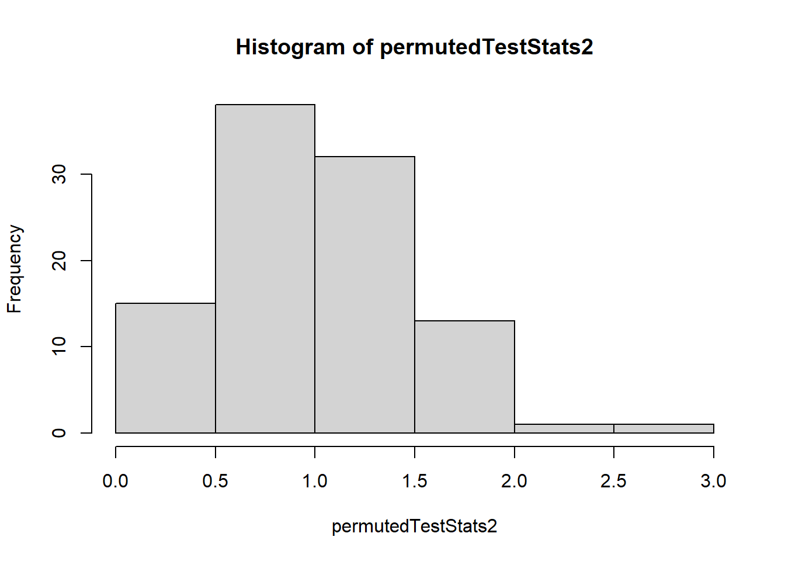

Don’t forget to always load your libraries and to Knit often!!
library(mosaic)
library(tidyverse)
library(pander)
library(DT)
library(ggrepel)
library(plotly)
library(dplyr)
library(ggplot2)
library(maps)
library(tmap)
library(leaflet)
library(htmltools)
library(car)
library(mosaicData)
library(ResourceSelection)
library(reshape2)
library(RColorBrewer)
library(scatterplot3d)
library(readr)
library(prettydoc)
library(knitr)
library(kableExtra)
library(formattable)
library(haven)
This is the templet for the Hover Box Thingy
Hover over words box! [insert description here]
… Click to View Output.
There are three parts to the help box:
- The starter code
< a href=“javascript:showhide(‘[Insert classifying
name]’)”> < div class=“hoverchunk” >
- The description code
- This is the pattern of the reoccurring code that you need to look
out for when writing in the help box descriptions!
< span class=“tooltipr” > [What shows up in the
box] < span class=“tooltiprtext” > [The
description that shows up when you hover] < /span><
/span >
- The ending code
- the r chunk you put right after will then show up after you click
the help box!
& nbsp;& nbsp;& nbsp;& nbsp;
< span class=“tooltiprtext” >Press Enter to run the code.
< /span> &
nbsp;…& nbsp; < span class=“tooltiprtext” >Click to View
Output.< /span > < /span > < /div > < /a > <
div id=“[The classifying name that you put in the starter
code!]” style=“display:none;” >
*When using, make sure you fix all the spaces when using and use
“< /div >” to show where the drop down is meant to end!
Personal Notes
OoOoooOOOoo let’s go assignments!!

Weekly Assignments
The sections below show the different Skill Quizzes and Class Activities
done throughout the semester. As well as some personal notes on those
assignments!
Week 1 | Welcome to the Course & Introduction to RStudio
We were setting up RStudio and doing cool little graphic thingys!
Skill Quiz - Introduction to R
Look at data sets, computing means, and creating
graphs.
- Mean of Distance from “cars” data set
View(cars)
mean(cars$dist)
## [1] 42.98
- Scatter plot of “cars” data set
plot(dist~speed, data=cars, col="skyblue",pch=16)
Creating new data set with “<- The Assignment
Operator”
create an airquality2 data set that is a copy of the airquality
data set
add a new column to the airquality2 data set called “Celcius”
that converts Temp from degrees Fahrenheit (F) to Ceclcius (C) using the
equation: Celcius = (Temp − 32) * 5/9. Don’t forget to use airquailty$
appropriately in that equation!
Hint: Typing “?airquality” will allow a help file for the
airquality data set to appear!
write.csv(airquality,"C:/Users/paige/OneDrive/Documents/Fall Semester 2024/MATH 325/Statistics-Notebook-master/Data/airquality.cvs")
airquality2 <- airquality
airquality2$Celcius <- round((airquality2$Temp-32)*5/9,1)
View(airquality2)
datatable(airquality2, options=list(lengthMenu =c(3,10,30)), extensions="Responsive")
PRACTICE :
plot(Ozone~ Temp, data=airquality,
xlab="Daily Maximum Temperature",
ylab="Mean Ozone in Parts per Billion (from 1300 to 1500 hours",
main="Exponential Growth in Ozone with Increasing Temp",
col="firebrick",pch=16 )
pch Options!
Week 2 | Describing Data in RStudio
Talking about how to give good feedback and more coolio graphics in this
week!
Skill Quiz - Describing Data with R
Numerical Summaries that MEASURE CENTER:
- Proportion
- Mean
- Mode
- Median
Mean - Gives a good
feel for the most typical values of quantitative data as long as the
data is at least approximately normally distributed.
Median -
Gives a good feel for the most typical values of any style of
distribution of quantitative data, but is especially useful for skewed
data.
Standard Deviation -
Typically used to describe the spread of relatively normally distribued
data.
Five-Number Summaryt
-
Gives a good feel for how the possible values of quanititative data
spread out around the more probable values.
Practice
- Find the mean and standard deviation of the “Wind” speed variable in
the airquality dataset.
pander(summary(airquality$Wind))
| 1.7 |
7.4 |
9.7 |
9.958 |
11.5 |
20.7 |
- Create a Scatter plot of Temp VS. Wind
plot(Wind~Temp, data=airquality,
xlab= "Daily Average Temperature",
ylab = "Daily Average Wind Speed",
main= "La Guardia Airport Warmer Weather Shows Less Wind",
col= "gray", pch= 19)
- Create a Histogram and Box plot of Solar.R
hist(airquality$Solar.R,
xlab= "Daily Mean Radiation in Langleys (from 0800 to 1200 hours)",
main= "Central Park, NYC Daily Average Radiation", col= "orange")
boxplot(Solar.R~Month, data=airquality,
xlab= "Month of the Year",
ylab= "Radiation in Langleys (Averaged from 0800 to 1200 hours)",
main= "Daily Mean Radiation High in July",col=c("gray","gray","orangered","gray","gray"))
Graph Types
Histogram - Show the
distribution of heights for a sample of n=400 first grade
boys.
Box Plot - Compare
the distribution of body weights of American adults for different
ethnicities where there is a sample size of n=100 for each
ethnicity.
Dot Plots - Compare
the distribution of bird beak lengths for different species of bird
where there is a sample size of n=3 for each species.
Class Activity - Principles of Good Graphics
PRACTICE
- Histogram, Box plot, and Scatter plot with airquality data set
hist(airquality$Wind, col="steelblue", xlab="Daily Average Wind Speeds (mph)", main="La Guardia Airport from May to September, 1973")
boxplot(Wind~Month, data=airquality, names=c("5","6","7","8","9"), col=c("steelblue1","steelblue2","steelblue3","steelblue3","steelblue2"))

plot(Ozone~Temp, data=airquality, col= "steelblue", pch=19)

Week 3 | Intro to Data Wrangling & Visulization
Looking at the different categories of data that is found in the
Index
Page and how to discern quantitative from categorical data!
Skills Quiz - Data Wrangling & Visualization
Quick reminder!
- How do you view a dataset?
View([insert the dataset here])
- How do you open the help file
?([insert the dataset here])
Quanitative vs. Qualitative
- Quantitative Examples:
- Qualitatve Examples:
- name, birthmonth, birthyear, sex, biggerfoot, & domhand
PRACTICE : Use KidsFeet
dataset
- Make a table displaying gender
table(KidsFeet$sex)%>%
pander()
- Make a table displaying which foot is bigger
- Which foot is commonly bigger? : Left Foot
table(KidsFeet$biggerfoot)%>%
pander()
- Make a table displaying which birthmonth is the most
common
- Which birth month is most common among these sampled children? :
March
table(KidsFeet$birthmonth)%>%
pander()
- Make a table that shows “are girls or boys more likely to be
left handed?”
table(KidsFeet$domhand, KidsFeet$sex)%>%
pander()
- Make a table showing the summaries of children’s foot
lengths according to their gender
KidsFeet %>%
group_by(sex) %>%
summarise(Min=min(length),
Q1 = quantile(length, 0.25),
Median = (median(length)),
Q3 = quantile(length,0.75),
Max = max(length),
Mean = mean(length),
SD = sd(length))%>%
pander()
| B |
22.9 |
24.35 |
24.95 |
25.8 |
27.5 |
25.11 |
1.217 |
| G |
21.6 |
23.65 |
24.2 |
25.1 |
26.7 |
24.32 |
1.33 |
- For this particular sample of data, which gender has the longest
feet on average?
- Which gender shows the most consistency in length of feet among
children in this sample?
PRACTICE : Use airquality
dataset
- run an appropriate command to obtain the mean daily temperature at
LaGuardia Airport for each month, separately.
airquality %>%
group_by(Month) %>%
summarise(`Mean Temperature`= mean(Temp)) %>%
pander()
| 5 |
65.55 |
| 6 |
79.1 |
| 7 |
83.9 |
| 8 |
83.97 |
| 9 |
76.9 |
Observations:
- Which month experiences the coolest average temperature?
- By how many degrees do the average temperatures of July and August
differ?
- Between which two consecutive months is there the largest
difference in average temperature?
What are the BEST graphics for this data
set?
- These 3 would be useful in depicting the above information, because
they nicely display the month and their averages
(1) Box plot
boxplot(Temp ~ Month, data=airquality, xlab="Month", ylab="Temperature", main="LaGuardia Airport (May to September 1973)", pch=16, col="slategray")

(2) Scatter plot
plot(Temp ~ Month, data=airquality, xlab="Month", ylab="Temperature", main="LaGuardia Airport (May to September 1973)", pch=16, col="slategray")
(3) Dot Plot
stripchart(Temp ~ Month, data=airquality, ylab="Month", xlab="Temperature", main="LaGuardia Airport (May to September 1973)", pch=16, col="slategray", method="stack")
What are the WORST graphics for depicting this
information?
- these two are the worst because they don’t clearly show the months
in order to allow us to compare the data of each month.
(1) Scatter plot
- but the x axis is Day, not very clear variable
plot(Temp ~ Day, data=airquality, xlab="Day of the Month", ylab="Temperature", main="LaGuardia Airport (May to September 1973)", pch=16, col="slategray")

(2) Histogram
- gives you the average of the whole time frame but not the specific
times
hist(airquality$Temp, xlab="Daily Temperature", main="LaGuardia Airport (May to September 1973)", col="slategray")
PRACTICE : Use Orange
dataset
View(Orange)
Orange2 <- Orange %>% group_by(age)%>% summarise(MedianCir =
median(circumference))
datatable(Orange2, options=list(lengthMenu =c(3,10,30)),
extensions=“Responsive”)
What are the BEST graphics for this data
set?
- Scatter plot with median growth line
- visualizes the relationship/ captures the overall trends between two
continuous variables
plot(circumference ~ age, data=Orange, ylab="Trunk Circumference (mm)", xlab="Age of Trees (days)", main="Trunk Circumference of Orange Trees", col="ivory3", pch=15) Orange.m <- median(circumference ~ age, data=Orange) lines(names(Orange.m), Orange.m, col="ivory3") legend("topleft", legend="Median Growth", lty=1, col='ivory3', bty='n')
- Box plot
- shows how the trunk circumference varies across different ages
boxplot(circumference ~ age, data=Orange, ylab="Trunk Circumference (mm)", xlab="Age of Trees (days)", main="Trunk Circumference of Orange Trees", col="ivory3")
- Dot plot
- shows the distribution of data and helps visualize all the
individual data points
stripchart(circumference ~ age, data=Orange, ylab="Trunk Circumference (mm)", xlab="Age of Trees (days)", main="Trunk Circumference of Orange Trees", col="ivory3", pch=15, method="stack", vertical=TRUE)
Question:
- During which age interval did the most rapid overall median
growth occur (in the circumference of the orange trees that
were sampled)?
- 664 to 1004 days (third interval)
What are the WORST graphics for this data set?
- Box plot
- x-axis is sectioned out by multiple variables instead of just one,
thus, not really showing us anything of value
boxplot(Orange, xlab="Age of Tree (days)", main="Trunk Circumference of Orange Trees", col="ivory3")
PRACTICE : Use the Riders
data set
- Consider the Riders dataset in R. (You may need to load
library(mosaicData).)
- How many total riders were observed on each day of the
week? (Hint: the sum() function works the same way as
mean()…)
Riders2 <- Riders %>%
group_by(day)%>%
summarise(`Total Number of Riders Observed`= sum(riders))
datatable(Riders2)
PRACTICE : Use the mtcars
dataset
- How would you describe the dataset?
- First, type ?mtcars and look at the “Description” of the data set
information
Description: The data was extracted from the 1974 Motor Trend
US magazine, and comprises fuel consumption and 10 aspects of automobile
design and performance for 32 automobiles (1973–74 models).
- How many variables are in the mtcars data set?
- First, View()the data, then read how many columns are in the data
set in the bottom left hand corner : 11
- How many observations are in the mtcars data set?
(Hint: try View(…))
- First, View() the data, then read the amount of entries in the data
set in the bottom left hand corner : 32
- How many vehicles are represented in the dataset for 4, 6, and 8
cylinder vehicles? (Hint: use the table(…) function.)
table(mtcars$cyl)%>%
pander()
- According to the mtcars data, on average, vehicles with 4 cylinders
get the best (highest) gas mileage. What is the average mpg for
automatic and manual transmission vehicles with 4 cylinders?
(Round answers to the nearest tenth.)
- 0 = Automatic, 1 = Manual
mtcars %>%
filter(cyl == "4")%>%
group_by(am)%>%
summarise(`Mean Gas Mileage form 4 Cylinder mtcars Vehicles(mpg)`= round(mean(mpg),1))%>%
mutate(Transmission = ifelse(am == 0, "Automatic","Manual"))%>%
pander()
| 0 |
22.9 |
Automatic |
| 1 |
28.1 |
Manual |
- According to the mtcars data, on average, vehicles with 8 cylinders
have the best (fastest) quarter mile time. What is the mean
quarter mile time (qsec) for automatic and manual transmission vehicles
with 8 cylinders? (Round answers to nearest tenth.)
mtcars %>%
filter(cyl == "8")%>%
group_by(am)%>%
summarise(`Mean Quarter Mile Time for 8 Cylinder mtcars Vechiles (sec)`= round(mean(qsec),1))%>%
mutate(Transmission = ifelse(am == 0, "Automatic","Manual"))%>%
pander()
| 0 |
17.1 |
Automatic |
| 1 |
14.6 |
Manual |
- According to the mtcars data, how many thousands of pounds
does the heaviest 6 cylinder car with an automatic
transmission weigh? (Round to the nearest
tenth.)
mtcars %>%
filter(cyl == "6", am == "0") %>%
summarise(MaxWTAutomatic = round(max(wt),1))%>%
pander()
- How many more
thousands of pounds does it weigh than the heaviest 6 cylinder
car with a manual transmission?
(Round to the nearest tenth.)
mtcars %>%
filter(cyl == "6", am == "1") %>%
summarise(MaxWTManual = round(max(wt),1))%>%
pander()
Assesment Quiz - Intro to Data Wrangling & Visualization
- Use the mtcars dataset in R to compute the mean “Gross
horsepower” of both automatic and manual transmission 1974
Motor Trend vehicles.
mtcars %>%
group_by(am)%>%
summarise(mean(hp))%>%
pander()
- Use the mtcars dataset in R to make a graph that allows you to see
how the quarter mile time (qsec) of 1974 Motor Trend
vehicles is effected by the number of carburetors
(carb) in the vehicle.
- Since both qsec and carb are quantitiative, a scatterplot is the
best graphic!
- This helps show that the average qsec time
(remember, average is the middle of the dots) drops (or gets
faster) as the number of carburetors
increases
plot(qsec ~ carb, data=mtcars)
On average, the more carburetors a vehicle has, the faster its quarter
mile time.
- Run the following codes in R. Then select the statement that most
appropriately interprets the resulting graph.
- The graph produced by the code given shows gas mileage on
the y-axis and quarter mile times on the x-axis. Also, as
indicated by the legend, the color of the points is determined
by whether the vehicle is automatic or manual transmission.
- Since both transmission types show positive
moderate correlations, we can conclude that higher
quarter mile times (which means slower vehicles) correlate with higher
gas mileages.
palette(c("skyblue","firebrick"))
plot(mpg ~ qsec, data=mtcars, col=as.factor(am), pch=16, xlab="Quarter Mile Time (seconds)", ylab="Miles per Gallon", main="1974 Motor Trend Vehicles")
legend("topright", pch=16, legend=c("automatic","manual"), title="Transmission", bty='n', col=palette())

The graph suggests that if you want a vehicle that gets
really good gas mileage, you should go with a manual
transmission that has a really slow quarter
mile time.
Class Activity - Types of Data, R Commands, and Graphics
hist(KidsFeet$birthmonth, breaks=seq(0.5,12.5,1))
- Quantitative Data :
data that is of units of measurement
Examples: length, width
KidsFeet %>%
group_by(sex) %>%
summarise(mean(length),max(length)) %>%
pander()
| B |
25.11 |
27.5 |
| G |
24.32 |
26.7 |
- Categorical Data :
a trait that cannot be measured
Examples: sex, birth year, birth month
table(KidsFeet$sex) %>%
pander()
Class Activity - Reviewing It All
- Load and view the starwars dataset
datatable(starwars, options=list(lengthMenu =c(3,10,30)), extensions="Responsive")
PRACTICE : Use starwars
data set
- Use the starwars data set to create a meaningful
histogram and supporting numerical summaries.

summary(starwars$height)%>%
pander()
| 66 |
167 |
180 |
174.6 |
191 |
264 |
6 |
- you could also use favstats ( ), it gives you the standard
deviation!
- Use the starwars data set to create a meaningful
boxplot (preferably side-by-side boxplots) and
supporting numerical summaries.
boxplot(height~eye_color, data=starwars)
- this table was using favstats!!
favstats(height~eye_color, data=starwars)%>%
pander()
| black |
122 |
173 |
188 |
206 |
229 |
185 |
31.78 |
9 |
1 |
| blue |
150 |
170 |
180 |
186 |
234 |
182.2 |
20.32 |
19 |
0 |
| blue-gray |
182 |
182 |
182 |
182 |
182 |
182 |
NA |
1 |
0 |
| brown |
66 |
164 |
183 |
185 |
193 |
167.3 |
34.11 |
19 |
2 |
| dark |
NA |
NA |
NA |
NA |
NA |
NA |
NA |
0 |
1 |
| gold |
191 |
191 |
191 |
191 |
191 |
191 |
NA |
1 |
0 |
| green, yellow |
216 |
216 |
216 |
216 |
216 |
216 |
NA |
1 |
0 |
| hazel |
170 |
172 |
174 |
176 |
178 |
174 |
5.657 |
2 |
1 |
| orange |
112 |
172 |
184 |
198.5 |
224 |
180.5 |
33.53 |
8 |
0 |
| pink |
180 |
180 |
180 |
180 |
180 |
180 |
NA |
1 |
0 |
| red |
96 |
97 |
190 |
191 |
200 |
154.8 |
53.36 |
5 |
0 |
| red, blue |
96 |
96 |
96 |
96 |
96 |
96 |
NA |
1 |
0 |
| unknown |
79 |
107.5 |
136 |
164.5 |
193 |
136 |
80.61 |
2 |
1 |
| white |
178 |
178 |
178 |
178 |
178 |
178 |
NA |
1 |
0 |
| yellow |
94 |
167.5 |
175 |
198 |
264 |
177.8 |
42.22 |
11 |
0 |
- Use the starwars data set to change your boxplot from above to a
dot plot. Which is more meaningful for the data you
selected?
stripchart(height~species, data=starwars, method="stack", pch=19)
- same numerical summary as boxplot!
- Use the starwars data set to create a meaningful
scatterplot and compute the
correlation of the data shown in the plot.
plot(mass ~ height,data=starwars, pch=8)
- x and y can change, and the correlation stays the same
- 1st one is height by mass and the 2nd one is mass by height
cor(starwars$height, starwars$mass, use="pairwise.complete.obs")
## [1] 0.130859
cor(starwars$mass, starwars$height, use="pairwise.complete.obs")
## [1] 0.130859
- Use the starwars data set to create a meaningful bar
chart and produce a table of counts to support the plot.
barplot(table(starwars$hair_color))
- use a table! (Base R or favstats)
table(starwars$hair_color)%>%
pander()
Table continues below
| 1 |
1 |
1 |
13 |
3 |
1 |
18 |
Skills Quiz - t Tests
- Inference : the process of deciding whether
patterns and trends in a sample of data from a population can be assumed
to be true for the full population.
- does the group define the crowd?
- A pattern can appear one way in a sample of data, but be completely
different for the full population.
- That is why we use statistical inference to decide
when it is safe (and when it is not) to conclude that a pattern in a
sample holds in the full population.
- P-value : the most commonly used method of deciding
when to reject a null hypothesis.
- The things needed to compute a p-value are:
- A test statistic
- A probabiltiy distribution of the test statistics that would be
possible if the null hypothesis is true
- If a researcher was using a signficance level of 0.05 and obtained a
p-value of 0.419, they can safely conclude that the null hypothesis is
true and that the alternative hypothesis is the false.
- If P is high, keep the guy!
- Decision Errors : they are two types of errors,
Type I or II, that indicate to us whether or not we made a mistake in:
- Rejecting the null when it was true (Type I)
- Accepting the null when it was false (Type II)
For example: In a typical U.S. Court of Law, the
null hypothesis is that the person on trial is
innocent. - Thus, convicting an innocent man of a crime would be an
example of a Type I Error - And letting a guilty man go
free would be an example of a Type II Error
Parametric Distributions
- These are the 4 distributions you need to be familiar with:
- The Normal Distribution
- The t Distribution
- The F Distribution
- The Chi-squared Distribution
PRACTICE :
- In which distribution would an observation of x=5 be the
most likely to occur?
curve(dnorm(x,-5,2), -12, 20, col="skyblue", lwd=2, ylab="", n=1000, ylim=c(0,.81))
curve(dchisq(x,5), from=0, add=TRUE, col="firebrick", lwd=2, n=1000)
curve(dt(x,5), add=TRUE, col="skyblue4", lwd=2, n=1000)
curve(df(x,10,10), from=0, add=TRUE, col="salmon", lwd=2, n=1000)
legend("topright", legend=c("Normal(-5,2)","Chi-squared(8)","t(5)","f(2,5)"), lwd=2, lty=1, col=c("skyblue","firebrick","skyblue4","salmon"), bty='n')
- Answer : A chi-squared distribution with p = 8
- What set of sample values are most likely to be obtained if
a sample of n = 5 observations is sampled from the normal distribution
drawn by the below code in R?
curve(dnorm(x, -5, 2), from=-12, to=2, lwd=2, col="skyblue", ylab="Normal Distribution with Mean of -5 and Standard Deviation of 2")
abline(h=0, v=-5, lty=2)
- Answer : -8, 0, -5, -6, -3
t Tests
There 3 different t Tests:
- Paired Samples
- requires that the sampling distribution of the sample mean of the
differences is normally distributed
\[ H_0: \mu_\text{post - pre} = 0
\] \[ H_a: \mu_\text{post - pre} \neq
0 \]
- One Sample t Test
\[ H_0: \mu = 5.8 \]
\[ H_a: \mu \neq 5.8 \]
- Independent Samples t Test
requires two things:
- The sample size of each group : Both samples are
representitive of the population
- Simple Random Samples are the best way to do this
- The normality of the data in each group using a Q-Q Plot for
each group’s data : The sampling distribution of the difference
of the sample means (x¯1−x¯2) can be assumed to be normal.
- This is a safe assumption when the sample size of each group is
30 or greater or when the population data from each
group can be assumed to be normal with a Q-Q Plot
\[ H_0: \mu_\text{Group 1} -
\mu_\text{Group 2} = 0 \]
\[ H_a: \mu_\text{Group 1} -
\mu_\text{Group 2} \neq 0 \]
PRACTICE :
Use a subset of the CO2 dataset in R to answer the following
questions.
- Filter the dataset so that you are considering only the
chilled plants where conc = 250.
CO2.chilled.250 <- filter(CO2, Treatment == "chilled" & conc == 250)
- What are the mean uptake values for each Type of plant
(Quebec and Mississippi) for plants that are chilled at a concentration
of 250?
CO2.chilled.250 %>%
group_by(Type) %>%
summarise(`Mean Uptake`=mean(uptake)) %>%
pander()
| Quebec |
34.47 |
| Mississippi |
16.1 |
- A side-by-side dot plot is best for presenting this
data visually because of the small sample sizes.
stripchart(CO2.chilled.250$uptake ~ CO2.chilled.250$Type, method="stack", xlab="Uptake", main="Quebec shows higher uptake values than Mississippi when plants are chilled at an amdient CO2 of 250", col=c("red","lightblue"), pch=15)
- Shown in ggplot2 graphics
ggplot(CO2.chilled.250, aes(x=uptake, fill=Type)) +
geom_dotplot(dotsize = 3, binwidth = 0.5) +
scale_fill_manual(values=c("Quebec"="lightblue","Mississippi"="coral")) +
labs(title="Quebec shows higher uptake values than Mississippi when plants are chilled at an ambient CO2 of 250", x="uptake", y="count" )
- These two sample means are clearly different
- However, these results are based on small sample Mississippi and
Quebec plants, or if it was just a figment of this sample of data
To determine if we should conclude that this pattern holds for the
full population, conduct an appropriate hypothesis test for the
hypotheses:
\[ H_0: \mu_{Miss} - \mu_{Queb} = 0
\] \[ H_a: \mu_{Miss} - \mu_{Queb}
\neq 0 \]
μMiss: - represents the (unknown) true mean CO2 uptake of ALL
Mississippi plants that are chilled at a concentration of 250
μQueb: - represents the true (unknown) mean CO2 uptake of ALL
Quebec plants that are chilled at a concentration of 250
- Answer : Use an Independent t Test
(4) Report the test statistic, the parametric distribution
being used for the test statistic (including degrees of freedom if
appropriate), and p-value of the test.
CO2.Q <- filter(CO2.chilled.250, Type == "Quebec")
CO2.M <- filter(CO2.chilled.250, Type == "Mississippi")
t.test(CO2.Q$uptake, CO2.M$uptake, mu=0, alternative="two.sided", conf.level = 0.95) %>%
pander()
Welch Two Sample t-test: CO2.Q$uptake and
CO2.M$uptake (continued below)
| 6.207 |
3.882 |
0.003782 * * |
two.sided |
34.47 |
This shows there is sufficent evidence to conclude
that Quebec plants (that are chilled at a concentration of 250) truly do
have a different mean uptake than Mississippi plants(that are chilled at
a concentration of 250) - In other words, it is safe to
conclude that the pattern we have seen in the sample data holds for the
full population.
*Note that since our sample data shows that Quebec has a higher mean
than Mississippi, and the p-value of the two sided test is significant,
we can actually conclude that Quebec plants have higher CO2 uptake than
Mississippi plants, on average.
- What requirements should be verified for this particular
hypothesis test?
- The sample of Mississippi and Quebec plants need to be
representative of the population.
- Hopefully they were selected randomly so that this would be
satisfied.
- The sampling distribution of the difference of the sample
means x¯1−x2¯ can be assumed to be normal.
- This is a safe assumption when the sample size of each group is 30
or greater or when the population data from each group can be assumed to
be normal.
*Note: before reporting our results, it is important to verify that
the requirements of this hypothesis test were satisfied.
- How many plants of each Type (Mississippi and Quebec) are in
the sample of data?
- Answer : Look at the CO2.chilled.250 data set and
count how many of each you got!
- Mississippi Sample Size: 3
- Quebec Sample Size : 3
Problem : These are small sample sizes. You will need to
create Q-Q Plots of each sample of data to determine if
the data in each group is normal or not.
- Make a Q-Q Plot of each group.
qqPlot(uptake ~ Type, data = CO2.chilled.250)
- Note that the sample sizes are very small (n=3 in each group).
However, normality does not appear to be violated as none of the points
go outside of the red dashed lines
- Thus, the requirements of the hypothesis test appear to be satisfied
for these data.
- We are safe to report the results of our hypothesis test.
Assessment Quiz - t Tests
- In a typical year, there are 52 weeks. However, 52 x 7 = 364, and as
most of us know, there are 365 days in a year. This means that every
year, at least one day gets to happen more than 52 times.
Use appropriate R commands and the Births78 dataset to
determine which day of the week in 1978 occurred 53 times.
Births78 %>%
group_by(wday) %>%
summarise(n()) %>%
pander()
| Sun |
53 |
| Mon |
52 |
| Tue |
52 |
| Wed |
52 |
| Thu |
52 |
| Fri |
52 |
| Sat |
52 |
- Use the Births78 dataset in RStudio to test the following
hypotheses.
H0:μWednesday−μThursday=0 Ha:μWednesday−μThursday≠0
Find the p-value of the test.
Birf <-filter(Births78,wday %in% c("Wed","Thu"))
t.test(births ~ wday, data=Birf, mu=0, alternative="two.sided", conf.level=0.95)
##
## Welch Two Sample t-test
##
## data: births by wday
## t = 0.14432, df = 98.945, p-value = 0.8855
## alternative hypothesis: true difference in means between group Wed and group Thu is not equal to 0
## 95 percent confidence interval:
## -183.3878 212.1571
## sample estimates:
## mean in group Wed mean in group Thu
## 9498.019 9483.635
- Answer : P-value = 0.8855
- What two things are required to compute a
p-value?
- Answer : A test statistic and a sampling
distribution of the test statistic.
Class Activity - Making Inference
Studying from the Making
Inference page!
Managing Decision Errors
- hypothesis -> beliefs
- null (initial) BELIEF, alternative BELIEF
- Goal: to discover truth
| Reject \(H_0\) |
Type I Error |
Correct Decision |
| Accept \(H_0\) |
Correct Decision |
Type II Error |
Alternatively, you can think about it
like:
| Reject your love \(H_0\) |
Type I Error |
Correct Decision |
| Accept your love \(H_0\) |
Correct Decision |
Type II Error |
- Type I Error -> Action (Throwing away truth)
- effected by alpha; small a, small error vice versa -Type II Error
-> (Failing to move to truth)
- effected by beta; small b, small error vice versa
Alpha and Beta work inversely of eachother! - high a -> low b -
low a -> high b
P-value
- The P-value measures how much the evidence differs from what we
expected under the null hypothesis(belief)
- P = “probability”
- P is low, Ho must go!
- P is high, keep the guy!
- null gives us a frame of reference from where the data COULD
fall
What two things are needed to get a
p-value?
(1)Test Statistic
(2) Sampling Distribution of
the Test Statistic
4 Parametric Methods
The Normal Distribution
The Chi Squared Distribution
The t Distribution
The F Distribution
t Tests
Practice
- Conduct a One Sample t Test: What is the average drive from Walmart
to BYU-I Campus?
t.test(cars$speed, mu=5, alternative="two.sided", conf.level=0.95) %>%
pander
One Sample t-test: cars$speed
| 13.91 |
49 |
1.228e-18 * * * |
two.sided |
15.4 |
- Alternative hypothesis can be:
- “greater”
- “less”
- “two.sided”
- conf.level corresponds with significance level
- conf. level = 1 - a
- significance level = 1 - conf. level
Class Activity - t Tests
- P-value measures the probability of the test statistic (what is
happening in front of you)
- if something is impossible, then we should reject the belief(the
null) since the possibility of that belief happening is close to 0
- Hypothesis = “WE BELIEVE”
Practice:
Finding P-values with t Tests!
One-Sample t Test
- What is the average foot size of 4th graders?
t.test(KidsFeet$length, mu=28, alternative="two.sided", conf.level=0.95) %>%
pander()
One Sample t-test: KidsFeet$length
| -15.53 |
38 |
4.806e-18 * * * |
two.sided |
24.72 |
- We have sufficient evidence to believe that kids feet are not
averaged aroun 28 cm. Instead, they are averaged around 24 to 25
cm.
Paired Samples t Test
- Is the length measurement of someone’s foot the same measurement of
3 width’s of their foot?
t.test(KidsFeet$length, KidsFeet$width*3, paired=TRUE, mu=0, alternative="two.sided",conf.level=0.95) %>%
pander()
Paired t-test: KidsFeet$length and
KidsFeet$width * 3
| -11.53 |
38 |
5.668e-14 * * * |
two.sided |
-2.254 |
- We have sufficent evidence to suggest that there is a difference
between the measurement of length and the measurement of width, thus the
measurements of 3 widths of their foot is not accurate.
Independent Sample t Test
- In the 4th grade, who’s feet length is greater, boys or girls?
t.test(length ~ sex, data=KidsFeet) %>%
pander()
Welch Two Sample t-test: length by
sex (continued below)
| 1.917 |
36.27 |
0.06308 |
two.sided |
25.11 |
- If you change “t.test” to “boxplot”, you can provide a visual to
support your claim!
boxplot(length ~ sex, data=KidsFeet)

- We have insufficent evidence to suggest that boys or girls feet are
longer than the other.
Significance Value Setting
Love rejecting things? Use 0.1
You a strict with you value? Use 0.05
Testing medicine effectiveness? Use 0.01
Using qqPlot
- Q stands for quantity!
- they are used for testing assumptions
- all you do is change “t.test” to “qqplot”
qqPlot(length ~ sex, data=KidsFeet)
blue region(bounds of normality) is the tolerance space that
allows us to call the data “normal” if the data appears within it (test
results are great)
- when there is data out of bounds, that makes the data not normal
(mega skew)
In order to fix out of bounds data, you need to increase your
sample size
When there is a heavy tailed (s shape), you need to decrease your
sample size
- When one side is dippin down low, it is skewed
Week 5 | Wilcoxon Tests
Studying from the Wilcoxon
Tests page! (the first nonparameteric test we encounter!)
There are the:
- Wilcoxon Signed-Rank Test
- Wilcoxon Rank Sum (Mann-Whiteny) Test
Skills Quiz - Wilcoxon Tests
- are NON-PARAMETRIC tests
- uses sums of ranks and mathematical counting
techniques (a NON-PARAMETRIC distribution) to calculate the
p-value
- t test (that are PARAMETRIC) rely on t
distributions (which are PARAMETRIC distributions) to calculate
the p-value while Wilcoxon tests
- the distribution of the Wilcoxon Test Statistic can be
usefully approximated by a normal distribution when the
sample size of the data being used in the test is
large
- However, this distribution of the test statistic can never
be exactly normal because the test statistic can only ever be a whole
number
- ignores the specific values of the data and only
utilize the relative positions of the data, i.e., the
ranks (hence the reason they are often called Rank-Based
Tests.)
1) Wilcoxon Signed-Rank Test
was originally created to test hypotheses about the value
of the median, but can be used to test hypotheses about the
mean when data is SYMMETRIC
A useful custom graphic that shows all of the data as well as a
five-number summary of the data is a box plot overlaid with a
dot plot
The style of tests that can be performed with this test
are:
One Sample: testing hypotheses about the center of a
distribution (where the center is subtracted from each
value).
Paired Samples: testing hypotheses about the center of
the distribution of differences.
Examples
- The CornHeights
Analysis Example is shown below:
corn <- c(14, 56, 60, 16, 6, 8, -48, 49, 24, 28, 29, 41, -67, 23, 75)
boxplot(corn, horizontal=TRUE, col="cornsilk",
main="Differences in Corn Plant Heights",
xlab="Cross-Fertilized Height minus Self-Fertilized Height")
stripchart(corn, pch=16, method="stack",
col="darkgray", add=TRUE)
Here is the number summary and Wilcoxon test that goes along with
it!
pander(wilcox.test(corn, mu = 0, alternative = "two.sided", conf.level = 0.95))
Wilcoxon signed rank exact test: corn
| 96 |
0.04126 * |
two.sided |
Quesitons based on the data above:
What is the minimum value in that plot?
What is the p-value of this test?
- The Sleep
Analysis Example is shown below:
sleepWide <- sleep %>%
spread(key=group, value=extra, sep="") %>%
mutate(g1_minus_g2 = group1 - group2)
pander(sleepWide)
| 1 |
0.7 |
1.9 |
-1.2 |
| 2 |
-1.6 |
0.8 |
-2.4 |
| 3 |
-0.2 |
1.1 |
-1.3 |
| 4 |
-1.2 |
0.1 |
-1.3 |
| 5 |
-0.1 |
-0.1 |
0 |
| 6 |
3.4 |
4.4 |
-1 |
| 7 |
3.7 |
5.5 |
-1.8 |
| 8 |
0.8 |
1.6 |
-0.8 |
| 9 |
0 |
4.6 |
-4.6 |
| 10 |
2 |
3.4 |
-1.4 |
ggplot(sleepWide, aes(x=g1_minus_g2)) +
geom_dotplot(binwidth = 0.1) +
theme_bw()
pander(with(sleep,
wilcox.test(extra[group==1], extra[group==2], mu = 0, alternative = "two.sided", paired = TRUE, conf.level = 0.95)))
Wilcoxon signed rank test with continuity correction:
extra[group == 1] and
extra[group == 2]
| 0 |
0.009091 * * |
two.sided |
Quesitons for the data set above:
- What does the null and alternative hypothesess look like?
\[
H_0: \text{median of the differences} = 0
\]
\[
H_a: \text{median of the differences} \neq 0
\]
What is the p-value of this data?
PRACTICE:
Part A: Background
An online website reports that the 2010 Honda Odyssey should get 17
miles per gallon (mpg) during city driving conditions. A family has kept
track of their gas mileage data for their 2010 Honda Odyssey sincle June
2020. They want to know if they are typically getting 17 mpg or not, and
have provided us with a systematic sample of their mpg records. Run the
following code in R to input their data into R.
Honda_mpg <- data.frame(date = c("06/01/20", "08/19/20", "09/14/20", "01/07/21", "07/22/21", "08/16/21", "10/24/21", "12/31/21", "03/12/22", "05/04/22", "07/09/22", "10/12/22"), milesDriven = c(274.4, 266.8, 317.0, 113.4, 326.2, 62.6, 239.8, 242.0, 195.6, 106.4, 379.3, 325.4), gallonsUsed = c(12.42, 12.255, 15.224, 7.953, 16.378, 3.285, 13.230, 10.467, 9.310, 4.721, 16.958, 16.221))
datatable(Honda_mpg, options=list(lengthMenu =c(3,10,30)), extensions="Responsive")
Part B: Hypothesis
1b. Use a mutate statement to create an mpg column in the data set
that divides the milesDriven by the gallonsUsed. (Keep the name of the
dataset Honda_mpg as you add this new column.)
Honda_mpgG <- Honda_mpg %>%
mutate(mpg= milesDriven/gallonsUsed)
datatable(Honda_mpgG, options=list(c(3,10,30)))
2b. We will use this mpg column to see if the family is getting 17
mpg, on median. (The median is being used here so that potential
outliers do not overly sway the results.) What are the
hypotheses that are most appropriate for using the Wilcoxon Signed-Rank
test on the mpg data?
\[ H_0: \text{Median mpg} = 17
\]
\[ H_a: \text{Median mpg} \neq 17
\]
- We will use a significance level of:
\[ α=0.05 \]
Part C: Graphic and Anaysis
1c. To visualize what the Wilcoxon Signed-Rand Test is
testing,**create a dotplot in R of the mpg data that includes a vertical
line representing the null hypothesis of our *test.**
ggplot(Honda_mpgG, aes(x=mpg))+
geom_dotplot(binwidth = .1) +
geom_segment(aes(x=17, xend=17, y=0, yend=0.5), color="skyblue") +
geom_text(aes(x=17, y=.6), label="Median Hypothesized to be 17 mpg", color="skyblue") +
labs(title="2010 Honda Odyssey Gas Mileages", y="", x="Miles Per Gallon Vehicle Achieved on Systematically Selected Dates") +
theme(axis.ticks.y=element_blank(), axis.text.y=element_blank())
## Warning in geom_segment(aes(x = 17, xend = 17, y = 0, yend = 0.5), color = "skyblue"): All aesthetics have length 1, but the data has 12
## rows.
## ℹ Please consider using `annotate()` or provide
## this layer with data containing a single row.
## Warning in geom_text(aes(x = 17, y = 0.6), label = "Median Hypothesized to be 17 mpg", : All aesthetics have length 1, but the data has 12
## rows.
## ℹ Please consider using `annotate()` or provide
## this layer with data containing a single row.
- Just looking at the plot, the median looks to be higher than
17 mpg.
- due to the fact that most of the data points are more to the
right
2c. Conduct the actual hypothesis test in R using a Wilcoxon
Signed-Rank test to test if the mpg data has a median of
17:
pander(wilcox.test(Honda_mpgG$mpg, mu = 17, alternative = "two.sided"))
Wilcoxon signed rank exact test:
Honda_mpgG$mpg
| 75 |
0.002441 * * |
two.sided |
3c. What is the value of the test statistic? - 74
4c. What is the probability that the test statistic would be as
extreme or more extreme than this value? - 0.00659
5c. What conclusion does the probability give us? - There is
sufficient evidence to reject the null hypothesis (p-value less than the
significance level). We will conclude that the true median gas mileage
of this vehicle is something different than 17 mpg.
6c. Compute the median of this sample of gas
mileages:
pander(summary(Honda_mpgG$mpg))
| 14.26 |
19.7 |
20.92 |
20.43 |
22.16 |
23.12 |
It appears that this Honda Odyssey is getting closer to
21 miles per gallon on median rather than the listed 17 miles per
gallon, which is great!
Part D: Wait… but like why does this
work?
We will now work through the test by hand to show how the test
actually works! - it is useful for you to do it by hand once to gain
some understanding on how rank-based tests, like this test, work
ggplot(Honda_mpgG, aes(x=mpg)) +
geom_dotplot(binwidth = .1) +
geom_segment(aes(x=17, xend=17, y=0, yend=0.5), color="skyblue") +
geom_text(aes(x=17, y=.6), label="Median Hypothesized to be 17 mpg", color="skyblue") +
labs(title="2010 Honda Odyssey Gas Mileages", y="", x="Miles Per Gallon Vehicle Achieved on Systematically Selected Dates") +
theme(axis.ticks.y=element_blank(), axis.text.y=element_blank())
## Warning in geom_segment(aes(x = 17, xend = 17, y = 0, yend = 0.5), color = "skyblue"): All aesthetics have length 1, but the data has 12
## rows.
## ℹ Please consider using `annotate()` or provide
## this layer with data containing a single row.
## Warning in geom_text(aes(x = 17, y = 0.6), label = "Median Hypothesized to be 17 mpg", : All aesthetics have length 1, but the data has 12
## rows.
## ℹ Please consider using `annotate()` or provide
## this layer with data containing a single row.

Pre-Step 1: calculate what are called the
“differences”
- The differences are obtained by subtracting the hypothesized value
for the median in all observations
- this is done with the following code:
pander(Honda_mpgG$mpg-17)
5.093, 4.771, 3.822, -2.741,
2.917, 2.056, 1.125, 6.12,
4.01, 5.538, 5.367 and 3.06
- Note: there is only one negative difference = only
one value is below the hypothesized median of 17 mpg!
- looking at the graph, it is there!
Step 1 & Step 2:
- Write out the missing differences (using the list of differences
that you just computed) in the sorted list of differences below.
- Be sure to place them in order from smallest in magnitude to the
largest magnitude.
- Keep the negative sign on the one difference that is negative.
- Then, rank the differences!
Sorted Differences: 1.125742, 2.056317,
-2.741230, 2.916962, 3.060416,
3.822386, 4.009667, 4.770706, 5.093398, 5.367024,
5.537598, 6.120283.
| Differences: |
1.125742 |
2.056317 |
-2.741230 |
2.916962 |
3.060416 |
3.822386 |
4.009667 |
4.770706 |
5.093398 |
5.367024 |
5.537598 |
6.120283 |
|
|
|
| Ranks: |
1 |
2 |
-3 |
4 |
5 |
6 |
7 |
8 |
9 |
10 |
11 |
12 |
|
|
|
*Remember: if there is a tie between two ranks, then the ranks of the
two values are averaged together. Fortunately, there were no ties in
this data.
- Now, we have two options:
Add up the sum of the positive ranks
Add up the sum of the absolute value of the negative
ranks.
- Since there is only one negative rank, that seems like the easiest
way to proceed, which would give us a sum of |−3|=3
- HOWEVER!! We need to match how R computed the test statistic,
summing up the positive ranks (1+2+4+5+6+7+8+9+10+11+12 = 75)
Looking back at the test in R, what is the letter that R uses
for the Wilcoxon Test statistic? - V - This
shows that the test statistic of the Wilcoxon Test in R is the sum of
the ranks from the positive ranks!!
pander(wilcox.test(Honda_mpgG$mpg, mu = 17, alternative = "two.sided"))
Wilcoxon signed rank exact test:
Honda_mpgG$mpg
| 75 |
0.002441 * * |
two.sided |
Calculating the p-value:
- The p-value is calculated by adding up the
possibility of all the possible sums of ranks that are
as extreme or more extreme than the observed sum of ranks!
- Come up with all of the possible values that the test statistic
could have been obtained
- Two possibilities could occur:
- None of the values were less than 17 mpg (all ranks
would belong to the positive group)
- the rank of -3 would now become a positive 3, this increasing the
total sum of positive ranks from what it was to being the total of all
ranks
- The sum of the positive ranks would have been:
78
b.All of the values were less than 17 mpg (all ranks
would belong to the negative group) - The sum of the
positive ranks would have been: 0
- Therefore, the test statistic of the Wilcoxon Test could be any
whole number between 0 and 78
- Compute the probability of each such value occurring (This is known
as the distribution of the test statistic!)
MORE PRATICE
As shown in the help file of this dataset, ?Davis, this data is about
individuals who were “engaged in regular exercise.” - Load
Davis data set and filter the data to be just
men - Question: is it true that men who work out
regularly over or under report their weight?
Davy <- filter(Davis, sex == "M")
datatable(Davy, options=list(3,10,30))
Hypothesis:
- Let the null hypothesis be that the median of the differences in
actual and reported weights are equal to zero. Let the alternative
hypothesis be that they are different from zero.
- Make sure the order is Actual - Reported weight
- we are comparing each man’s actual weight to their reported
weight
\[ H_0: \text{median of the differences} =
0 \] \[ H_a: \text{median of the
differences} \neq 0 \]
- compute the differences between the actual weight and
reported weight for each person in the dataset using a mutate
statement
- Name the new column containing these differences something like
“weight_diff”
Davis2 <- Davy %>%
mutate(weight_diff = weight - repwt)
hist(Davis2$weight_diff, col="gray", main="Difference in Individual's Acutal and Reported Weight (kg)", xlab="Positive values mean under-reported weight (Acutal - Reported)", ylab="Number of Individuals")

Observations of the Graph
1 ) recognize that any value to the left of zero shows men whose
weight difference is negative - their reported weight was a
larger number than their actual weight - the order of
subtraction we used, actual - reported, proves this
2 ) more than half the data is to the left of 0 - more than half the
men had a negative weight difference, or that they said they
weighed more than they acutally did - the median weight
difference is -0.5 pounds, showing the median reporting
is half a pound higher than what the men actually weighed
Wilcoxon Signed-Rank Test of Davis dataset
pander(wilcox.test(Davis2$weight_diff, mu=0, alternative="two.sided", conf.level= 0.95))
Wilcoxon signed rank test with continuity correction:
Davis2$weight_diff
| 890.5 |
0.08129 |
two.sided |
Conclusion
FAIL TO REJECT THE NULL AT THE 0.05 LEVEL OF
SIGNIFICANCE
There is insufficient evidence to conclude that men
who work out regularly over report their weight by 0.5 lbs on
median.
2) Wilcoxon Rank Sum Test
Example:
- The BugsSpray
Analysis Example is shown below:
bugspray <- data.frame(Killed = c(68,68,59,72,64,67,70,74,
60,67,61,62,67,63,56,58),
Spray = rep(c("A","B"), each=8))
| A |
68, 68, 59, 72, 64, 67, 70, 74 |
| B |
60, 67, 61, 62, 67, 63, 56, 58 |
- here are the graphics and number summaries
bugspray %>%
group_by(Spray) %>%
summarise(min = min(Killed), median = median(Killed), mean = mean(Killed), max = max(Killed), sd = sd(Killed), `Number of Trials` = n()) %>%
pander(caption="Summary of Bug Spray Effectiveness")
Summary of Bug Spray Effectiveness
| A |
59 |
68 |
67.75 |
74 |
4.683 |
8 |
| B |
56 |
61.5 |
61.75 |
67 |
3.919 |
8 |
Wilcoxon rank sum test with continuity correction:
Killed by Spray
| 55 |
0.01771 * |
two.sided |
Questions based on the data above?
What is the test statsic? (W)
What is the probabilty of getting a test statistic at least this
extreme if the null hypothesis is true?
PRACTICE*
- we will be using the Duncan data set filtered to only show
“wc” and “prof” types of occupations
- Question: Are prestige scores typically higher for
professional and managerial type occupations than for white-collar
occupations?
DuncanDO <- filter(Duncan, type %in% c("wc","prof"))
datatable(DuncanDO, options= list(lengthMenu = c(3,10,30)))
Hypotheses:
\[ H_0: \text{Median}_\text{prof} -
\text{Median}_\text{wc} = 0 \] \[ H_a:
\text{Median}_\text{prof} - \text{Median}_\text{wc} > 0 \]
- below is the Wilcoxon Rank Sum Test
pander(wilcox.test(DuncanDO$prestige[DuncanDO$type == "prof"], DuncanDO$prestige[DuncanDO$type == "wc"], mu =0, alternative = "greater", conf.level = 0.95))
## Warning in
## wilcox.test.default(DuncanDO$prestige[DuncanDO$type
## == "prof"], : cannot compute exact p-value with
## ties
Wilcoxon rank sum test with continuity correction:
DuncanDO$prestige[DuncanDO$type == "prof"] and
DuncanDO$prestige[DuncanDO$type == "wc"]
| 107 |
0.0002293 * * * |
greater |
Conclusion:
REJECT THE NULL
The is sufficent evidence evidence to conclude that
prestige scores are typically higher for professional and managerial
occupations than for white-collar occupations. To quantify the
difference in prestige scores and how much higher they are for
professional and managerial occupations than for white-collar
occupations, we can create side-by-side boxplots and a table of the
five-number summary.
Box plot of the Duncan Prestige scores between professors and
white collar workers data set:
boxplot(prestige ~ type, data=droplevels(DuncanDO), col= c("dodgerblue3", "white"), xlab="Type of Profession", ylab="Prestige Score (Higher is More Prestigious)", main= "Duncan Prestige of Occupations Data")
Numerical Summary Table of Duncan Prestige scores between
professors and white collar workers
pander(favstats( prestige ~ type, data=droplevels(DuncanDO)))
| prof |
45 |
76 |
85 |
90 |
97 |
80.44 |
14.11 |
18 |
0 |
| wc |
16 |
35 |
38.5 |
40.5 |
52 |
36.67 |
11.79 |
6 |
0 |
From the results, we see that professional type occupations have a
median prestige score that is more than double the
median prestige score of white-collar occupations!
MORE PRACTICE
This data was collected from the 2008-09 academic school year for
colleges in the U.S. “as part of the on-going effort of the college’s
administration to monitor salary differences between male and female
faculty members. - Question : “Which professors earns a higher
median wage, male or female?”
- When filtering the data, columns of data that are a “factor” can be
frustrating to work with (as seen in the previous question). So
sometimes it is easier to mutate(…) the data and change columns that are
“factors” to “character”.
Salaries2 <- Salaries %>%
mutate(rank = as.character(rank))
- Now, graph in R in order to explore any differences in
salaries of male and female Professors at colleges across the U.S. in
2008-09.
boxplot(salary ~ sex, data=Salaries2, col="wheat", ylab="Annual Salary (USD)", xlab="", main="Do Male Prof's Earn Higher Median Wage?")
Nummerical Summaries Table for Salaries for Male and
Female Professors
SalariesProf <- filter(Salaries2, rank == "Prof")
pander(favstats(salary ~ sex, data=SalariesProf))
| Female |
90450 |
109723 |
120258 |
135000 |
161101 |
121968 |
19620 |
18 |
0 |
| Male |
57800 |
105835 |
123996 |
145513 |
231545 |
127121 |
28214 |
248 |
0 |
- Run an Wilcoxon Test in R to determine if salary is
stochastically different for one of the genders of
Professors.
wilcox.test(salary ~ sex, data=SalariesProf, mu=0, alternative="two.sided", conf.level=0.95)
##
## Wilcoxon rank sum test with continuity
## correction
##
## data: salary by sex
## W = 2071.5, p-value = 0.6117
## alternative hypothesis: true location shift is not equal to 0
Conclusion:
FAIL TO REJECT THE NULL
There is insufficient evidence to conclude that
salary is stochastically different for one of the genders of professors.
In looking back at our numerical summaries and graphical summary, we see
that it appears that male Professors are being paid a median salary that
is $3738 more than the median female salary. Further
research into why this discrepancy exists would be warranted though this
discrepancy itself does not prove anything further than a pay gap in
median salaries of Professors. We can’t claim that discrimination or any
other reason in particular has caused the pay gap without further
research. But this difference certainly warrants further research into
the “why” behind the gap. The gap has been shown to exist by the
analysis above. We just don’t have any explanation as to why it is
there.
Assessment Quiz - Wilcoxon Tests
- Use the Salaries dataset in R to find the number of male
and female assistant professors in the dataset.
- This can be done in two different ways!
- Use the favstats() command
SalariesAss <- filter(Salaries, rank == "AsstProf")
pander(favstats(salary ~ sex, data=SalariesAss))
| Female |
63100 |
73000 |
77000 |
79363 |
97032 |
78050 |
9372 |
11 |
0 |
| Male |
63900 |
74375 |
80182 |
88803 |
95079 |
81311 |
7901 |
56 |
0 |
- Use the group_by() and summarise() commands
Salaries %>%
group_by(rank, sex) %>%
summarise(n()) %>%
pander()
## `summarise()` has grouped output by 'rank'. You
## can override using the `.groups` argument.
| AsstProf |
Female |
11 |
| AsstProf |
Male |
56 |
| AssocProf |
Female |
10 |
| AssocProf |
Male |
54 |
| Prof |
Female |
18 |
| Prof |
Male |
248 |
- Create an appropriate graphic using the Salaries dataset in R that
would allow you to compare the distribution of salaries for faculty in
discipline A (“theoretical”) and discipline B (“applied”)
departments.
boxplot(salary ~ discipline, data=SalariesAss, col="white", main="Faculty From U.S. Colleges", xlab="Discipline", ylab="Salaries")
The graphics that can me
used for Wilcoxon Rank Sum Test are BOXPLOTS & DOT PLOTS, not
SCATTER PLOTS
- Perform an appropriate Wilcoxon Test of the following hypotheses
using the Salaries dataset in R.
H0:median discipline A salaries−median discipline B salaries=0
Ha:median difference of salaries≠0
Select the response below showing the correct test statistic,
p-value, and conclusion of the test based on a significance level of
0.05.
pander(wilcox.test(salary ~ discipline, data=SalariesAss))
## Warning in wilcox.test.default(x = DATA[[1L]], y
## = DATA[[2L]], ...): cannot compute exact p-value
## with ties
Wilcoxon rank sum test with continuity correction:
salary by discipline
| 116 |
1.731e-07 * * * |
two.sided |
The correct test is the
WILCOXON RANK SUM TEST. Since the p-value of 0.0007516 is less than
0.05, we reject the null hypothesis.
Class Activity - Wilcoxon Tests
What is the Wilcoxon Test?
- not concerned about the distance between values
- we care about the location shift/ difference in
ranks - sample size, standard deviation does NOT matter!
Steps to Wilcoxon Rank Sum (Mann-Whitney Test):
Order Data
Rank it
Pull out ranks from each group
Add the ranks
What is the possibility of each sum being possible?
Use Frank Wilcoxon spikey distribution to determine the
extremities of the data
- Finite and discrete (normal distribution is
infinite and continuous)
- When they detect any ties in ranks, they shift from
a finite realm to a more continuous
realm in order to compute it properly
A <- c(68, 68, 59, 72, 64, 67, 70, 74)
B <- c(60, 67, 61, 62, 67, 63, 56, 58)
wilcox.test(A,B)
## Warning in wilcox.test.default(A, B): cannot
## compute exact p-value with ties
##
## Wilcoxon rank sum test with continuity
## correction
##
## data: A and B
## W = 55, p-value = 0.01771
## alternative hypothesis: true location shift is not equal to 0
What is the question(s) this test would answer?
Examples:
*can stretch to situations where averages(means) don’t necessary
matter/ are interesting
Wilcoxon test secret -> hands
Null Hypothesis = No shift (fingers overlap)
Alternative = shift (fingers are not overlapped) - 0 shift -> full
overlap in ranks - No 0 shift -> no overlap in ranks
- stochastically -> GENERALLY speaking
Why is the Wilcoxon test used?
- deduces it down to ranks without having to analyze numerical
wilcox.test(length ~ sex, data=KidsFeet)
## Warning in wilcox.test.default(x = DATA[[1L]], y
## = DATA[[2L]], ...): cannot compute exact p-value
## with ties
##
## Wilcoxon rank sum test with continuity
## correction
##
## data: length by sex
## W = 252, p-value = 0.0836
## alternative hypothesis: true location shift is not equal to 0
*does not make any mathematical assumptions about the data
(nonparametric test)
Class Activity - Wilcoxon Tests, Boxplots, and P-Values
Review
Which function would you use to add a new column to your
dataset?
- What is the goal of statistics?
Which plots work best to display one quantitative variable that
is separated into 2 or more groups?
- box plot & dot plot
- Box plots + Dot plots are great to show off this kind of data
(because it shows the median!)
- Median line closer to the bottom of the box plot =
Right Skewed
- Median line is closer to the top of the box plot =
Left Skewed
What two things are needed to calculate a p-value?
- a test statistic and a sampling distribution of that test
statistics
When would an independent samples t test be inappropriate to use
but a Wilcoxon Rank Sum Test be appropriate?
- Independent Samples t Test : looks at average
- needs raw data (times, measurements, etc.)
- Wilcoxon Rank Sum Test : looks at median
- needs ranks (first place, second place, etc.)
What is an appropriate set of hypotheses to use for an
independent samples t test? For a Wilcoxon Rank Sum Test?
Using the Wilcoxon Test Applet
This is the Wilcoxon Test Applet! : Wilcoxon Test Applet
“Salt makes it hard to realize just where the salt shakers are.”
- Brother Saunders
- using p-value and graphs together to make the right decision
- graph is critical, valuable piece to visualize the data
- but the p-value supports/ debunks the graph
PRACTICE
Explain what it means for the null hypothesis of a Wilcoxon Rank
Sum Test to be true.
- 0 location shift (hands overlap)
Explain what it means for the alternative hypothesis of a
Wilcoxon Rank Sum Test to be true.
- Location shift (no hands overlap)
Explain how boxplots for small sample sizes can be
misleading.
- highly sensitive to sample size, don’t reveal the sample size
- overlay dot and box plot to show sample size as well as number
summary!
Explain how the p-value helps us judge whether or not the null
hypothesis or alternative hypothesis is the truth based on the evidence
shown in a box plot.
- help us to show and give a definitive comparison between the two
groups
Week 6 | Two-way ANOVA
Studying from the ANOVA
page and its one quantitative column and the two categorical
columns!
There are the:
- One-Way ANOVA Test
- Two-Way ANOVA Test
Skills Quiz - ANOVA
- Run the code “View(warpbreaks)” in R. Use that data set to identify
each of the following as either a “factor” or a “level” of a
factor.
datatable(warpbreaks,options=list(c(3,10,30)))
One-way ANOVA
- What does each element of this equation mean?
\[ Y_{ik} = \mu_i + \epsilon_{ik}
\]
- The true population mean for group i
\[\mu_i\]
\[Y_ik\]
- The error term for the kth data point of the ith group. In other
words, how far that data point is from the true mean μi.
\[\epsilon_ik\]
- The null hypothesis of ANOVA is assumed to hold true when these two
variances are roughly equal
Practice
- Test your ability to read ANOVA output from R using the
Friendly data set
Part 1: Writing out our Hypothesis
\[ H_0: \mu_1 = \mu_2 = \mu_3 = \mu
\]
\[ H_a: \mu_i \neq \mu \ \text{for at
least one} \ i\]
What do these say?
- These hypotheses simply state that the mean words recalled
under the three different conditions, SFR, Before, and Meshed are the
same (the null) or that at least one differs (the
alternative).
Part 2: Conducting an ANOVA test
- This is the ANOVA test for the Friendly data set
friendly.aov <- aov(correct ~ condition, data=Friendly)
summary(friendly.aov) %>%
pander()
Analysis of Variance Model
| condition |
2 |
264.6 |
132.3 |
4.341 |
0.02319 |
| Residuals |
27 |
822.9 |
30.48 |
NA |
NA |
- The p-value of the ANOVA test is 0.0232 showing
that there is sufficient evidence to conclude that
at least one of the means differs from the others.
- Note that this ANOVA p-value is the probability that the test
statistics from an F distribution with 2 and 27 degrees of
freedom is as extreme or more extreme than the observed
value of 4.341, assuming the null hypothesis is true
- This p-value is only meaningful if two important assumptions can be made:
(1) that the error term ϵik is normal and
(2) that the variance σ2 of the error term is constant, i.e., the same in all groups.
Part 3: Checking Requirements
- Two plots were created in R to check the two requirements of ANOVA
for the Friendly data set
par(mfrow=c(1,2))
plot(friendly.aov, which=1:2)

The Residual Plot
- shows the constant (equal) variance assumption
- is reasonable when the points for each group have roughly the same
spread (Pinky test!)
The Q-Q Plot of the Residuals
- shows the normal error terms (residuals)
assumption
- is reasonable when the points hold to the line rather well
Part 4: Conclusion
- In the Friendly data set, the conclusion of this ANOVA test
is that one of the means differs
- This is not a very informative conclusion, but it does give us
permission to explore the data.
- Consider the following plot in R that shows the means of each group
with a line as well as the points from each group (jittered or wiggled a
little in the horizontal direction so that they don’t overlap).
xyplot(correct ~ condition, data=Friendly, jitter.x=TRUE, type=c("p","a"))
Two-Way ANOVA
There are FIVE main elements included in TWO-WAY
ANOVA:
The Background
- This includes the data used in the analysis
The three sets of hypotheses of the two-way ANOVA
- These include two one-way style sets of hypotheses as well as the
interaction hypothesis.
- The R code for performing and summarizing the two-way ANOVA
The two diagnostic plots that verify the appropriateness of
performing a two-way ANOVA on the warpbreaks data.
- When an ANOVA is appropriate, we can have confidence in our results.
When the ANOVA is not appropriate, we cannot be confident that our
results are meaningful, but we usually still interpret the results
anyways. We just have to be honest that our analysis might not be a good
way to analyze the data.
The graphical and numerical summaries that allow us to make more
detailed conclusions about what is going on in the data.
- Remember, in an ANOVA analysis, when we reject the null hypotheses
that “all means are equal” we don’t know which means differ from the
others, so the graphics and the numerical summaries are very important
for helping us see what is going on in the data.
- Of course, if the p-value was large and we failed to reject the null
hypothesis, then the graphical or numerical summary for that particular
hypothesis is not really needed as “all means are equal” in that
case.
MORE PRACTICE
- We will use the
ToothGrowth data set for a practice
ANOVA analysis!
BACKGROUND
The ToothGrowth data set is measuring the effect of
vitamin C dosage levels (0.5, 1, and 2 mg/day) and
delivery methods (using either orange juice or ascorbic acid) on length
of growth in teeth (odontoblasts, cells responsible for tooth growth) in
guinea pigs.
- all this information will can be found using the ?(dataset name) in the Console
datatable(ToothGrowth, options = list(c(3,10,30)))
HYPOTHESES
- Test the following hypothese all at the same time with a
single Two-Way ANOVA Test in R.
- Hypotheses about the effects on tooth growth due to the supplement
type:
\[ H_0: \mu_{VC} = \mu_{OJ} \]
\[ H_a : \mu_{VC} \neq \mu_{OJ}
\]
- Hypotheses about the effects on tooth growth due to the dosage
level:
\[H_0 : \mu_{0.5} = \mu_{1.0} = \mu_{2.0}
= \mu\]
\[ H_a : \mu_i \neq \mu \text{for at least
on dosage level i = 0.5, 1.0, or 2.0} \]
- Hypotheses about the effects on tooth growth due to the interaction
of supplement type and dosage level:
\[ H_0 : \text{the effect of dosage on
tooth growth is the same for all levels of supplement type.}
\]
\[ H_a: \text{the effect of dosage on
tooth growth is not the same for all levels of supplement
type.}\]
TWO-WAY ANOVA RESULTS
toothANOVA <- aov(len ~ supp + as.factor(dose) + supp:as.factor(dose), data=ToothGrowth)
summary(toothANOVA)
## Df Sum Sq Mean Sq F value
## supp 1 205.4 205.4 15.572
## as.factor(dose) 2 2426.4 1213.2 92.000
## supp:as.factor(dose) 2 108.3 54.2 4.107
## Residuals 54 712.1 13.2
## Pr(>F)
## supp 0.000231 ***
## as.factor(dose) < 2e-16 ***
## supp:as.factor(dose) 0.021860 *
## Residuals
## ---
## Signif. codes:
## 0 '***' 0.001 '**' 0.01 '*' 0.05 '.' 0.1 ' ' 1
*Note: The interaction term should have degrees of freedom
equal to the number of combinations possible in the interaction term
(minus 1, minus the degrees of freedom for the first factor, minus the
degrees of freedom for the second factor).
The Two-Way ANOVA test shows the supplement type does
have a significant effect on tooth growth (p-value =
0.000231), dosage level has a significant
effect on tooth growth (p-value = 4.046e-18, sometimes reported
as “<2e-16”), and the interaction dosage level and
supplement type has a significant effect on tooth
growth (p-value = 0.021860).
APPROPRIATENESS OF THE TWO-WAY ANOVA
- Check the appropriateness of your two-way ANOVA on the ToothGrowth
data by creating the two required diagnostic plots.
par(mfrow = c(1,2))
plot(toothANOVA, which = 1:2)
- Looking at these two diagnostic plots, the following ANOVA
assumptions are satisfied:
Constant Variance of the Error Terms
Normally Distributed Error Terms
- when both assumptions are fulfilled, we can have confidence in the
results of this analysis!
GRAPHICAL AND NUMERICAL SUMMARIES AND
CONCLUSIONS
- We will make three different graphical and numerical summaries to
support the three hypotheses
The effect of supplement type (which is
significant as shown by the p-value in the ANOVA above the supp term) is
demonstrated in the following plot and numerical table.
Run this code in R to obtain the plot:
xyplot(len ~ supp, data=ToothGrowth, type=c(“p”,“a”),
main=“Orange Juice Showing Longer Teeth on Average in Guinea Pigs”,
ylab=“Length of Odontoblasts”, xlab=“Vitamin C Delivery
Method”)
xyplot(len ~ supp, data=ToothGrowth, type=c("p","a"), main="Orange Juice Showing Longer Teeth on Average in Guinea Pigs", ylab="Length of Odontoblasts", xlab="Vitamin C Delivery Method")
- Run this code in R studio to obtain the table:
- ToothGrowth %>%
group_by(supp) %>%
rename(`Supplement Type` = supp) %>%
summarise('Mean Length of Odontoblats`=mean(ToothGrowth), .groups="drop") %>%
pander(caption="Mean Tooth Length According to Supplement Type")
ToothGrowth %>%
group_by(supp)%>%
rename(`Supplement Type` = supp) %>%
summarise(`Mean Length of Odontoblasts`= mean(len), .groups ="drop")%>%
pander(caption="Mean Tooth Length According to Supplement Type")
Mean Tooth Length According to Supplement Type
| OJ |
20.66 |
| VC |
16.96 |
The effect of Dosage Level is demonstrated in
the following plot.
Run this code in R:
xyplot( len ~ dose, data=ToothGrowth, type=c(“p”,“a”), main=“Higher
Doses Showing Longer Teeth on Average in Guinea Pigs”, ylab=“Length of
Odontoblasts”, xlab=“Dosage Level in mg/day”)
xyplot( len ~ dose, data=ToothGrowth, type=c("p","a"), main="Higher Doses Showing Longer Teeth on Average in Guinea Pigs", ylab="Length of Odontoblasts", xlab="Dosage Level in mg/day")
ToothGrowth %>%
group_by(as.factor(dose))%>%
rename(`Dosage Level` = dose) %>%
summarise(`Mean Length of Odontoblasts`= mean(len), .groups ="drop")%>%
pander(caption="Mean Tooth Length According to Dosage Level")
Mean Tooth Length According to Dosage Level
| 0.5 |
10.61 |
| 1 |
19.73 |
| 2 |
26.1 |
The effect of the interaction of supplement type and
dosage level is demonstrated in the following plot.
Run the following code:
xyplot( len ~ dose, data=ToothGrowth, groups=supp, type=c(“p”,“a”),
auto.key=TRUE, main=“Delivery Methods are Equal at High Doses of VC”,
ylab=“Length of Odontoblasts in Guinea Pigs”, xlab=“Dosage Level of
Vitamin C in mg/day”)
xyplot( len ~ dose, data=ToothGrowth, groups=supp, type=c("p","a"), auto.key=TRUE, main="Delivery Methods are Equal at High Doses of VC", ylab="Length of Odontoblasts in Guinea Pigs", xlab="Dosage Level of Vitamin C in mg/day")
ToothGrowth %>%
group_by(supp, dose) %>%
summarise(ave=mean(len), .groups="drop") %>%
spread(dose, ave) %>%
pander(caption="Mean Tooth Length by Supplement Method and Dosage Level")
Mean Tooth Length by Supplement Method and Dosage
Level
| OJ |
13.23 |
22.7 |
26.06 |
| VC |
7.98 |
16.77 |
26.14 |
CONCLUSION
- Here is an example of the kind of conclusion that should be at the
end of an ANOVA analysis.
For longer teeth in Guinea Pigs, we recommend delivering 2.0
mg/day of Vitamin C with either deliver method (Orange Juice or Ascorbic
Acid). However, if that level of Vitamin C doses are too expensive to
achieve, then a dosage of 1.0 mg/day of Vitamin C delivered with Orange
Juice is recommended. This will result in a mean length gain of 22.7,
which is quite close to the length gain of 26.1 that is achieved at a
2.0 mg/day dosage level. We recommend avoiding the 0.5 mg/day dosage
level completely as that resulted in tooth growth gains of only 13.2 and
7.98 when delivered through orange juice or ascorbic acid,
respectively.
Assessment Quiz - ANOVA
In a certain student’s ANOVA analysis the “Between groups
variance” was 18.52 while the “Within groups variance” was 4.9. What was
the value of the test statistic of their ANOVA test?
- As shown in the Explanation tab of the ANOVA page of the Math 325
Notebook, the ANOVA test statistic is an F statistic. It is calculated
by taking the “Between groups variance” and dividing this by the “Within
groups variance”. Thus 18.52/4.9 = 3.779592 which rounds to 3.78.
Make three Two-Way ANOVA graphs looking at the length, domhand,
and sex columns of the KidsFeet dataset.
- Based on your p-values and these graphs, which of the following is a
correct conclusion to reach?
xyplot(length ~ domhand, data=KidsFeet, type=c("p","a"), main="4th Grade Students", col='dodgerblue', xlab="Child's Dominant Hand", ylab="Length of Child's Longest Foot")

xyplot(length ~ sex, data=KidsFeet, type=c("p","a"), main="4th Grade Students", col='dodgerblue', xlab="Child's Gender", ylab="Length of Child's Longest Foot")

xyplot(length ~ sex, data=KidsFeet, groups=domhand, type=c("p","a"), main="4th Grade Students", auto.key=list(corner=c(1,1)))
- **ANSWER : Among fourth graders, right handed boys have longer feet on average than left handed boys while the opposite is true for girls.**
In the KidsFeet dataset, what is the average length of feet for
fourth grade boys that are left handed?
ANSWER : 24.1 CM
- found through the interaction table of the gender and dominant
hand
KidsFeet %>%
group_by(sex,domhand) %>%
summarise(ave=mean(length), .groups="drop") %>%
spread(domhand, ave) %>%
pander(caption="Mean Foot Length According to Gender and Dominant Hand")
Mean Foot Length According to Gender and Dominant
Hand
| B |
24.1 |
25.44 |
| G |
24.9 |
24.21 |
Class Activity - One- Way ANOVA
- What does ANOVA stand for?
- Analysis Of Variance!
- tests several means simultaneously
- If you conduct a ton of tests on one data set, the probability of a
Type 1 Error increases!
- we would expect that one of the tests
- ex. conduct two tests, nearly doubles the Type 1 Error
- Thankfully, ANOVA protects against those potential errors
Hypothesis of ANOVA
Explain the words “factor” and “level”
- Factor
- gender (column)
- use as.factor() for your x value!
- Levels
- male & female (the values that happen in each column)
Explain the difference between a one-way and a two-way
ANOVA
Degrees of freedom = Number of Groups - 1
Residual Degrees of freedom is the left over of the total data
participants
- One-Way
- One Factor
- Can only test one idea (ex. gender )
- ignore deep questions
- Two-Way
- Two Factors
- Can test a different ideas (ex. gender with age, hardwork and faith)
that create powerful interactions
- Can does what two one way ANOVAs can do and THEN can see if those
two factors can dance!!
- ex. Wool -> 1 DF (2 Groups)
- Tension -> 2 DF (3 Groups)
- Wool:Tension -> 2 DF (Would be 7 Groups, BUT the separate columns
pay 5 of it so you only need two!)
Reading a Residuals vs. Fitted plot
Class Activity - Two- Way ANOVA
- Looking at the
DayCare.RmD file!
How many Day Care Centers were included in the study?
How many Centers were included in the treatment group? The
Control Group?
During which weeks did the researchers simply observe the Day
Care Centers?
During which weeks was the fine applied to the treatment
group?
During which weeks was the fine removed from the treatment
group?
What was the main response variable of interest that the
researchers recorded each week on the Day Care Centers?
- The number of late children (does the fine change behavior?)
How to change from wide to long data?
Use pivot_longer/wider funtion!
Late <- pivot_longer(late, #Start with wide data set late cols =
starts_with(“Week”), #Find columns to gather from long data names_to =
“Week”, #New column name of Weeks in long data names_prefix = “Week”,
#Remove prefix of Week from Week1, Week2, … names_transform = list(Week=
~as.numeric(.x)), #Make Week a numeric column of data values_to =
“NumberofLateChildren”) #Name of data column in long data
How to change the dataset format with
“pivot”
- First off, load up the dataset
with
late <- read_csv("C:/Users/paige/OneDrive/Documents/Fall Semester 2024/MATH 325/Statistics-Notebook-master/Data/late.csv")
## Rows: 10 Columns: 23
## ── Column specification ──────────────────────────
## Delimiter: ","
## chr (1): Treatment
## dbl (22): Center, No.ofChildren, Week1, Week2,...
##
## ℹ Use `spec()` to retrieve the full column specification for this data.
## ℹ Specify the column types or set `show_col_types = FALSE` to quiet this message.
Late <- pivot_longer(late,
cols = starts_with("Week"),
names_to = "Week",
names_prefix = "Week",
names_transform = list(Week= ~as.numeric(.x)),values_to = "NumberofLateChildren")
Change to “long” data for use in R:
Late <- pivot_longer(late,
Start with wide data set late
cols = starts_with(“Week”),
Find columns to gather from long data
names_to = “Week”,
New column name of Weeks in long data
names_prefix = “Week”,
Remove prefix of Week from Week1, Week2, … etc!
names_transform=list(Week=~as.numeric(.x)),
Make Week a numeric column of data
values_to = “NumberofLateChildren”) #Name of data column in
long data
- Use the Late data set to add a new column to the data set that
translates Weeks (a numeric column) into a column that is a factor
called “Period”. This factor Period should have three levels: “Before
the Fine”, “Fine Applied”, and “Fine Removed”.
Late <- Late %>%
mutate(
Period = case_when(
Week %in% c(1:4) ~ "Before the Fine",
Week %in% c(5:16) ~ "Fine Applied",
Week %in% c(17:20) ~ "Fine Removed"))
table(Late$Period) %>%
pander()
- Practice writing hypotheses! As well as, fill in the blanks for the
third set of hypotheses and check your work with your peers, a TA, or
the teacher.
- Factor 1 Hypothesis
\[
H_0: \mu_\text{Control Group} = \mu_\text{Fine Group}
\]
\[
H_a: \text{The average number of late children differs for at least one
Group}
\]
- Factor 2 Hypothesis
\[
H_0: \mu_ \text{Before the Fine}= \mu_ \text{Fine Applied}
= \mu_ \text{Fine Removed}
\]
\[
H_a: \text{The average number of late children differs fro at least one
Period}
\]
- Interaction Hypothesis (the dance!)
\[
H_0: \text{The effect of the Fine on the average number of late children
picked up does not depend on the period of the study.}
\] \[
H_a: \text{The effect of the fine on the average number of late children
changes in at least one Periods of the study.}
\]
Two Way ANOVA time!
myaov <- aov(NumberofLateChildren ~ Treatment + Period + Treatment:Period, data=Late)
summary(myaov)
## Df Sum Sq Mean Sq F value
## Treatment 1 1740 1740.0 54.25
## Period 2 828 414.0 12.91
## Treatment:Period 2 848 423.9 13.22
## Residuals 194 6222 32.1
## Pr(>F)
## Treatment 4.92e-12 ***
## Period 5.46e-06 ***
## Treatment:Period 4.16e-06 ***
## Residuals
## ---
## Signif. codes:
## 0 '***' 0.001 '**' 0.01 '*' 0.05 '.' 0.1 ' ' 1
If you can’t get the right p-value, there is something wrong with
your factors!
Plot time!
xyplot(NumberofLateChildren ~ as.factor(Treatment), data=Late, type= c("p","a"))
xyplot(NumberofLateChildren ~ as.factor(Period), data=Late,type= c("p","a"))

xyplot(NumberofLateChildren ~ as.factor(Period), data=Late,auto.key = list(c(1,1)))
Diagnostic Plots Time!
par(mfrow=c(1,2))
plot(myaov, which=1:2)
- Remember pinky thumb test! (Constance variance)
Week 7 | The Kruskall-Wallis Test
Studying from the Kruskal-Wallis
Test page and its the second nonparametric test that we see thats
quantitative to multiple categorical!
Skills Quiz - Kruskal-Wallis Test
- Use the
SaratogaHouses data set for the following
Kruskal-Wallis Test!
table(SaratogaHouses$fuel)
##
## gas electric oil
## 1197 315 216
Say a homeowner in Saratoga County, New York is curious about whether
upgrading their home from an oil heating fuel system to either a gas or
electric fuel system would increase the resale value of their home.
Use the SaratogaHouses dataset in R to answer the
question, “which heating system results in the highest
distribution of home resale values (price)?
Null Hypothesis : The price of homes with either
gas, oil, or electric heating fuel systems all come from the
same distribution
Alternative Hypothesis : At least one type of fuel systems
results in a different distribution of prices of
homes
kruskal.test(price ~ fuel, data=SaratogaHouses)
##
## Kruskal-Wallis rank sum test
##
## data: price by fuel
## Kruskal-Wallis chi-squared = 159.66, df = 2,
## p-value < 2.2e-16
The Kruskal-Wallis Rank Sum Test results in a
p-value of 2.2e-16, meaning there is sufficent evidence
to conclude the hypothesis the distribution of
prices of homes is different for at least one of the
fuel system types.
boxplot(price ~ fuel, data=SaratogaHouses)
Questions regarding the previous graph:
Which fuel type results in the highest median
price of homes?
What is the highest median price?
- This value cannot be accurately determined from a plot! So we need
the summary table!
SaratogaHouses %>%
group_by(fuel) %>%
summarise(`Median Price`=median(price), .groups="drop") %>%
pander(caption="Median Prices by Fuel Type")
Median Prices by Fuel Type
| gas |
206500 |
| electric |
149300 |
| oil |
167500 |
- Study the
wages and pigweights analyses
examples and analyze them for the following information!
- BYU-Idaho Student wages Example
1. Test Statistic (**Chi-squared**) = **2.3262**
2. Degrees of Freedom = **3**
3. P-value = **0.5075**
4. Conclusion? : This is **insufficent** evidence to reject the null hypothesis that the samples are from the same distribution.
- Pigweights Example
1. P-value = **0.009663**
2. Conclusion? : There is **sufficent** evidence to conclude that at least one group is from a different population than the others.
2. Match the following letters with their meaning in the Kruskal-Wallis Test.
- N : The total number of observations from all samples.
- C : The number of samples being compared.
- \bar{R_i} : The mean of the ranks for each sample i
- R_i : The sum of the ranks belonging to sample i.
- H : The test statistic of the Kruskal-Wallis Test.
- n_i : The size of sample i.
3. How is the p-value found?
- The p-value of the Kruskal-Wallis Test is found using the **chi squared distribution** with **C - 1 degrees of freedom** as an approximation to the actual nonparametric distribution of the test!
4. What does the bottle-cap data tell us?
- The p-value of **0.059** says that we have **insufficent evidence** to conclude that nay of the groups are from different distributions. In other words, we will continue to assume that hte groups all come from the same distribution.
Assessement Quiz - Kruskal-Wallis
- Use the Salaries dataset in R, library(car), to test the hypotheses
and report the test statisic and the conlusion of your test
\[ H_0 : \text{The distribution of salary
is the same for Associate, Assistant, and Full Professors.} \]
\[ H_a : \text{The distribution of salary is
different for at least one type of Professor.} \]
kruskal.test(salary ~ rank, data=Salaries)
##
## Kruskal-Wallis rank sum test
##
## data: salary by rank
## Kruskal-Wallis chi-squared = 194.01, df = 2,
## p-value < 2.2e-16
boxplot(salary ~ rank, data=Salaries)
Salaries %>%
group_by(rank) %>%
summarise(`Median Salary`=median(salary), .groups="drop") %>%
pander(caption="Median Salary by Rank")
Median Salary by Rank
| AsstProf |
79800 |
| AssocProf |
95627 |
| Prof |
123322 |
- Test statistic is 194 from a chi-squared distribution with 2 degrees of freedom, which has a very small p-value. It appears that Full Professors typically earn the most and Assistant Professors typically earn the least.
- The boxplot shows Full Professors have the highest distribution, Associate Professors the next highest, and Assistant Professors have the lowest distribution
- A waiter at a local restaurant collects data on how much they earn
in tips (per person) when groups of people each pay separately for their
meal versus when one member of the group pays for everyone. Their very
small sample of data is as follows.
Group ID Number of People in Group Type of Payment Total Tip Amount
Per Person Amount 1 5 Each Paid $16 $3.20 2 3 One Paid for All $10 $3.33
3 4 One Paid for All $9 $2.25 4 4 Each Paid $15 $3.75 5 6 Each Paid $21
$3.50
Which hypothesis test would be most appropriate for deciding if the
average per person tip amount is higher when people that eat in groups
each pay individually for their meal?
- While techincally you could use a Kruskal-Wallis Test, when there are only *two groups in the data, it is equivalent to performing a Wilcoxon Rank Sum Test*. So **the best decision would be to use the Wilcoxon Rank Sum Test**.
- An Independent Samples t Test might also be useful if the data can be *assumed to be normal*. However, given the *small sample size* and the fact that there are *no repeated values*, the Wilcoxon Test is the safer option.
What is the correct way to describe the test statistic, H, of the
Kruskal-Wallis Test?
Class Activity - Idea Approval for the Week 11 “Consulting
Opportunity or Research Project”
Option 1
Find a data analysis opportunity for a client* where you use data the
client provides to answer research questions they have.
- *A client could be a small business owner (maybe your parents, an
aunt, uncle, or someone else you personally know), a teacher you TA for,
your boss you currently work for or that you worked for in the past, an
old high school teacher, or even a roommate. The client could
potentially even be yourself if say you were trying to buy a new car or
some other important item. However, this analysis has the greatest
chance of contributing to your resume if it is performed for someone
else rather than just yourself. But if you did something for yourself
that was say “blog worthy” and that other people would also find
interesting, then that could be meaningful as well.
In the space below, state which option you are choosing, and provide
details on how you are going to make this work. Over the next couple of
weeks your teacher will follow up with you to see how you are doing with
implementing your idea. If you have any concerns about whether your idea
is a good idea or not, discuss that in person with your teacher right
away. Make sure you only submit an idea that you are fairly confident
will work well in the space below.
“We are offering a free one time data consultation under the
supervision of my stats professor who has a P.H.D., the Biostatistics
Program Director.”
- Don't make it like you need their help, make it to where they need your help!
look at how early assignments in the course can predict future
success?
Class Activity - Kruskal-Wallis Test
nonparametric equivalent of a One-Way ANOVA -> rank
based test
- (not caring about data values! )
will have to use as.numeric() function to make columns into
mumeric values
for groups (C) use mutate(new column name = interaction(group 1,
group 2))
Any similarities this test has to the
Wilcoxon Rank Sum test? Discuss any
differences?
Similarities
Differences
Testing Groups
- Wilcoxon = 2 groups
- Kruskal-Wallis = 3 groups! Can dump all the groups at once
Test Statisitic
Wilcoxon (F)
Kruskal-Wallis (H)
- C -> number of samples/groups (need 3 or more!)
- N -> Total of all sample sizes
- n_i -> each individual sample (n_i = n_1 + n_2 …)
- R bar _i -> the mean rank for each sample
What can you conclude when the p-value of the Kruskal-Wallis Test is
significant?
What are the hypotheses of the Kruskal-Wallis Test?
A question to ask when analyzing data:
What am I using this data for? What will this
answer?
Use the Friendly dataset from library(car) in R to perform a
Kruskal-Wallis Test.
kruskal.test(correct ~ condition, data=Friendly)
##
## Kruskal-Wallis rank sum test
##
## data: correct by condition
## Kruskal-Wallis chi-squared = 5.1817, df = 2,
## p-value = 0.07496
- Make a box plot! (boxplot or ggplot)
boxplot(correct ~ condition, data=Friendly)
favstats(correct ~ condition, data=Friendly) %>%
pander()
| SFR |
21 |
25 |
27 |
38.5 |
39 |
30.3 |
7.334 |
10 |
0 |
| Before |
24 |
37.25 |
39 |
39.75 |
40 |
36.6 |
5.337 |
10 |
0 |
| Meshed |
30 |
36 |
36.5 |
38.75 |
40 |
36.6 |
3.026 |
10 |
0 |
THESE ARE THE THREE THINGS YOU WILL NEED FOR A
KRUSKAL-WALLIS TEST!!
Week 8 | Simple Linear Regression
Studying from the
Linear
Regression page and its 2 quantitative to 2 quantitative test!
Skill Quiz - Simple Linear Regression
There are five assupmtions of the simple linear regression
model:
Constant Variance
Independent Errors
Normal Errors
Fixed X Values
Linear Relation
- Questions about the assumptions:
- Which regression assumption(s) does the residuals versus
fitted values plot diagnose?
Linear Relation
Constance Variance
- Which regression assumption(s) does the Q-Q Plot of the
residuals diagnose?
- Which regression assumption(s) does the Residuals versus
Order plot diagnose? (Remember, this plot can only be
created when the data was collected in a specific order.)
plot(Height ~ Volume, data = trees)
trees.lm <- lm(Height ~ Volume, data = trees)
abline(trees.lm)
par(mfrow=c(1,2))
plot(trees.lm, which=1:2)
- Consider the Old Faithful Guyser (Yellowstone National Park) dataset
in R!
datatable(faithful,list(option=c(3,10,30)))
- Perform a simple linear regression to determine if the expected
waiting time to the next eruption can be modeled by the length of the
previous eruption.
plzwork <- lm(waiting ~ eruptions, data=faithful)
pander(summary(plzwork))
| (Intercept) |
33.47 |
1.155 |
28.99 |
7.136e-85 |
| eruptions |
10.73 |
0.3148 |
34.09 |
8.13e-100 |
Fitting linear model: waiting ~ eruptions
| 272 |
5.914 |
0.8115 |
0.8108 |
\[\hat{Y_i} =
\underbrace{33.4744}_\text{Intercept} +
\underbrace{10.7296}_\text{Slope}X_i\]
Even though both the slope and intercept terms are
significant, the intercept term is not of
interest
- This is because we are not interested in eruptions that last for
zero minutes!
The slope term is of interest
The slope tells us the increase in teh expected waiting time to
the next erruption for every 1 minute increase in the length of the
current erruption.
Specifically, for every one minute increase in length
of current eruption, we would expect to wait 10.7296 minutes
longer (on average) until the next eruption!
- Verify that this linear regression is appropriate by making the
residuals versus fitted-values and normal Q-Q Plot of the residuals in
R.
par(mfrow=c(1,3))
plot(plzwork,which=1:2)
plot(plzwork$residuals)
- Produce a scatterplot in R of this linear regression.
plot(waiting~eruptions, data=faithful)
abline(plzwork)

- Say the most recent eruption of the Old Faithful Guyser lasted for
3.5 minutes. Vistors should expect to wait 70 minutes
until the next erutption, on average.
Assessment Quiz - Simple Linear Regression
- Use the KidsFeet dataset from library(mosaic) to perform a
regression of the length of a child’s foot (Y) on the width of a child’s
foot (X).
- What is the estimated slope and intercept of the least squares
regression line for this data?
chillin <- lm(length ~ width, data = KidsFeet)
pander(summary(chillin))
| (Intercept) |
9.817 |
2.938 |
3.341 |
0.001915 |
| width |
1.658 |
0.3262 |
5.081 |
1.097e-05 |
Fitting linear model: length ~ width
| 39 |
1.025 |
0.411 |
0.3951 |
Intercept: 9.82
Slope: 1.66
- Continue using the KidsFeet regression that you performed in the
last problem. In other words, the regression of the length of a child’s
foot (Y) on the width of the child’s foot (X).
- Plot the regression in R.
plot(length ~ width, data= KidsFeet)
abline(chillin)
- The residual plot from the regression of the length of a child’s
foot on the width of the child’s foot (using the KidsFeet dataset from
library(mosaic)) shows the following residual plots.
- Write a statement that most correctly interprets these plots.
par(mfrow=c(1,3))
plot(chillin,which=1:2)
plot(chillin$residuals)
- The “Residuals vs Fitted” plot shows the data to be linear
and to have constant variance. However, the “Normal Q-Q” plot shows some
evidence of non-normality of the residuals.
Class Activity - Simple Linear Regression
The Mathematical Model of Regression (including the equation of
the best-fit line).
\[
\underbrace{Y_i}_\text{Some Label about the Y-axis} =
\overbrace{\beta_0}^\text{y-int} + \overbrace{\beta_1}^\text{slope}
\underbrace{X_i}_\text{Some Label about the X-axis} + \epsilon_i \quad
\text{where} \ \epsilon_i \sim N(0, \sigma^2)
\] - True Regression Relation = the law (the trend)
How to interpret the slope and intercept in a Simple Linear
Regression.
What a residual is in a regression?
How to measure the correlation of a regression.
How to diagnose the appropriateness of a regression for a given
data set.
Three plots are needed :
Residuals vs Fitted
Normal Q-Q Plot
Residuals vs. Order
How to perform a regression in RStudio and locate the slope and
intercept from the output summary.
Class Activity - Simple Linear Regression (Part 2)
Review the following:
Slope of a line, including the statistics symbol for it.
Y-intercept of a line, including the statistics symbol for
it.
\[Y_i = \beta_0 + \beta_1X_i + \epsilon_i
\text{ where } \epsilon_i ~ N(0,\sigma^2)\]
\[\hat{Y}_i = b_0 + b_1X_i\]
\[E\{Y_i\} = \beta_0 +
\beta_1X_i\]
- The “error” term.
\[
\epsilon_i = \underbrace{Y_i}_{\substack{\text{Observed} \\
\text{Y-value}}} - \underbrace{E\{Y_i\}}_{\substack{\text{True Mean} \\
\text{Y-value}}} \quad \text{(error)}
\]
- the distance between the dot \(Y_i\) and the true line \(E\{Y_i\}\)
- Least squares.
- The five simple linear regression regression assumptions.
Each assumption is labeled in the regression equation below.
Regression Equation \[
Y_i = \underbrace{\beta_0 + \beta_1
\overbrace{X_i}^\text{#4}}_{\text{#1}} + \epsilon_i \quad \text{where} \
\overbrace{\epsilon_i \sim}^\text{#5} \overbrace{N(0}^\text{#2},
\overbrace{\sigma^2}^\text{#3})
\]
- The regression relation between \(Y\) and \(X\) is linear.
- The error terms are normally distributed with \(E\{\epsilon_i\}=0\).
- The variance of the error terms is constant over all \(X\) values.
- The \(X\) values can be considered
fixed and measured without error.
- The error terms are independent.
Compare and contrast the different variables:
| Distance between the dot \(Y_i\)
and the estimated line \(\hat{Y}_i\) |
Distance between the dot \(Y_i\)
and the true line \(E\{Y_i\}\). |
| \(r_i = Y_i - \hat{Y}_i\) |
\(\epsilon_i = Y_i -
E\{Y_i\}\) |
| Known |
Typically Unknown |
- The residuals are known values and they estimate the unknown (but
true) error terms
\(E\{Y_i\}\) : true line/
law
\(\hat{Y}_i\) : estimate of
truth (average, predicted, etc.)
\(Y_i\) : you! (based on true
but unique!), i = individual (an individual’s value)

Something to ponder: The true line, when coupled with the error
terms, “creates” the data. The estimated (or fitted) line uses the
sampled data to try to “re-create” the true line.
We could loosely call this the “order of creation” as shown by the
following diagram.
par(mfrow=c(1,3), mai=c(.2,.2,.4,.1))
plot(y ~ x, col="white", main="A Law is Given", yaxt='n', xaxt='n')
curve(beta0 + beta1*x, add=TRUE, lty=2)
plot(y ~ x, pch=16, main="Data is Created", xaxt='n', yaxt='n')
curve(beta0 + beta1*x, add=TRUE, lty=2)
plot(y ~ x, pch=16, xaxt='n', yaxt='n', main="The Law is Estimated")
curve(xylm$coef[1] + xylm$coef[2]*x, add=TRUE, yaxt='n', xaxt='n')
curve(beta0 + beta1*x, add=TRUE, lty=2)
| \(E\{Y_i\} = \beta_0 + \beta_1
X_i\) |
\(Y_i = E\{Y_i\} +
\epsilon_i\) |
\(\hat{Y}_i = b_0 + b_1 X_i\) |
| The true line is the “law”. |
The \(Y_i\) are created by adding
\(\epsilon_i\) to \(E\{Y_i\}\) where \(E\{Y_i\} = \beta_0 + \beta_1 X_i\). |
The law is estimated with \(\hat{Y}_i\) which is given with
lm(...). |
Expand each element below to learn more.
Regression
Cheat Sheet
(Expand)
\(Y_i\) $Y_i$
|
“why-eye” |
The data |
\(Y_i = \beta_0 +
\beta_1 X_i + \epsilon_i \quad \text{where} \ \epsilon_i \sim N(0,
\sigma^2)\)
$Y_i = \beta_0 + \beta_1 X_i +
\epsilon_i \quad \text{where} \
\epsilon_i \sim N(0, \sigma^2)$
|
YourDataSet$YourYvariable |
\(\hat{Y}_i\)
$\hat{Y}_i$ |
“why-hat-eye” |
The fitted line |
\(\hat{Y}_i = b_0
+ b_1 X_i\)
$\hat{Y}_i = b_0 + b_1 X_i$ |
lmObject$fitted.values |
\(E\{Y_i\}\)
$E\{Y_i\}$ |
“expected value of why-eye” |
True mean y-value |
\(E\{Y_i\} =
\beta_0 + \beta_1 X_i\)
$E\{Y_i\} = \beta_0 + \beta_1 X_i$ |
<none> |
\(\beta_0\)
$\beta_0$ |
“beta-zero” |
True y-intercept |
<none> |
<none> |
\(\beta_1\)
$\beta_1$ |
“beta-one” |
True slope |
<none> |
<none> |
\(b_0\) $b_0$
|
“b-zero” |
Estimated y-intercept |
\(b_0 = \bar{Y} -
b_1\bar{X}\)
$b_0 = \bar{Y} - b_1\bar{X} |
b_0 <- mean(Y) - b_1*mean(X)$ |
\(b_1\) $b_1$
|
“b-one” |
Estimated slope |
\(b_1 = \frac{\sum
X_i(Y_i - \bar{Y})}{\sum(X_i - \bar{X})^2}\) $b_1 = \frac{\sum X_i(Y_i - \bar{Y})}
{\sum(X_i - \bar{X})^2}$ |
b_1 <- sum( X*(Y - mean(Y)) ) / sum( (X - mean(X))^2 ) |
\(\epsilon_i\)
$\epsilon_i$ |
“epsilon-eye” |
Distance of dot to true line |
\(\epsilon_i = Y_i
- E\{Y_i\}\)
$\epsilon_i = Y_i - E\{Y_i\}$ |
<none> |
\(r_i\) $r_i$
|
“r-eye” or “residual-eye” |
Distance of dot to estimated line |
\(r_i = Y_i -
\hat{Y}_i\)
$r_i = Y_i - \hat{Y}_i$ |
lmObject$residuals |
\(\sigma^2\)
$\sigma^2$ |
“sigma-squared” |
Variance of the \(\epsilon_i\) |
\(Var\{\epsilon_i\}
= \sigma^2\)$Var\{\epsilon_i\} = \sigma^2$ |
<none> |
\(MSE\) $MSE$
|
“mean squared error” |
Estimate of \(\sigma^2\) |
\(MSE =
\frac{SSE}{n-p}\)$MSE = \frac{SSE}{n-p}$ |
sum( lmObject$res^2 ) / (n - p) |
\(SSE\) $SSE$
|
“sum of squared error” (residuals) |
Measure of dot’s total deviation from the line |
\(SSE =
\sum_{i=1}^n (Y_i - \hat{Y}_i)^2\)$SSE = \sum_{i=1}^n
(Y_i - \hat{Y}_i)^2$ |
sum( lmObject$res^2 ) |
\(SSR\) $SSR$
|
“sum of squared regression error” |
Measure of line’s deviation from y-bar |
\(SSR =
\sum_{i=1}^n (\hat{Y}_i - \bar{Y})^2\)$SSR = \sum_{i=1}^n
(\hat{Y}_i - \bar{Y})^2$ |
sum( (lmObject$fit - mean(YourData$Y))^2 ) |
\(SSTO\)
$SSTO$ |
“total sum of squares” |
Measure of total variation in Y |
\(SSR + SSE = SSTO
= \sum_{i=1}^n (Y_i - \bar{Y})^2\)$SSR + SSE = SSTO = \sum_{i=1}^n
(Y_i - \bar{Y})^2$ |
sum( (YourData$Y - mean(YourData$Y))^2 ) |
\(R^2\) $R^2$
|
“R-squared” |
Proportion of variation in Y explained by the regression |
\(R^2 =
\frac{SSR}{SSTO} = 1 - \frac{SSE}{SSTO}\)$R^2 = \frac{SSR}{SSTO} = 1
- \frac{SSE}{SSTO}$ |
SSR/SSTO |
\(r\) $r$
|
“r” |
Correlation between X and Y. |
\(r =
\sqrt{R^2}\)$r = \sqrt{R^2}$ |
sqrt(R^2) |
\(\hat{Y}_h\)
$\hat{Y}_h$ |
“why-hat-aitch” |
Estimated mean y-value for some x-value called \(X_h\) |
\(\hat{Y}_h = b_0 +
b_1 X_h\)$\hat{Y}_h = b_0 + b_1 X_h$ |
predict(lmObject, data.frame(XvarName=#)) |
\(X_h\) $X_h$ |
“ex-aitch” |
Some x-value, not necessarily one of the \(X_i\) values used in the regression |
\(X_h =\)
some number$X_h = $ |
Xh = # |
| Confidence Interval |
“confidence interval” |
Estimated bounds at a certain level of confidence for a
parameter |
\(b_0 \pm t^* \cdot
s_{b_0}\)b_0 \pm t^* \cdot s_{b_0}
or \(b_1 \pm t^* \cdot
s_{b_1}\)b_1 \pm t^* \cdot s_{b_1} |
confint(mylm, level = someConfidenceLevel) |
| \(\beta_0\) |
\(b_0\) |
| \(\beta_1\) |
\(b_1\) |
| \(\epsilon_i\) |
\(r_i\) |
| \(\sigma^2\) |
\(MSE\) |
| \(\sigma\) |
\(\sqrt{MSE}\), the Residual
standard error |
Note: make r chunk height : 3
Explain how to use each of the following diagnostic plots.
Residuals vs. Fitted-values Plot
- shows the relationship between variaband the spread of the data is
consistant (want chaos)
Q-Q Plot of the Residuals
- checks if the model’s error terms follow a normal distribution
Order Plot of the Residuals
Good : looking for chaos! -> you’ve caught everything (life is
boring)
Bad : obvious trends, decline in data, groupings -> theres
more to the story/ information!
What are the required elements to a well done simple linear
regression analysis?
- math equations, hypotheses, significance levels, scatter/ diagnostic
plots, interperet the slope (how much the average is being changed by
x)
What is the difference between a graphic and a diagnostic
plot?
How do you use “math chunks” to write out the simple linear
regression model and its corresponding set of hypotheses?
Why is it important to include the simple linear regression model
along with your hypotheses about that model in your analysis?
- putting a belief system on the data, putting the model onto the data
(I believe this, lets see if its right, lets see if this is worth
trying)
How do you interpret the values for the slope and intercept of a
simple linear regression?
Week 9 | Multiple Linear Regression
Studying from the
Linear
Regression page! It’s got multiple groups that crazy!!!
Skills Quiz - Mulitple Linear Regression
As explained in the help file (?SaratogaHouses), the SaratogaHouses
data set contains data about many houses from Saratoga County, New York
in the year 2006.
Suppose a family is in search of a home that was:
- newly constructed
- has three bedrooms
- trying to decide how big of a livingArea they can
afford
- whether or not the price of the home is significantly impacted by
adding a fireplace
Use the SH2 data set (the filtered down version of
the SaratogaHouses data set) and a “two-lines” multiple
regression model to describe the price of a
house according to the size of the livingArea of the
house and whether or not the house has a fireplace
(fireplaces is only 0 or 1 for the SH2 data).
SH2 <- filter(SaratogaHouses, bedrooms == 3, newConstruction =="Yes")
The two-lines regression model for this situation would be most
appropriately labeled as:
\[\underbrace{Y_i}_\text{Price} = \beta_0
+ \beta_1 \underbrace{X_{2i}}_\text{livingArea} + \beta_2
\underbrace{X_{2i}}_\text{fireplaces} +
\beta_3X_{1i}X_{2i}+\epsilon_i\]
\[X_{2i} = \left\{\begin{array}{ll} 1,
& \text{Fireplace} \\ 0, & \text{No Fireplace}
\end{array}\right.\]
\(\beta_0\) =
The average price of a home with no fireplace and a living area of zero
square feet. Since this is unrealistic, this parameter doesn’t actually
carry any meaning for this particular regression model.
\(\beta_1\) = The change in the
average price of a home without a fireplace as the living area increases
by 1 additional square foot.
\(\beta_2\) = The difference in
the average price of a home with a fireplace as compared to a home
without a fireplace for homes with zero square feet of living
area.
\(\beta_3\) = The change in the
effect of 1 additional square foot in the living area on the average
price of homes with a fireplace as compared to homes without a
fireplace.
Perform the above regression in R.
sh2.lm <- lm(price ~ livingArea + fireplaces + livingArea:fireplaces, data=SH2)
summary(sh2.lm)
##
## Call:
## lm(formula = price ~ livingArea + fireplaces + livingArea:fireplaces,
## data = SH2)
##
## Residuals:
## Min 1Q Median 3Q Max
## -45981 -17649 -1536 11214 55037
##
## Coefficients:
## Estimate Std. Error
## (Intercept) -12289.69 59660.13
## livingArea 103.08 32.43
## fireplaces -116722.52 74518.95
## livingArea:fireplaces 74.75 37.94
## t value Pr(>|t|)
## (Intercept) -0.206 0.8392
## livingArea 3.178 0.0055 **
## fireplaces -1.566 0.1357
## livingArea:fireplaces 1.970 0.0654 .
## ---
## Signif. codes:
## 0 '***' 0.001 '**' 0.01 '*' 0.05 '.' 0.1 ' ' 1
##
## Residual standard error: 27710 on 17 degrees of freedom
## Multiple R-squared: 0.8955, Adjusted R-squared: 0.8771
## F-statistic: 48.57 on 3 and 17 DF, p-value: 1.5e-08
Statistical results from a regression analysis, a way to
understand how different factors affect something we’re interested in
(in this case, home prices).
- There are four p-values in the results, one for
each factor being studied.
P-values help us determine if a factor has a significant effect
or if the result could just be by chance. - These p-values come
from something called a t-test, which is a common statistical method. -
One important finding is about how the size of the living area
affects home prices: - The p-value for this factor is
0.0055, which is considered statistically
significant. This means we can be pretty confident that the
size of the living area really does affect home prices. - For homes
without a fireplace, each additional square foot of living
space increases the average price by $103.08.
This applies to three-bedroom, newly constructed
homes.
In simple terms, this analysis shows that bigger homes
tend to cost more, and we can estimate by how much for certain types of
homes.
Now we ask the important question as to whether the
average price of (three bedroom, newly constructed homes) is changed at
all by the presence of a fireplace. To do this, we test
the following sets of hypotheses.
What is the p-value for the test of the hypotheses that:
\[H_0: \beta_2 = 0 \]
\[H_a: \beta_2 \neq 0 \] p - value
= 0.1357
What is the p-value for the test of the hypotheses that:
\[H_0: \beta_3 = 0 \]
\[H_a: \beta_3 \neq 0 \] p - value
= 0.0654
This shows that there is no significant difference
in the average price of (three bedroom, newly constructed) homes that
have a fireplace compared to those that do not have a fireplace.
It is important to visualize a regression whenever possible so that
the reader can connect with the “truth” about the situation that we are
trying to show them.
palette(c("lightblue", "orange"))
plot(price ~ livingArea, data=SH2, pch=16, col=as.factor(fireplaces))
h <- coef(sh2.lm)
curve(h[1]+h[2]*x, add=TRUE, col="lightblue")
curve(h[1]+h[3]+(h[2]+h[4])*x, add=TRUE, col="orange")
legend("topleft", legend=c("no","yes"), pch=1, col=palette(), title="Fireplaces", bty="n")
Before we ever fully trust the results and interpretation of a
regression model, it is important to diagnose the appropriateness of the
model.
par(mfrow=c(1,3))
plot(sh2.lm, which=1)
qqPlot(sh2.lm, id=FALSE, main= "Q-Q plot")
plot(sh2.lm$residuals, main="Residuals vs Order")
These diagnostic plots all look quite good, so *we can feel
comfortable using this regression to reach the conclusions we reached
above!
While the “two-lines” model used in the previous question is a very
good way to begin your journey into multiple linear regression, there is
a vast number of other possible models that we could use, infinitely
many actually.
This problem will allow you to practice what is called a
“quadratic model.”
It is well known that in North America summers are warm, and the
spring and fall seasons are cooler. Use the airquality data set
and a quadratic regression model to identify the warmest month of the
year in New York City, NY (as measured at the La Guardia airport in
1973, see ?airquality).
The mathematical model for this regression is given by:
\[\underbrace{Y_i}_\text{Temp}=\beta_0 +
\beta_1 \underbrace{X_i}_\text{Month} + \beta_2
\underbrace{X^2_i}_\text{Month Squared}+ \epsilon_i\]
lm.airquality <- lm(Temp ~ Month + I(Month^2), data= airquality)
summary(lm.airquality)
##
## Call:
## lm(formula = Temp ~ Month + I(Month^2), data = airquality)
##
## Residuals:
## Min 1Q Median 3Q Max
## -13.8311 -4.4446 -0.4446 3.5972 16.1689
##
## Coefficients:
## Estimate Std. Error t value Pr(>|t|)
## (Intercept) -95.7256 15.2412 -6.281 3.46e-09
## Month 48.7183 4.4889 10.853 < 2e-16
## I(Month^2) -3.2828 0.3199 -10.263 < 2e-16
##
## (Intercept) ***
## Month ***
## I(Month^2) ***
## ---
## Signif. codes:
## 0 '***' 0.001 '**' 0.01 '*' 0.05 '.' 0.1 ' ' 1
##
## Residual standard error: 6.624 on 150 degrees of freedom
## Multiple R-squared: 0.5166, Adjusted R-squared: 0.5102
## F-statistic: 80.16 on 2 and 150 DF, p-value: < 2.2e-16
The estimates shown in the summary output table above approximate the
\(\beta\)’s in the regression
model:
- \(\beta_0\) is estimated by the
(Intercept) value of -95.73
- \(\beta_1\) is estimated by the
Month value of 48.72
- \(\beta_2\) is estimated by the
I(Month^2) value of -3.283
\[\hat{Y_i} =
\overbrace{-95.73}^\text{y-int}+\overbrace{48.72}^\text{slope term}X_i +
\overbrace{-3.283}^\text{Quadratic Term} X^2_i\]
As shown in the summary output of this regression, the
P-values for both Month and I(Month^2) are highly
significant.
Check the appropriateness of this regression model by
creating the Residuals vs. fitted-values, normal Q-Q plot, and residuals
vs order plot. The only plot that shows some problems is the
Q-Q Plot of the residuals.
par(mfrow=c(1,3))
plot(lm.airquality, which=1)
qqPlot(lm.airquality, id=FALSE, main= "Q-Q plot", labels=FALSE)
plot(lm.airquality$residuals, main="Residuals vs Order")
- The linear relation, constant variance, and independent
error assumptions for this model look like they are
well satisfied. The only problem is a possible
difficulty with normality.
Continuing with the regression despite the possible
difficulty, use your math skills or R skills to predict the average
high temperature in New York City, NY on July 4th.
You will need to use: - Month = 7.129032 to do this as July is month
7 - the 4th day would be 4/31 of that month: (7 + 4/31 = 7.129032)
Step 1: Use Regression Model Equation
\[\hat{Y_i} =
\overbrace{-95.73}^\text{y-int}+\overbrace{48.72}^\text{slope term}X_i +
\overbrace{-3.283}^\text{Quadratic Term} X^2_i\]
Step 2: Insert Month Term (\(X_i\))
\[\hat{Y_i} =
\overbrace{-95.73}^\text{y-int}+\overbrace{48.72}^\text{slope
term}*\underbrace{(7.129032)}_\text{July 4th} +
\overbrace{-3.283}^\text{Quadratic Term} *
\underbrace{(7.129032)^2}_\text{July 4th} \]
Step 3: Use code thingys or compute by hand!
- Used the code below to get the following answer!
intercept <- coef(lm.airquality)[1]
slope <- coef(lm.airquality)[2]
beepboop <- coef(lm.airquality)[3]
month <- 7.129032
predicted_temperature <- intercept + slope * month + beepboop * month^2
predicted_temperature
## (Intercept)
## 84.74588
The predicted average temperature of July 4th in New York
City from this regression model is 84.74588 degrees
Fahrenheit
The graph of this regression, with the predicted temp for July 4th
included, looks as follows.
plot(Temp ~ Month, data=airquality, col="skyblue2", pch=21, bg="gray83", main="Quadratic Model using airquality data set", cex.main=1)
b <- coef(lm.airquality)
curve(b[1] + b[2]*x + b[3]*x^2, col="skyblue2", lwd=2, add=TRUE)
xpre <-7.129032
ypre <- b[1] + b[2]*xpre + b[3]*xpre^2
lines(c(xpre, xpre), c(0,ypre), lty=2, col="firebrick")
lines(c(0, xpre), c(ypre, ypre), lty=2, col="firebrick")
points(xpre, ypre, cex=1.2, col="red")
text(xpre + 0.2, ypre, "Predicted Temp", cex=0.5, pos=3)
Finally, while the quadratic model is not very useful for
interpretation, the vertex of the parabola has a valuable
interpretation.
In this case, the vertex gives the warmest average
temperature of the year, as well as the “Month” of the year where this
occurs. Use the equation to find the x position of the
vertex fo the parabola:
\[\frac{-\beta_1}{2 *
\beta_2}\]
xvertex <- -slope / ( 2 * beepboop)
xvertex
## Month
## 7.420204
Then, input out x position back into the mathmatical
equation:
yvertex <- intercept + slope * xvertex + beepboop * xvertex^2
yvertex
## (Intercept)
## 85.0242
The vertex of this quadratic model occurs at an x-value of
7.420204, which translates to a date of July 13th. And
the maximum predicted (y-value) temperature corresponding to this data
is 85.0242 degrees Fahrenheit!
In building regression regression models, it is sometimes
meaningful to mutate the data prior to running the
regression. Let’s practice this using the RailTrail data
set in library(mosaic) in R.
- The Volume column of the
RailTrail
data set shows the number of people who use this particular
trail on a given day
- It seems possible that the number of people on the trail on any
particular day could be impacted by many things in this data set.
Let’s explore how the high temperature (hightemp) and
whether or not it rains (this will be a new column we make) relates to
the average number of users on the trail.
To make the new “rain” column, mutate the precip column in the data
set.
- The precip column measures the amount of precipitation in inches
that occurred that day. - We need to change it into a column that is
a 1 if there was any precipitation and a 0 if there was not any
precipitation.
- That way, we have a column stating if it rained (1) or not (0).
To create the new column:
Use mutate command, mutate(
Insert new column name we want to add in,
mutate(rain
Add a case_when, mutate(rain =
case_when(
Add the column we are mutating,
mutate(rain=case_when(precip
Insert the criteria, mutate(rain=case_when(precip == 0 ~
“No Rain”
The finished code is shown below with a scatter plot!
RainTrail <- RailTrail %>%
mutate(rain = case_when(
precip == 0 ~ "No Rain",
precip > 0 ~ "Rain"
))
palette(c("orange","skyblue"))
plot(volume ~ hightemp, data=RainTrail, col=as.factor(rain), main="RailTrail Data Set")
legend("topleft", legend=c("No Rain", "Rain"), col=palette(), pch=16)
Based on the data shown in the graph above, the Two-Lines
Regression model would be the most appropriate to
implement to see if the average number of users on the trail is
effected by the high temp and whether or not it rained!
We will not preform the Two-Lines Regression
Model!
rain.lm <- lm(volume ~ hightemp + rain + hightemp:rain, data=RainTrail)
summary(rain.lm)
##
## Call:
## lm(formula = volume ~ hightemp + rain + hightemp:rain, data = RainTrail)
##
## Residuals:
## Min 1Q Median 3Q Max
## -278.557 -64.933 -0.977 52.718 290.913
##
## Coefficients:
## Estimate Std. Error t value
## (Intercept) 39.6764 76.4290 0.519
## hightemp 5.2651 1.0706 4.918
## rainRain -67.6236 112.7843 -0.600
## hightemp:rainRain -0.2322 1.6350 -0.142
## Pr(>|t|)
## (Intercept) 0.605
## hightemp 4.15e-06 ***
## rainRain 0.550
## hightemp:rainRain 0.887
## ---
## Signif. codes:
## 0 '***' 0.001 '**' 0.01 '*' 0.05 '.' 0.1 ' ' 1
##
## Residual standard error: 97.82 on 86 degrees of freedom
## Multiple R-squared: 0.4309, Adjusted R-squared: 0.411
## F-statistic: 21.7 on 3 and 86 DF, p-value: 1.479e-10
The estimated value of the hightemp variable’s effect on the average
volume of users on the trail: \(\beta_1
\approx 5.2651\)
There’s a few things we have to address
- The results show that most factors in our model don’t have a
significant effect on trail usage!
- This seems odd, especially for rain. We’d expect fewer people on the
trail when it’s raining.
- In cases like this, statisticians often try a trick:
- If we have two related factors (like “rain” and “rain combined with
temperature”) and neither seems important,
- We can remove the more complex one (“rain combined with
temperature”) and see what happens.
- Sometimes, by doing this, we find that the simpler factor (“rain”)
becomes important on its own.
- The next step is to try this simpler model and see if it helps us
understand the effect of rain better.
This approach helps us find clearer answers when our
first attempt doesn’t give us the results we expect
\[\underbrace{Y_i}_\text{volume} = \beta_0
+ \beta_1\underbrace{X_{1i}}_\text{hightemp} +
\beta_2\underbrace{X_{2i}}_\text{rain} + \epsilon_i\] \[where X_{2i} = \text{0 when there is no rain and}
X_{2i} = \text{1 when there is rain}\]
The regression below is our modified equation! - This particular
regression no longer allows for a change in slope
because the interaction term of \(X_{1i}X_{2i}\) has been removed
shorttrail.lm <- lm(volume ~ hightemp + rain, data=RainTrail)
summary(shorttrail.lm)
##
## Call:
## lm(formula = volume ~ hightemp + rain, data = RainTrail)
##
## Residuals:
## Min 1Q Median 3Q Max
## -278.10 -66.12 -0.37 52.60 291.57
##
## Coefficients:
## Estimate Std. Error t value Pr(>|t|)
## (Intercept) 46.6863 58.0175 0.805 0.423191
## hightemp 5.1655 0.8046 6.420 6.94e-09
## rainRain -83.3190 22.2971 -3.737 0.000333
##
## (Intercept)
## hightemp ***
## rainRain ***
## ---
## Signif. codes:
## 0 '***' 0.001 '**' 0.01 '*' 0.05 '.' 0.1 ' ' 1
##
## Residual standard error: 97.27 on 87 degrees of freedom
## Multiple R-squared: 0.4308, Adjusted R-squared: 0.4177
## F-statistic: 32.92 on 2 and 87 DF, p-value: 2.268e-11
Summary:
- What is the p-value for the rain term?
- This now shows that rain has a significant effect
on the average number of users of the trail reducing the number of users
by 83.3190 people when it rains.
- Note: do not enter the negative sign of the number because we stated
that it was “reducing the average” already in the sentence
- Further, each 1 degree increase in the hightemp (in degrees
Fahrenheit) increases the average number of people on the trail by
5.1655 whether is is raining or not raining
Graph your regression!
- use the numbers from the regression summary to create the
lines!
palette(c("orange", "skyblue"))
plot(volume ~ hightemp, data=RainTrail, col=as.factor(rain), main="RailTrail Data Set")
legend("topleft", legend=c("No Rain", "Rain"), col=palette(), pch=16)
curve(46.6863 + 5.1655*x, add=TRUE, col="orange")
curve(-36.6327 + 5.1655*x, add=TRUE, col="skyblue")
Finally, create the three necessary diagnostic plots to
determine if this regression analysis was appropriate for these
data!
par(mfrow=c(1,3))
plot(shorttrail.lm, which=1)
qqPlot(shorttrail.lm, id=FALSE, main= "Q-Q plot", labels=FALSE)
plot(shorttrail.lm$residuals, main="Residuals vs Order")
- For the most part, linearity, normality, and independence of the
error terms looks good!
- But according to the residuals vs. fitted-values
plot there is a possible problem witht eh non-constant
variance
- the vertical variability of the residuals is
increasing for higher fitted values
- So, we will go ahead and consider our regression meaningful for
interpretation, even though everything is not perfect with these
diagnostics plots
Assessment Quiz - Multiple Linear Regression
- What is the estimate of \(\beta_1\)
in the regression model below?
\[\underbrace{Y_i}_\text{length of foot} =
\beta_0 + \beta_1 \underbrace{X_{1i}}_\text{width fo foot} + \beta_2
\underbrace{X_{2i}}_\text{0 if boy, 1 if girl} + \beta_3X_{1i}X_{2i} +
\epsilon_i\]
KidsFeet.lm <- lm(length ~ width + sex + width:sex, data=KidsFeet)
pander(summary(KidsFeet.lm))
| (Intercept) |
10.93 |
4.912 |
2.226 |
0.03258 |
| width |
1.542 |
0.5339 |
2.889 |
0.006591 |
| sexG |
-1.186 |
6.605 |
-0.1795 |
0.8586 |
| width:sexG |
0.117 |
0.7328 |
0.1596 |
0.8741 |
Fitting linear model: length ~ width + sex +
width:sex
| 39 |
1.051 |
0.4136 |
0.3634 |
Answer: 1.5423, the model
above is based of the two lines model. Then, lookign at
the width row, that represents \(\beta_1\)/ slope, it will give us
1.5423.
- State the p-value of the hypothesis test in the regression model
(both shown below).
\[\underbrace{Y_i}_\text{stopping
distance} = \beta_0 + \beta_1 \underbrace{X_{1i}}_\text{speed of car} +
\beta_2 \underbrace{X_{1i}^2}_\text{(speed)^2} + \epsilon_i \text{ where
} \epsilon_i ~ N(0,\sigma^2)\]
\[H_0: \beta_2 = 0\]
\[H_a: \beta_2 \neq 0\]
lm.car <- lm(dist ~ speed + I(speed^2), data= cars)
pander(summary(lm.car))
| (Intercept) |
2.47 |
14.82 |
0.1667 |
0.8683 |
| speed |
0.9133 |
2.034 |
0.449 |
0.6555 |
| I(speed^2) |
0.09996 |
0.06597 |
1.515 |
0.1364 |
Fitting linear model: dist ~ speed + I(speed^2)
| 50 |
15.18 |
0.6673 |
0.6532 |
Answer: 0.136, the
regression above is modedled after the quadratic model,
and looking at the p-value of the I(speed^2) row, which
represents \(\beta_2\), the value is
0.136
- Consider both the regression summary output and graph shown below.
What is the value of the y-intercept of the red line shown in the
graph?

Answer: The red line shown in the graph is
the Mississippi line. Based on the regression summary output, we know
the Quebec (black) line must be the baseline and that Mississippi must
be the “changed line”. So we have to add together the (Intercept) from
the black line (baseline) which is 32.615181 and the change in intercept
achieved by the Mississippi line -17.407002. That gives a new value of
15.20818, which rounds to 15.2.
Class Activity - Mulitple Linear Regression (Part 1)
\[\overbrace{Y_i}^\text{Dependent
Variable} = \underbrace{\beta_0}_\text{Intercept} +
\underbrace{\beta_1}_\text{Slope} \overbrace{X_i}^\text{Independent
Variable}+\underbrace{\beta_2}_\text{Change in Intercept}X_{2i} +
\underbrace{\beta_3}_\text{Change in Slope}X_iX_{2i}+
\underbrace{\epsilon_i}_\text{Errors Quantified (variation left
over)}\]
Important Elements of a Multiple Linear Regression
Analysis:
- Use the mtcars dataset in R to reproduce the graphic shown below, or
at least a graphic that shows the same information.
- Then perform a multiple linear regression that would give the
equations for the two lines shown on the graphic.
- Check your work with your peers, and check off the items below that
you are able to complete.
- Recreate the scatter plot of the mtcars
dataset
mylmcarz <-lm(mpg ~ qsec + am + qsec:am, data=mtcars)
palette(c("dodgerblue","red"))
plot(mpg ~ qsec, data=mtcars, col=as.factor(am), pch = 16)
c <- coef(mylmcarz)
curve(c[1] + c[2]*x, add=TRUE, col= "dodgerblue")
curve(c[1]+c[3] + (c[2]+c[4])*x, add=TRUE, col="red")
- State your linear regression model in mathematical
notation
\[\overbrace{Y_i}^\text{mpg} =
\underbrace{\beta_0}_\text{Intercept} +
\underbrace{\beta_1}_\text{Slope}
\overbrace{X_i}^\text{qsec}+\underbrace{\beta_2}_\text{Change in
Intercept}\overbrace{X_{2i}}^\text{am} +
\underbrace{\beta_3}_\text{Change in
Slope}\overbrace{X_i}^\text{qsec}\overbrace{X_{2i}}^\text{am}+
\epsilon_i\]
- Provide the estimated values of the slope and intercept of each of
your drawn lines
pander(summary(mylmcarz))
| (Intercept) |
-9.01 |
8.218 |
-1.096 |
0.2823 |
| qsec |
1.439 |
0.45 |
3.197 |
0.003432 |
| am |
-14.51 |
12.48 |
-1.163 |
0.2548 |
| qsec:am |
1.321 |
0.7017 |
1.883 |
0.07012 |
Fitting linear model: mpg ~ qsec + am + qsec:am - Slope ->
Describes starting points
| 32 |
3.343 |
0.722 |
0.6923 |
Pr(>|t|) -> P-Value
- non significance is a bit sticky
- Diagnose how appropriate it was to perform this regression
par(mfrow=c(1,3))
plot(mylmcarz, which=1:2)
plot(mylmcarz$residuals)
- Determine if the slopes or intercepts (or both) of the two lines
actually show significant evidence of being different
- model believes the lines should be the same
Class Activity - Mulitple Linear Regression (Part 2)
Consider the multiple linear regression model given by:
\[Y_i = \beta_0X_{1i} + \beta_2X_{2i} +
\beta_3X_{1i}X_{2i}+ \epsilon_i \] - \(X_{2i}\) = 1 : Group B

| \(\beta_0\) |
Sets the starting point of the line on the
graph. |
| \(\beta_1\) |
Determines how steep the first line (for Group 0)
is. |
| \(\beta_2\) |
Changes where the second line starts compared to
the first line. |
| \(\beta_3\) |
Changes how steep the second line is compared to
the first line. |
The “two-lines” model is a simple way to compare two groups in
statistics. It uses two main parts:
- A regular number (\(X_{1i}\)) that
can be any value.
- A special number (\(X_{2i}\))
that’s either 0 or 1.
This special number (also called a “dummy variable” or “indicator
variable”) helps turn information about groups (like “Group A” or “Group
B”) into numbers we can use in math.
By using these two parts, we can create two separate lines on a
graph:
- One line for Group A
- One line for Group B
Practicing in R with the three following problems:
Problem 1: Equal Slopes Model
palette(c("skyblue","firebrick"))
plot(mpg ~ qsec, data=mtcars, col=as.factor(am), xlim=c(0,30), ylim=c(-30,40), main="1974 Motor Trend Cars", pch=16)
someNameForYourslopeLM <- lm(mpg ~ qsec + am + qsec:am, data=mtcars)
summary(someNameForYourslopeLM)
##
## Call:
## lm(formula = mpg ~ qsec + am + qsec:am, data = mtcars)
##
## Residuals:
## Min 1Q Median 3Q Max
## -6.4551 -1.4331 0.1918 2.2493 7.2773
##
## Coefficients:
## Estimate Std. Error t value Pr(>|t|)
## (Intercept) -9.0099 8.2179 -1.096 0.28226
## qsec 1.4385 0.4500 3.197 0.00343
## am -14.5107 12.4812 -1.163 0.25481
## qsec:am 1.3214 0.7017 1.883 0.07012
##
## (Intercept)
## qsec **
## am
## qsec:am .
## ---
## Signif. codes:
## 0 '***' 0.001 '**' 0.01 '*' 0.05 '.' 0.1 ' ' 1
##
## Residual standard error: 3.343 on 28 degrees of freedom
## Multiple R-squared: 0.722, Adjusted R-squared: 0.6923
## F-statistic: 24.24 on 3 and 28 DF, p-value: 6.129e-08
abline(someNameForYourslopeLM$coef[1], someNameForYourslopeLM$coef[2], col=palette()[1])
abline( someNameForYourslopeLM$coef[1]+someNameForYourslopeLM$coef[3],someNameForYourslopeLM$coef[2], col=palette()[2])
legend("topleft", legend=c("automatic","manual"), pch=1, col=palette(), title="Transmission (am)", bty="n")
Problem 2: Equal Intercepts Model (but different
slopes)
palette(c("skyblue","firebrick"))
plot(mpg ~ qsec, data=mtcars, col=as.factor(am), xlim=c(0,30), ylim=c(-30,40), main="1974 Motor Trend Cars", pch=16)
someNameForYourintLM <- lm(mpg ~ qsec + am + qsec:am, data=mtcars)
summary(someNameForYourintLM)
##
## Call:
## lm(formula = mpg ~ qsec + am + qsec:am, data = mtcars)
##
## Residuals:
## Min 1Q Median 3Q Max
## -6.4551 -1.4331 0.1918 2.2493 7.2773
##
## Coefficients:
## Estimate Std. Error t value Pr(>|t|)
## (Intercept) -9.0099 8.2179 -1.096 0.28226
## qsec 1.4385 0.4500 3.197 0.00343
## am -14.5107 12.4812 -1.163 0.25481
## qsec:am 1.3214 0.7017 1.883 0.07012
##
## (Intercept)
## qsec **
## am
## qsec:am .
## ---
## Signif. codes:
## 0 '***' 0.001 '**' 0.01 '*' 0.05 '.' 0.1 ' ' 1
##
## Residual standard error: 3.343 on 28 degrees of freedom
## Multiple R-squared: 0.722, Adjusted R-squared: 0.6923
## F-statistic: 24.24 on 3 and 28 DF, p-value: 6.129e-08
abline(someNameForYourintLM$coef[1], someNameForYourintLM$coef[2], col=palette()[1])
abline( someNameForYourintLM$coef[1],someNameForYourintLM$coef[2]+someNameForYourintLM$coef[4], col=palette()[2])
legend("topleft", legend=c("automatic","manual"), pch=1, col=palette(), title="Transmission (am)", bty="n")
Problem 3: Full Model (different slopes & different
intercepts)
palette(c("skyblue","firebrick"))
plot(mpg ~ qsec, data=mtcars, col=as.factor(mtcars$am), xlim=c(0,30), ylim=c(-30,40), main="1974 Motor Trend Cars", pch=16)
someNameForYourLM <- lm(mpg ~ qsec + am + qsec:am, data=mtcars)
summary(someNameForYourLM)
##
## Call:
## lm(formula = mpg ~ qsec + am + qsec:am, data = mtcars)
##
## Residuals:
## Min 1Q Median 3Q Max
## -6.4551 -1.4331 0.1918 2.2493 7.2773
##
## Coefficients:
## Estimate Std. Error t value Pr(>|t|)
## (Intercept) -9.0099 8.2179 -1.096 0.28226
## qsec 1.4385 0.4500 3.197 0.00343
## am -14.5107 12.4812 -1.163 0.25481
## qsec:am 1.3214 0.7017 1.883 0.07012
##
## (Intercept)
## qsec **
## am
## qsec:am .
## ---
## Signif. codes:
## 0 '***' 0.001 '**' 0.01 '*' 0.05 '.' 0.1 ' ' 1
##
## Residual standard error: 3.343 on 28 degrees of freedom
## Multiple R-squared: 0.722, Adjusted R-squared: 0.6923
## F-statistic: 24.24 on 3 and 28 DF, p-value: 6.129e-08
abline(someNameForYourLM$coef[1], someNameForYourLM$coef[2], col=palette()[1])
abline(someNameForYourLM$coef[1] + someNameForYourLM$coef[3],someNameForYourLM$coef[2] +someNameForYourLM$coef[4],col=palette()[2])
legend("topleft", legend=c("automatic","manual"), pch=1, col=palette(), title="Transmission (am)", bty="n")

Summarize your findings!!
pander(summary(someNameForYourLM))
| (Intercept) |
-9.01 |
8.218 |
-1.096 |
0.2823 |
| qsec |
1.439 |
0.45 |
3.197 |
0.003432 |
| am |
-14.51 |
12.48 |
-1.163 |
0.2548 |
| qsec:am |
1.321 |
0.7017 |
1.883 |
0.07012 |
Fitting linear model: mpg ~ qsec + am + qsec:am
| 32 |
3.343 |
0.722 |
0.6923 |
Are all p-values significant in your lm(…) for the full
model?
- The p-value for qsec shows the overall effect of qsec on mpg.
- The p-value for am indicates if there’s a significant difference in
intercepts between automatic and manual transmissions when slopes are
allowed to vary.
- The p-value for the interaction term (qsec:am) tells us whether the
effect of qsec on mpg depends on the transmission type.
If the interaction term’s p-value is low, it indicates that the
relationship between qsec and mpg (the slope) differs between automatic
and manual transmissions. A low p-value for am would suggest a
difference in intercepts between the two transmission types.
How about for the equal intercepts model?
- The p-value for qsec tells us if there’s a statistically significant
relationship between qsec and mpg overall, regardless of transmission
type.
- The p-value for am indicates if there’s a significant difference in
the intercepts of mpg between automatic and manual transmissions,
assuming the slope remains constant.
If the p-value for am is low (e.g., below 0.05), it suggests that
there’s a statistically significant difference in mpg between automatic
and manual transmissions after accounting for qsec, even if the slope is
the same.
How about for the equal slopes model?
- The p-value for qsec tells us if there is a significant overall
relationship between qsec and mpg.
- The p-value for the interaction term (qsec:am) shows whether the
slope for qsec is different for automatic and manual transmissions.
If the interaction term’s p-value is low, it indicates that the
relationship between qsec and mpg differs by transmission type,
suggesting that automatic and manual cars have significantly different
slopes.
Model Comparison Summary
Equal Slope Model: Tests if there’s a difference in intercept
between transmissions while assuming the same slope.
Equal Intercept Model: Tests if there’s a difference in slope
between transmissions while assuming the same intercept.
Full Model: Tests for differences in both intercept and slope
between transmission types.
Comparing these models helps determine if transmission type affects
the intercept, slope, or both in the relationship between qsec and mpg.
Lower p-values indicate significant differences, suggesting that am
(transmission type) plays a role in predicting mpg.
Here are the key points:
- The full model cannot be used due to insufficient evidence in the
data.
- Two potential models are suggested: equal intercepts or equal
slopes.
- The choice between these models depends on which is more useful for
the specific situation.
- More data collection, especially for qsec times close to zero, would
help determine if the intercepts are truly the same.
- The equal intercepts model (with different slopes) is recommended
because it has:
- A higher R2 value
- Significant p-values for each term
This summary emphasizes the need for data-driven model selection in
statistical analysis, highlighting the process of choosing between
different models based on available evidence and statistical
indicators.
Week 10 | Simple Logistic Regression
Studying from the
Logistic
Regression page! Yes or no questions only!
Skill Quiz - Logisitic Regression
What does \(P(Y_i = 1|X_i)\)
represent in logistic regression?
The mathematical model for simple logistic regression is given
by:
\[P(Y_i = 1) =
\frac{e^{stuff}}{1+e^{stuff}}= \pi_i\]
- The content for “stuff” being a simple linear regression of
the form \(\beta_0 +
\beta_1x_i\)
With some algebra, the simple logistic regression model can be
reorganized as:
\[\frac{\pi_i}{1-\pi_i}=
e^{\beta_0}e^{\beta_1x_i}\]
We can assume that:
\(\frac{\pi_i}{1-\pi_i}\) is the
odds of success,
- i.e. the odds that \(Y_i = 1\)
The odds of success
equal \(e^{\beta_0}\) when \(x_i = 0\)
The odds of success
increase by the factor \(e^{\beta_1}\) for every one
unit increase in \(x_i\)
Let’s look at the challenger
simple logistic regression example!
The estimated value of \(\beta_1\) is \(b_1 = -0.232\). How is this value
interpreted?
- A one unit increase is outside
temperature results in a 0.79 change in odds of an
o-ring failure.
- Why one unit? because looking at the graph, the
odds decreases by every 1°F
- Why increasing? because we are looking at the
temperature as it increases to compare the lower
temperatures to the higher temperatures.
- Where did you get 0.79? By calcuated the odds with
\(e^{b_1} = e^{-0.232} \approx
0.79\)
Using the graphic of the challenger example, if the decision was made
to only launch when there was less than 20% risk of an o-ring failure,
what would the minimum “safe launch temperature”
be?
When is it appropriate to use the Hosmer-Lemeshow goodness of fit
test for a logistic regression model?
- When there are very few or no repeated x-values in
the data
Use the following code to answer the next few
questions:
infert.glm <- glm((spontaneous>0)~age, data=infert, family=binomial)
pander(summary(infert.glm))
| (Intercept) |
1.487 |
0.7979 |
1.864 |
0.06235 |
| age |
-0.05616 |
0.02517 |
-2.231 |
0.02568 |
(Dispersion parameter for binomial family taken to be 1 )
| Null deviance: |
339.1 on 247 degrees of freedom |
| Residual deviance: |
334.0 on 246 degrees of freedom |
- What values should be used in place of b0 and b1 in the following
command to place the logistic curve on the plot you now have in R?
- curve(exp(b0 + b1x)/(1 +
exp(b0 + b1x)), add=TRUE)
- b0 = 1.487 (from the
intercept estimate column)
- b1 = -0.05616 (from the
age estimate
column)
plot((spontaneous>0)~age, data=infert)
curve( exp(1.487 + -0.05616*x)/(1 + exp(1.487 + -0.05616*x)), add=TRUE)
- This shows that the logistic regression is not very useful
for these data because the curve does not approach 0 or 1 within the
range of the data.
- a nice logistic curve going from 1 down to 0 witnessing that
logistic regression is very useful for that data
- Perform the code that shows the appropriate goodness of fit
test for the following data:
##
## 21 23 24 25 26 27 28 29 30 31 32 34 35 36 37 38
## 6 6 3 15 15 15 30 12 12 21 15 18 18 15 12 8
## 39 40 41 42 44
## 9 6 3 6 3
- Answer: pchisq(residual
deviance, df for residual deviance,
lower.tail=FALSE)
- Where the summary(infert.glm) output contains the values for
residual deviance and df
- Perform the correct goodness of fit test in R to test to see
if there is evidence that the above logistic regression model is
not a good fit for the data.
pchisq(334.0, 246, lower.tail=FALSE)
## [1] 0.0001573505
The p-value of the test is 0.0001573505
Note that since the p-value is significant, the
conclusion of the test is that **the logistic model is not a good fit
for these data.
- In order words, the null hypothesis was that
the logisitc regression was a good fit, but we have
sufficent evidence to reject that assumption and
conclude that logistic regression is not very useful for these
data
- We already saw this in the plot above, this just reaffirms our
previous conclusion!
Use the Galton dataset found within the
mosaic package to answer the following questions.
We know that in general men are taller than women.
Thus, it seems logical that the height of a person
could be used to predict their gender. Use the
Galton dataset to produce a logistic regression model that
allows us to predict the probability that the gender of an
individual is male (sex == “M”) given the height of the
individual.
- The logisitc regression model for these data is given by:
\[P(Y_i = \text{Male}) = \frac{e^{\beta_0
+ \beta_1\text{height}_i}}{1 + e^{\beta_0 +
\beta_1\text{height}_i}}\]
The estimated values for the coefficents of this
equation are given in R as:
glm.Galton <- glm((sex == "M")~ height, data=Galton, family=binomial)
pander(summary(glm.Galton))
| (Intercept) |
-52.98 |
3.402 |
-15.57 |
1.118e-54 |
| height |
0.7968 |
0.05117 |
15.57 |
1.136e-54 |
(Dispersion parameter for binomial family taken to be 1 )
| Null deviance: |
1243.8 on 897 degrees of freedom |
| Residual deviance: |
626.2 on 896 degrees of freedom |
- Create a graphic for this logistic regression.
plot((sex == "M") ~ height, data=Galton)
curve(exp(-52.98 + 0.7968*x)/(1+ exp(-52.98 + 0.7968*x)), add=TRUE)
Answer:
- Additionally, this plot shows that the logistic regression is a
good fit for these data!**
- What are some things we can say about this logistic regression?
For every one inch increase in the height of an
individual, the odds that they will be a male
increases by a factor of 2.2.
- In other words, the odds of the person being a male more
than doubles for every one inch increase in height.
The probability that an individual is male if
they are 70 inches tall is 0.942.
There is about a 50% chance that the individual
is Male (or Female) if they are 66.5 inches
tall.
- Use your model to predict the probability that a person who
is 65 inches tall is male.
predict(glm.Galton, newdata=data.frame(height=65), type="response") %>%
pander()
- Conduct Hosmer and Lemeshow’s Goodness of Fit test with
g=10 to confirm that this simple logistic model is
appropriate to use height to predict sex.
hoslem.test(glm.Galton$y, glm.Galton$fitted, g=10) %>%
pander()
Hosmer and Lemeshow goodness of fit (GOF) test:
glm.Galton$y, glm.Galton$fitted
| 1.666 |
8 |
0.9896 |
- The p-value of the test is 0.9896
- This shows that there is insufficent evidence to
reject the null hypothesis that the logistic regression
is a good fit for these data
- In other words, the model looks really good!
Assessment Quiz - Logistic Regression
- Use an appropriate test to determine if the birth weight in ounces
of a baby (wt) can be used to predict the probability that the mother
smoked at all (smoke>0, or, if your Gestation data set has words in
the “smoke” column, use smoke!=“never”) during or prior to the
pregnancy. The graphic of the correct analysis is shown below.
What are the values of b0 and b1 for the curve shown in
the graphic below?
Gestation.glm <- glm((smoke == "never")~wt, data=Gestation, family=binomial)
pander(summary(Gestation.glm))
| (Intercept) |
-2.417 |
0.4023 |
-6.008 |
1.876e-09 |
| wt |
0.01828 |
0.003311 |
5.52 |
3.386e-08 |
(Dispersion parameter for binomial family taken to be 1 )
| Null deviance: |
1684 on 1225 degrees of freedom |
| Residual deviance: |
1652 on 1224 degrees of freedom |
- Here is the output of a logistic regression performed in R.

What is the predicted value for \(P(Y_i = 1 | x_i = 25)\)?
There are TWO different ways you can get this
answer:
- Type it all out
exp(-6.6035 + 0.307025) / (1 + exp(-6.6035 + 0.307025)) =
0.7448821
- Use the predict function!
- it would look like thiss:
predict(glmObject, data.frame(mpg=25), type=“response”)
- only thing is, we don’t have a glmObject so writing
it out by hand is best for this question!
- Consider again the logisitc regression output shown below.
How can we correctly interpret these
results?
- To intepret the effect of mpg (the x-variable) on the odds, we
compute exp(0.3070), which gives the value of eb1
- Since exp(0.3070) = 1.359341, we find that the odds
of a success, i.e., that Yi =1 increases by 35.9341%, which
rounds to 36% for every 1 unit increase in x.
- Notices that the 35.9341 came from 1.359341. If you
have 1.36 of what you originally had, then you increased by 0.36 or
36%.
Answer: The odds that Yi=1 increase
by 36% for every 1 unit change in x.
Class Activity -Simple Logistic Regression (Part 1)
Main question template:
Whats the probability that this thing happens, given
**the things that are happening*?**
- Explain each symbol of the simple logistic regression model, and
what it represents
\[P(Y_i = 1|\, x_i) = \frac{e^{\beta_0 +
\beta_1 x_i}}{1+e^{\beta_0 + \beta_1 x_i}} = \pi_i\]
- Explain how the simple logistic regression model is being used in
the Challenger analysis. (What is the explanatory variable of the
analysis, and what is it allowing us to predict?)
- success (0) or failures (1) -> probability of failure based on
the given temperature.
- Explain the R code needed to perform a simple logistic
regression.
[name of glm] <- glm( [yterm] >0 ~ [xterm],
data=[data set name], family=binomial )
pander(summary([name of glm]))
- Explain how to make predictions with the simple logistic regression
model, either by hand, or using the predict() function in R.
- Write it into a predict statement!
Class Activity - Simple Logistic Regression (Part 2)
\[$log(odds) = \beta_0 +
\beta_iX_i\]
- the log of the odds are linear
\[\frac{\pi_i}{1 - \pi_i} = e^{\beta_0 +
\beta_1X_i}= \underbrace{e^{\beta_0}}_\text{baseline
odds}\underbrace{(e^{\beta_1})^{X_i}}}_\text{multiplicative change to
the odds}\]
When graphing, the BIG CHANGE IN THE CURVE LINE
shows that you found something crazy and pretty cool!
Recreate the graphic shown below in R using the
KidsFeet dataset. Then answer the following
questions!
Feet.glm <- glm(sex== "B" ~ length, data=KidsFeet, family=binomial)
pander(summary(Feet.glm))
| (Intercept) |
-12.49 |
6.966 |
-1.792 |
0.07306 |
| length |
0.5074 |
0.2818 |
1.801 |
0.07174 |
(Dispersion parameter for binomial family taken to be 1 )
| Null deviance: |
54.04 on 38 degrees of freedom |
| Residual deviance: |
50.34 on 37 degrees of freedom |
plot(sex == "B" ~ length, data=KidsFeet)
curve(exp(-12.4860+0.5074*x)/(1+exp(-12.4860+0.5074*x)), add = TRUE)
Answer the following questions:
- The predicted probability for a child being male if their foot
length is 25 cm is:
predict(Feet.glm, newdata=data.frame(length = 25), type="response")
## 1
## 0.5494232
- The estimated value of \(e^{\beta_1}\) is ____ which is useful for
interpreting the effect of X on the odds.
## [1] 1.660967
- How would you explain the proper interpretation of the estimated
value for \(\beta_1\) to someone using
the phrase “the odds”?
- For every 0.5074 cm increase in foot length,
results in a 1.661 change in the odds of the sex of the
child being a male.
TWO ways to check the goodness of fit of a logistic
regression model:
- Hosmer-Lemeshow Goodness-of-Fit Test ( **few to none replicated
x-values)
- hoslem.test([yourglmname]\(y,
[yourglmname]\)fitted, g=10)
- Deviance Goodness-of-fit Test (>50 repeated
x-values)
- pchisq([residual deviance],[df for residual deviance],
lower.tail=FALSE)
Week 11 | Consulting Opportunity or Research Project
Skill Quiz - Practice Final Exam
- Use an appropriate test and the starwars dataset in R to determine
if, on average, the species of Wookiees, Gungans, or Kaminoans are
taller.
Class Activity - Presenting your Findings
- What are the five rubric categories of an analysis in this
class?
- Hypothesis & Questions
- Analysis
- Graphical Summary
- Interpretation
- Presentation
- Why is each of these elements important in the analysis?
- How does a p-value help inform your conclusions for a particular
analysis?
What do I do when my data doesn’t pass the normality
tests???
- Transform it!
There are several ways to transforming your y value by doing:
The way to check transformation corrected your distribution would
be to do the code: hist(datasetname$yvalue)
From there, you have to work with the transformed data in the
testing space and then write your
interpretation based off the non-transformed
data.
- Suck it up!
Week 12 | Chi Squared Test
Skills Quiz - Chi Squared Test
Using the Titanic data set, answer the
following:
- What do the rows and columns factors called in the following
table?
Rows : Class
Columns : Survival

- How would you state the null and alternative hypotheses for a chi
squared test of independence?
\[H_0 : \text{The row variable and column
variable are independent.}\]
\[H_a : \text{The row variable and column
variable are associated.}\]
The two things need to obtain a p-value for the chi-squared test
of independence are:
The Test Statistic
\[\chi^2 = \sum_{i=1}^m \frac{(O_i -
E_i)^2}{E_i}\]
- The distribution of the test statistic that is
caluclated under the assumption that the null hypothesis is true
The \(E_i\) in the \(X^2\) test statistic formula are called the
expected counts. They are obtained by:
\[E_i = \frac{\text{(row total)*(column
total)}}{\text{(total total)}}\]
These values show us what values we would expect to observe
if the null hypothesis was true.
- In other words, they provide the counts we would expect if
the row variable column variable were independent.
- The \(X^2\) test statistic can be
assumed to follow a: chi-squared distribution
with degrees of freedom : \(p =
(r-1)*(c-1)\)
The chi-squared distribution is a parametric
distribution because it has a single parameter known as the degrees of
freedom, p.
Person Residuals are used for interpreting the
results of a chi-squared test when the alternative
hypothesis can be concluded to be the truth!
- They show a relative measurement of how much the observed
counts differ from the expected counts.
Use the HairEyeColor data set to answer the following
questions:
glasses <- cbind( Males = c(Glasses = 5, Contacts = 12, None = 18), Females = c(Glasses = 4, Contacts = 14, None = 22))
pander(glasses)
| Glasses |
5 |
4 |
| Contacts |
12 |
14 |
| None |
18 |
22 |
- What can we interpret from these bar plots from the data?
The gender of an individual does not seem to be
associated with whether a person wears glasses, contacts, or no
eye correction because the pattern of the bars is essentially
the same for male and females.
The data shows that the most
common results for either males or females is
to not wear glasses or contacts. It
also shows that the least
common results for both genders is
to wear glasses.
- In other words, the pattern for both genders is the same.
barplot(glasses, beside=TRUE, legend.text=TRUE, args.legend=list(x = "topright", cex=0.6, bty="n"), xlim= c(0, 10))
- What are the null and alternative hypotheses for this data?
\[H_0 : \text{Corrective eye wearing and
gender are independent.}\]
\[H_a : \text{Corrective eye wearing and
gender are associated.}\]
- Determine if a chi-squared test of independence is appropriate for
the glasses data.
- Yes, the requirements are met because the
average of the expected counts is greater than 5 and all expected counts
are greater than 1, even though some expected counts are less
than 5.
chis.glasses <- chisq.test(glasses)
## Warning in chisq.test(glasses): Chi-squared
## approximation may be incorrect
pander(chis.glasses$expected)
| Glasses |
4.2 |
4.8 |
| Contacts |
12.13 |
13.87 |
| None |
18.67 |
21.33 |
- View the results of our chi-squared test of the data.
Pearson’s Chi-squared test: glasses
| 0.3331 |
2 |
0.8466 |
- What are the interpretations we can get from these results?
This confirms our original suspicion that we saw in the
graphic!
- There is insufficient evidence to conclude the
corrective eye wearing gender are associated.
We will continue to assume the null hypothesis that whether
someone wears glasses, contacts, or no corrective eye wear is
independent of their gender.
- What about the Pearson Residuals?
pander(chis.glasses$residuals)
| Glasses |
0.3904 |
-0.3651 |
| Contacts |
-0.03828 |
0.03581 |
| None |
-0.1543 |
0.1443 |
This is always the case when we fail to
reject the null hypothesis in a chi-squared test of independence!
Asia has become a major competitor with the U.S and Western Europe in
education. The following table presents the counts of university degrees
awarded to students in engineering and science (natural and social
sciences) for the three regions.
The data (observed values) are depicted below:
education <- cbind( `United States` = c(Engineering = 61941, `Natural Science` = 111158, `Social Science` = 182166), `Western Europe` = c(Engineering = 158931, `Natural Science` = 140126, `Social Science` = 116353), Asia = c(280772, 242879, 236018))
pander(education)
| Engineering |
61941 |
158931 |
280772 |
| Natural Science |
111158 |
140126 |
242879 |
| Social Science |
182166 |
116353 |
236018 |
Questions to ask:
- Are there any differences in the numbers of degrees
awarded to each field for the different regions?
- In other words, are field and region associated?
- Or can we assume that all three countries are
similar in their patterns of degrees being
awarded?
These questions can be stated in a hypothesis:
\[H_0 : \text{Field and Region are
independent/ not associated.}\]
\[H_a : \text{Field and Region are not
independent/ associated}\]
Conducting the Chi-squared test
chi.ed <- chisq.test(education)
chi.ed
##
## Pearson's Chi-squared test
##
## data: education
## X-squared = 69890, df = 4, p-value < 2.2e-16
This shows sufficient evidence to conclude that field and
region are associated!
Checking requirements:
edexpect <- chi.ed$expected
pander(edexpect)
| Engineering |
116455 |
136171 |
249018 |
| Natural Science |
114719 |
134140 |
245305 |
| Social Science |
124091 |
145099 |
265346 |
Create an appropriate graphic in R for this analysis:
barplot(education, beside=TRUE, legend.text=TRUE, args.legend= list(x="topleft", bty="n",cex=0.59), main="College Degrees Awarded by Region", ylim=c(0, 300000))
Obtain the residuals
edresid <- chi.ed$residuals
pander(edresid)
| Engineering |
-159.7 |
61.68 |
63.63 |
| Natural Science |
-10.51 |
16.34 |
-4.897 |
| Social Science |
164.9 |
-75.47 |
-56.94 |
Questions that are answered by residuals:
- Which region differs the most from expected when is comes to the
number of Engineering degrees awarded?
- Which region differs the most from expected when it comes to the
number of Social Science degrees awarded?
Review time!!
Consider the InsectSprays dataset in R.
- Test the hypothesis that the mean number of bugs killed by
insecticides A, B, C, D, E, and F are all the same against the
alternative that at least one mean is different.
datatable(InsectSprays, options(list=c(3,10,30)))
- What hypothesis test should we use?
bug.ova <- aov(count ~ spray, data = InsectSprays)
summary(bug.ova)
## Df Sum Sq Mean Sq F value Pr(>F)
## spray 5 2669 533.8 34.7 <2e-16 ***
## Residuals 66 1015 15.4
## ---
## Signif. codes:
## 0 '***' 0.001 '**' 0.01 '*' 0.05 '.' 0.1 ' ' 1
- The p-value of the test is very small because the
test statistic is 34.7 showing that there is
sufficient evidence to conclude that at least
one bug spray results in a different average number of bugs per
agricultural experimental unit than the other sprays.
- What is the appropriateness of this test?
par(mfrow=c(1,2))
plot(bug.ova, which=1:2, pch=16)
- The appropriateness of the test is questionable
because the residual plot shows that the constant (equal)
variance is questionable (the first graph) and the Q-Q Plot
suggests the errors are likely not normally
distributed.
- Thus, we should not make any conclusion about these insect sprays
until next week when we can use the non-parametric version of ANOVA
called the “Kruskal-Wallis Test.” In other words, this test is
inconclusive due to difficulties with the requirements not being
satisfied.
–
Assessement Quiz - Chi Squared
- Perform an appropriate test in R to determine if the
dominant hand of children is related to the season of the year they are
born in.
- Select the answer showing the P-value of your test. (Note that this
test is not quite appropriate for these data. Due to the small sample
sizes, the average expected count is only 4.875, but all expected counts
are above 1.)
First part: Turn the data into a
table!
Kids2 <- KidsFeet %>%
mutate(
season = case_when(
birthmonth %in% c(12,1,2) ~ "Winter",
birthmonth %in% c(3,4,5) ~ "Spring",
birthmonth %in% c(6,7,8) ~ "Summer",
birthmonth %in% c(9,10,11) ~ "Fall"
)
)
kids.tab <- table(Kids2$domhand, Kids2$season)
pander(kids.tab)
Part 2: Use the chi squared
test!
## Warning in chisq.test(kids.tab): Chi-squared
## approximation may be incorrect
##
## Pearson's Chi-squared test
##
## data: kids.tab
## X-squared = 1.4481, df = 3, p-value = 0.6943
Answer: P-value = 0.6943
- When performing a chi-squared test, there are always two ways to
display the barplot of the table of observed counts. Which
of the plots listed below depicts the same set of observed counts that
are depicted in this plot?
- The graphics can be found two different
ways!
barplot(t(kids.tab), beside=TRUE, legend.text = TRUE, col=c("darkgray","snow","skyblue2","skyblue4"), main="Children in 4th Grade", xlab="Dominant Hand", args.legend=list(title="Dominant Hand"))

barplot(kids.tab, beside=TRUE, legend.text = TRUE, col=c("skyblue","skyblue4"), main="Children in 4th Grade", args.legend=list(title="Dominant Hand", bty="n"), xlab="Birth Season")
- Perform an appropriate test to determine if wind speeds of
over 12 mph are more or less likely to occur on hot days (days over 80
degrees F) than on other days. Use the data below.
air2 <- airquality %>%
mutate(Wind12 = case_when(Wind > 12 ~ "Windy", TRUE ~ "Calm"),
Temp80 = case_when(Temp > 80 ~ "Hot", TRUE ~ "Fair"))
table.air <- table(air2$Wind12, air2$Temp80)
pander(table.air)
Part 1: Use the chi- squared
test!
chi.air <- chisq.test(table.air)
pander(chi.air)
Pearson’s Chi-squared test with Yates’ continuity correction:
table.air
| 8.872 |
1 |
0.002896 * * |
Part 2: Find the residuals
of the counts!
resid.air <- chi.air$residuals
pander(resid.air)
| Calm |
-0.9976 |
1.115 |
| Windy |
1.866 |
-2.087 |
- The residual of -2.0865661 for “Hot/Windy” days shows that
Windy days are much less likely to occur on Hot days than on
Fair days.
Answer: There is sufficient evidence to
conclude that windy days (wind speeds over 12 mph) are far less likely
to occur on hot days (days over 80 degrees F) than on fair days (days
under 80 degrees).
Class Activity - Chi Squared Test
Answer the following:
- Explain to your neighbor what the following code does using the
“row-bind” function:
rbind( Apples = c(Good = 80, Bruised = 20, Rotten =
15), Oranges = c(Good = 75, Bruised = 25, Rotten = 10) )
rbind( Apples = c(Good = 80, Bruised = 20, Rotten = 15), Oranges = c(Good = 75, Bruised = 25, Rotten = 10) )
## Good Bruised Rotten
## Apples 80 20 15
## Oranges 75 25 10
- creates whats called a “vector” or a list/ set of values (has to be
the same length)
- names the numbers as Good, Bruised, or Rotten, while
assigning those assignments as vectors Apples and Oranges
- How do the results change if you use the
“column-bind” function instead?
cbind( Apples = c(Good = 80, Bruised = 20, Rotten =
15), Oranges = c(Good = 75, Bruised = 25, Rotten = 10) )
cbind( Apples = c(Good = 80, Bruised = 20, Rotten = 15), Oranges = c(Good = 75, Bruised = 25, Rotten = 10) )
## Apples Oranges
## Good 80 75
## Bruised 20 25
## Rotten 15 10
Table vs. Dataset
Table: Count things up/ frequency of when
someone meets that criteria (Counts, counts, counts!)
2D : the map of the floor of one building (with all the
rooms)
4D : the map of campus (multiple buildings and their floors,
hallways etc.)
This is what we need for a Chi Squared
test
Data set: long and involved because it shows the
information about each individual
When making a table:
first is rows, second is
columns
just get real fancy with your colorings!
changing legend colors and changing the color of the x axis
clusters names
quick cheat : use xlim=(#,#) to move
legend off to the side
CAUTION: transposing the data can tell you a
different story!
- dual perspectives -> transpose and non-transposed
Class Activity - Chi Squared Survey Results
Step 1: Fetching the data
To use SAS data, use this code and change the pathing:
gss2021 <- read_sas(“Data/gss2021.sas7bdat”, NULL)
Pick the columns that you are interested in!
Use GSS column
title meaning
Columns I thought were interesting:
SPANKING : Favor of spanking to discipline child
1 - 4
1 : Strongly Agree
4: Strongly Disagree
POLMURDR : Citizen questioned as a murder suspect
Step 2: Create a table
Run the following codes:
gss2021 <- read_sas("Data/gss2021.sas7bdat", NULL)
table(gss2021$SPANKING)
##
## 1 2 3 4
## 424 977 827 456
##
## 1 2
## 560 2074
table(gss2021$SPANKING,gss2021$POLMURDR)
##
## 1 2
## 1 67 127
## 2 131 334
## 3 94 352
## 4 32 186
##
## 1 2 3 4
## 424 977 827 456
##
## 1 2
## 560 2074
table(gss2021$SPANKING,gss2021$POLMURDR)
##
## 1 2
## 1 67 127
## 2 131 334
## 3 94 352
## 4 32 186
mitable <- table(gss2021$SPANKING, gss2021$POLMURDR)
rownames(mitable)
## [1] "1" "2" "3" "4"
## [1] "1" "2"
rownames(mitable) <- c("Strongly Agree", "Agree", "Disagree", "Strongly Disagree") #these replace the 1, 2, and 3
colnames(mitable) <- c("Yes", "No") #these replace the 1 and 2
mitable %>%
pander(caption = "2021 Potential Murderers", split.table=Inf)
2021 Potential Murderers
| Strongly Agree |
67 |
127 |
| Agree |
131 |
334 |
| Disagree |
94 |
352 |
| Strongly Disagree |
32 |
186 |
Step 3: Create a Bar Plot
barplot(mitable, beside = TRUE, legend.text= TRUE, args.legend = list(title="Should we discipline our children?", x="topright", cex=0.6, bty='n'), col = c("blue", "lightblue", "pink", "red"), xlim= c(0, 18), xlab="Have you been accused of murder?")
Step 4: Conduct a Chi-Squared Test
chichi <- chisq.test(mitable)
pander(chichi)
Pearson’s Chi-squared test: mitable
| 28.16 |
3 |
3.37e-06 * * * |
Step 5: Check Requirements (expected vs. observed counts +
residuals)
- Check the requirements of your chi-squared test. Are the results
of the test valid?
Expected Counts
- All expected counts must be greater than 5!
| Strongly Agree |
47.51 |
146.5 |
| Agree |
113.9 |
351.1 |
| Disagree |
109.2 |
336.8 |
| Strongly Disagree |
53.39 |
164.6 |
Observed Counts
- Used to compare against the expected counts! (If they are really
different [result of low p-value] or really close)
| Strongly Agree |
67 |
127 |
| Agree |
131 |
334 |
| Disagree |
94 |
352 |
| Strongly Disagree |
32 |
186 |
Pearson Residuals
\[X^2 = \frac{\sum(O_i -
E_i)^2}{E_i}\]
\[X^2 = \sqrt{\frac{(O_i - E_i)^2}{E_i}} =
\frac{(O_i - E_i)}{\sqrt{E_i}}\]
\[X^2 = \frac{(\text{Observed -
Expected})}{\sqrt{\text{Expected}}}\]
Where do our departure of the residuals
happen?
| Strongly Agree |
2.828 |
-1.61 |
| Agree |
1.605 |
-0.9138 |
| Disagree |
-1.457 |
0.8296 |
| Strongly Disagree |
-2.927 |
1.667 |
Week 13 | Randomizing Testing
Skills Quiz - Randomization Testing
The idea behind permutation testing is that the
null hypothesis can be reworded to
state that “any pattern that has been witnessed in the sampled data is
simple due to random chance
.”
- Permutation tests can be applied to any hypothesis testing scenario
in order to compute the p-value of the test in
away that does not require any assumption s of the data!
The most difficult part of any permutation test : figuring
out how to permute the data! - which is performed differently
for each hypothesis test
Thus, being able to identify the hypothesis test from the stated
hypotheses is an important skill you have hopefully started to develop.
To see how you are doing with this skill, match the following null
hypotheses with their appropriate test.
\(H_0 : \text{the two variables are not
associated}\)
- Wilcoxon Signed-Rank Test
\(H_0 : \text{median of differences =
0}\)
\(H_0 : \mu_d = 0\)
\(H_0 : difference in medians =
0\)
- Independent Samples t Test
\(H_0 : \mu_1 = \mu_2\)
\(H_0 : \mu_1 = \mu_2 = \mu_3 =
\mu_4\)
set.seed(1140411) #allows us each to get the same set of random values
sample1 <- rnorm(30, 69, 2.5) #get a random sample of n=30 normally distributed values with mu=69 and sigma=2.5
sample2 <- rnorm(30, 69, 2.5) #get another random sample of n=30 normally distributed values with mu=69 and sigma=2.5
theData <- data.frame(values = c(sample1,sample2), group = rep(c(1,2), each=30)) #load the random samples into a data set
datatable(theData)
boxplot(values ~ group, data = theData)
- Both sample 1 and sample 2 in the above code are samples of size
n = 30 from a normal distribution with
mean 69 and standard deviation 2.5.
- Thus they are each sample from the same
distribution!
- The hypothesis would be : \(H_0 : \mu_1 =
\mu_2\) for both of these data
Suppose we just had theData dataset without knowledge of the
population this data came from. The permutation test of the stated null
hypothesis would then be coded in R as:
myTest <-
t.test(values ~ group, data = theData, mu =0)
observedTestStat <- myTest$statistic
observedTestStat
N <- 2000
permutedTestStats <- rep(NA, N) for (i in 1:N ) { permutedTest <-
t.test(sample(values) ~ group, data = theData, mu = 0
permutedTestStats[i] <- permutedTest$statisitc
} hist(permutedTestStats) abline(v=observedTestStat)
sum(permutedTestStats >= observedTestStat)/N sum(permutedTestStats
<= observedTestStat)/N
myTest4 <- t.test(values ~ group, data = theData, mu =0)
observedTestStat4 <- myTest4$statistic
print(observedTestStat4)
## t
## -0.7304735
N <- 2000
permutedTestStats4 <- rep(NA, N)
for(i in 1:N ){
permutedTest4 <- t.test(sample(values) ~ group, data = theData, mu = 0)
permutedTestStats4[i] <- permutedTest4$statistic
}
hist(permutedTestStats4)
abline(v=observedTestStat4)
greatvalue <- sum(permutedTestStats4 >= observedTestStat4)/N
print(greatvalue)
## [1] 0.765
lessvalue <- sum(permutedTestStats4 <= observedTestStat4)/N
print(lessvalue)
## [1] 0.235
twovalue <- 2*sum(permutedTestStats4 <= observedTestStat4)/N
print(twovalue)
## [1] 0.47
Assessment Quiz - Randomization Testing
Class Activity - Permutation Testing (Part 1)
- How does the picture of Legos in your Permutation Tesing Overview
page demonstrate the idea of permutation testing?

This image represents: - clear structure/pattern - blocks were
certainly organized and not sorted by random chance - suggests
real pattern that is not random - if there is
structure in the data, then “mixing up the data and
dumping it out again” will show very different
patterns from the original
This image represents: - a pile of toy blocks in a random pattern -
as if the toy blocks were put in a bag, shaken up, and dumped out -
This is the idea of the permutation test - if
the data was just random to begin with, then we should
see a very similar pattern by “mixing up the data
and dumping it out again.”
- How is the distribution of the test statistic created using
permutation testing?
The distribution is created by:
- Randomly shuffling (permuting) the data labels many times
- Calculating the test statistic for each permutation
- Building a distribution from all these permuted test statistics
- How does this distribution differ from a parametric
distribution?
Unlike parametric distributions (like normal or t-distributions)
which follow theoretical mathematical formulas, permutation
distributions:
- Are created directly from the actual data
- Don’t assume any particular shape or underlying distribution
- Better reflect the true sampling distribution for the specific
dataset
- How is the p-value calculated from a permutation test?
The p-value is calculated by:
- Finding how many permuted test statistics are as extreme or more
extreme than the observed test statistic
- Dividing this count by the total number of permutations
- What is a for loop? What does it allow you to do?
A for loop is a programming construct that:
- Allows you to repeat a set of instructions multiple times
- In permutation testing, it’s used to automate the process of
repeatedly shuffling data and calculating test statistics
Here are some R codes to implement in the premutation testing
concepts described:
Function to perform permutation test
permutation_test <- function(data, labels, n_permutations = 1000)
{ observed_stat <- calculate_test_statistic(data, labels)
Store permuted statistics
perm_stats <- numeric(n_permutations)
For loop to perform permutations
for(i in 1:n_permutations) {
***Randomly shuffle labels***
shuffled_labels <- sample(labels)
***Calculate and store test statistic***
perm_stats[i] <- calculate_test_statistic(data, shuffled_labels)
}
Calculate p-value p_value <- mean(perm_stats >=
observed_stat)
Create distribution plot hist(perm_stats, main = “Permutation
Distribution”, xlab = “Test Statistic”) abline(v = observed_stat, col =
“red”)
return(p_value) }
This code implements the key concepts we see in the
selection:
- Uses a for loop to repeat the permutation process
- Randomly shuffles the data labels
- Calculates test statistics for each permutation
- Creates a distribution from the permuted statistics
- Calculates the p-value by comparing observed vs permuted
statistics
Class Activity - Premutation Testing (Part 2)
- Perform an independent two-sample t test
using a permutation test. Use the
mtcars dataset and test
whether the average weight of the four cylinder cars differs
from the average weight of eight cylinder cars. Use the
following psuedo code as a starting spot.
Step 1 myTest <- …perform the initial
test… observedTestStat <- …get the test
statistic…
Step 2 N <- 2000
permutedTestStats <- rep(NA, N) for (i in 1:N){ permutedTest <-
…perform test with permutedData… permutedTestStats[i]
<- …get test statistic… } hist(permutedTestStats)
abline(v=observedTestStat)
Step 3 sum(permutedTestStats >= observedTestStat)/N
sum(permutedTestStats <= observedTestStat)/N
vroom <- mtcars %>%
dplyr::select(cyl, wt) %>%
dplyr::filter(cyl %in% c(4, 8))
#Step 1
myTest <- t.test(wt ~ cyl, data = vroom, mu = 0)
observedTestStat <- myTest$statistic
#Step 2
N <- 2000
permutedTestStats <- rep(NA, N)
for (i in 1:N){
permutedTest <- t.test(sample(wt) ~ cyl, data = vroom, mu=0)
permutedTestStats[i] <- permutedTest$statistic
}
hist(permutedTestStats, main= "Permutation Test Distribution", xlab = "Test Statistic")
abline(v=observedTestStat, col= "red", lwd =2)

#Step 3
grea <- sum(permutedTestStats >= observedTestStat)/N
sum(permutedTestStats <= observedTestStat)/N
## [1] 0
## [1] 1
## t
## -6.444974
The observed test statistic
(observedTestStat) for the previous test is [answer]. (round to two
decimal places) : -6.44
- Perform a One-way ANOVA using a permutation test.
Use the
diamonds dataset and test whether the
average price of the diamonds depends on the clarity. Use the
following psuedo code as a starting spot. (Hint: because the
diamonds dataset has 53,000 rows we start with a small N
value)
Step 1 myTest <- …perform the initial
test… observedTestStat <-
summary(myTest)[[1]]$F value[1]
Step 2 N <- 100
permutedTestStats <- rep(NA, N) for (i in 1:N){ permutedTest <-
…perform test with permutedData… permutedTestStats[i]
<- …get test statistic… } hist(permutedTestStats)
abline(v=observedTestStat)
Step 3 sum(permutedTestStats >= observedTestStat)/N
sum(permutedTestStats <= observedTestStat)/N
#Step 1
shiny <- diamonds %>%
dplyr::select(clarity, price)
myTest2 <- aov(price ~ clarity, data = shiny)
observedTestStat2 <- summary(myTest2)[[1]]$`F value`[1]
#Step 2
N <- 100
permutedTestStats2 <- rep(NA, N)
for (i in 1:N){
permutedTest2 <- aov(sample(price) ~ clarity, data=diamonds)
permutedTestStats2[i] <- summary(permutedTest2) [[1]]$`F value`[1]
}
hist(permutedTestStats2)
abline(v=observedTestStat2)

#Step 3
sum(permutedTestStats2 >= observedTestStat2)/N
## [1] 0
sum(permutedTestStats2 <= observedTestStat2)/N
## [1] 1
## [1] 215.0193
The observed test statistic
(observedTestStat) for the previous test is [answer]. (round to two
decimal places) : 215.0193
- Perform a Logistic Regression Test using a permutation
test. Use the
SAT dataset (mosaic library) and
test whether the likelihood of scoring above 1000 (sat >
1000) on the SAT depends on the expenditure per pupil (expend).
Use the following psuedo code as a starting spot.
Step 1 myTest <- …perform the initial
test… observedTestStat <- summary(myTest)[[12]][2,3]
Step 2 N <- 100
permutedTestStats <- rep(NA, N) for (i in 1:N){ permutedTest <-
…perform test with permutedData… permutedTestStats[i]
<- …get test statistic… } hist(permutedTestStats)
abline(v=observedTestStat)
Step 3 sum(permutedTestStats >= observedTestStat)/N
sum(permutedTestStats <= observedTestStat)/N
SAT2 <- SAT %>%
mutate(sat2 = case_when(
sat > 1000 ~ 1,
TRUE ~ 0
))
#Step 1
myTest3 <- glm(sat2 ~ expend, data=SAT2, family=binomial)
observedTestStat3 <- summary(myTest3)[[12]][2,3]
#Step 2
N <- 100
permutedTestStats3 <- rep(NA, N)
for (i in 1:N){
permutedTest3 <- glm(sample(sat2) ~ expend, data=SAT2, family=binomial)
permutedTestStats3[i] <- summary(permutedTest3)[[12]][2,3]
}
hist(permutedTestStats3)
abline(v=observedTestStat3)
#Step 3
sum(permutedTestStats3 >= observedTestStat3)/N
## [1] 0.99
sum(permutedTestStats3 <= observedTestStat3)/N
## [1] 0.01
## [1] -2.499955
The observed test statistic
(observedTestStat) for the previous test is [answer]. (round to two
decimal places) : -2.499955
Favorite Visuals/ Tips
Analysis Tips
Visual making questions
Ask yourself the following questions when making a visual:
Does the title present new information or does it restate what
the axis state?
Is there any information that should or could be
explained?
Do the colors/ style add to the presentation of the
information?
Is it accessible? (do you need to clarify how to use the
graphics?)
Most importantly… did you spell everything right?[^1]
# Using ```{r, eval=FALSE} turns off the chunk, but still shows it.
# Useful when you want to remember code, but not run it in this file.
Background Tips
Don’t try to write up a ton of stuff, try to get to the
point!
More words \(\neq\) “the
better”
Less is more, have them explore!
Cool Graphics
Histograms
Great for showing the distribution of data for a single
quantitative variable when the sample size is large.
- Dotplots are a good alternative for smaller sample sizes. Gives a
good feel for the mean and standard deviation of the
data.
ggplot An R
function “ggplot” used to create a framework for a graphic that will
have elements added to it with the + sign.
( Parenthesis
to begin the function. Must touch the last letter of the
function. cars “cars” is a dataset. Type “View(cars)” in R to see
it. , The comma allows us to specify optional commands to
the function. The space after the comma is not required. It just looks
nice. aes( The aes or “aesthetics” function
allows you to tell the ggplot how it should appear. This includes things
like what the x-axis or y-axis should become. x=dist “x=” declares which
variable will become the x-axis of the graphic. )
Closing parenthsis for the aes
function. )
Closing parenthsis for the ggplot
function. + The addition symbol + is used to add
further elements to the ggplot.
geom_histogram( The
“geom_histogram()” function causes the ggplot to become a histogram.
There are many other “geom_” functions that could be used.
binwidth=5, The “binwidth” command controls the width of the
bars in the histogram.
fill=“firebrick1”, The “fill” command
controls the color of the insides of each bar. color=“yellow” The “color”
command controls the color of the edges of each bar. )
Closing parenthsis for the geom_histogram
function. + The addition symbol + is used to add
further elements to the ggplot.
ggtitle( The “ggtitle(”
function is used to add a title to the plot. “Races of Lightning McQueen”, This is the cool sick title of the graph, always
make it interesting and not re-explaining the axis labels.
+ The
addition symbol + is used to add further elements to the
ggplot. xlab(“Speed (mph)”) The “xlab(” command allows you name the x
axis. + The addition symbol + is used to add
further elements to the ggplot.
ylab(“Distance”) The “ylab(” command allows
you to label the y axis. + The addition symbol + is used to add
further elements to the ggplot.
theme( The “theme(” function allows us to
manipulate the title, axis labels, and tick size. plot.title= The
“plot.title=” allows us to manipulate the title in a various amount of
ways.
size=20,color=“dodgerblue”,face=“bold”,family=“serif”), These commands allow us to manipulate size, color,
bold/italic, or font of the title.
axis.title.x = The “axis.title.x =” allows
us to modify the font size of the axis title (change the x to a y and it
changes it for the y axis).
element_text(size=16), The
“element_text(size=” allows us to modify the font size.
axis.text.x = The “axis.text.x =” allows us to modify the size of
the values/labels along the x axis. element_text(size=12), The
“element_text(size=” allows us to modify the font size.
axis.title.y = The “axis.title.y =” allows us to modify the font
size of the axis title.
element_text(size=16), The
“element_text(size=” allows us to modify the font size.
axis.text.y = The “axis.text.y =” allows us to modify the size of
the values/labels along the y axis. element_text(size=12) The
“element_text(size=” allows us to modify the font size.
)
Closing parenthsis for the labs
function.
Press Enter to run the code.
… Click to View Output.
Scatter Plots
Depicts the actual values of the data points, which
are \((x,y)\) pairs.
- Works well for small or large sample sizes. Visualizes well the correlation between the
two variables. Should be used in linear regression contexts whenever
possible.
Rent <- read_csv("C:/Users/paige/OneDrive/Documents/Fall Semester 2024/MATH 325/Statistics-Notebook-master/Data/Rent.csv")
Rent_filtered <- Rent %>%
mutate(`Walking Minutes to the MC`= round((CrowFlyMetersToMC/1609)*16.67,0))%>%
dplyr::select(Gender,Name,Address,`Walking Minutes to the MC`,Residents,AvgFloorPlanCost, Latitude, Longitude)%>%
mutate(`Monthly Floor Plan Cost`=round(AvgFloorPlanCost/3.5,2))%>%
filter(Gender == "F")%>%
filter(`Monthly Floor Plan Cost` < 300)%>%
rename(`Semester Floor Plan Cost` = AvgFloorPlanCost)%>%
rename(`Apartment Complex`= Name)%>%
arrange(`Monthly Floor Plan Cost`)
plot_ly( the
“plot_ly” function creates an interactive scatter plot
Rent_filtered, the filtered “Rent” data set x=~Monthly Floor Plan Cost, the x variable y= ~Residents, the y
variable type = ‘scatter’, specifies the type of plot mode = ‘markers’, defines
the drawing mode for the scatter plot markers = list(size = 15),
customizes the appearance of the markers color = ~ Monthly Floor Plan Cost, Determines the color of each marker based on a
variable colors = ‘Blues’, specifies the color palette to use for the markers
text = ~ paste ( defines the test that appears when you hover over
the marker
Apartment Complex, shows the
name of the apartment complex ”
n”, adds a line break/indent (there is a
backward slash in front of the n)
“$”, displays the dollar sign
Monthly Floor Plan Cost)) shows the monthly floor plan cost of each
apartment complex when you hover over the marker %>% the pipe operator
layout( modifies the layout and appearance of the plot
adding titles, annotaitons, and other layout options!
title = “Popular BYU-Idaho Female Student
Housing”, sets the main title of the plot
annotations = list( adds annotations to the plot list(x=0.7,y=1.03, plots
where the annotation shows up
text = “(Light Blue - Cheap, Dark Blue - Expensive)”, The annotation itself! showarrow = FALSE, xref= ‘paper’, xanchor = ‘center’,
yanchor = ‘auto’, I don’t know tbh
font = list( allows the customization of the x and y axis
titles size = 10, color =
“gray”))), changes the size and color of the
x and y axis titles xaxis = list(
allows you to state the desired title of the
x axis title = “Rent Cost
(USD)”), the title of the x axis
yaxis = list( allows you to state the desired title of the y
axis title = “Residents”)) the title of the y axis Press Enter to run the
code. …
Click to View Output.
plot_ly(Rent_filtered,
x= ~`Monthly Floor Plan Cost`,
y= ~Residents,
type = 'scatter',
mode = 'markers',
markers = list(size = 15),
color = ~`Monthly Floor Plan Cost`,
colors = 'Blues',
text = ~paste(`Apartment Complex`,"\n","$",`Monthly Floor Plan Cost`))%>%
layout (title = "Popular BYU-Idaho Female Student Housing",annotations =list(list(x=0.7, y= 1.03,
text = "(Light Blue - Cheap, Dark Blue - Expensive)",
showarrow = FALSE,
xref= 'paper', yref = 'paper',
xanchor = 'center', yanchor = 'auto',
font = list(size = 10, color = "gray"))),
xaxis = list(title = "Rent Cost (USD)"),
yaxis = list(title = "Residents"))
palette(c("skyblue","firebrick"))
plot(mpg ~ qsec, data=mtcars, col=as.factor(am), pch=16, xlab="Quarter Mile Time (seconds)", ylab="Miles per Gallon", main="1974 Motor Trend Vehicles")
legend("topright", pch=16, legend=c("automatic","manual"), title="Transmission", bty='n', col=palette())
- ggplot to plot_ly example[^2]
ExamsTutor <- read_csv("C:/Users/paige/OneDrive/Documents/Fall Semester 2024/MATH 325/Statistics-Notebook-master/Data/ExamsTutor.csv")
TTExams <- ggplot(ExamsTutor, aes(x=`Tutoring Final Score`, y= `Exams Final Score`)) +
geom_point(size=1.5, color = "darkolivegreen", alpha =0.5) +
geom_smooth(method="lm", formula= y~x, se=FALSE, size= 0.5, color="darkgreen")+
labs(title="BYU-Idaho's 100B Students Tutoring Effects on Chapter Tests") +
theme_minimal()
ggplotly(TTExams)
Bar Charts
Depicts the number of occurrances for each category,
or level, of the qualitative variable.
Similar to a histogram, but there is no natural way to order the
bars. Thus the white-space between each bar. It is called a
Pareto chart if the bars are ordered from tallest to
shortest.
Clustered and stacked bar charts are often used
to display information for two qualitative variables
simultaneously.
myplot <- ggplot(starwars, aes(x=hair_color, fill=gender)) + geom_bar()
ggplotly(myplot)
Boxplots
Graphical depiction of the five-number summary. Great
for comparing the distributions of data across several groups or
categories.
Provides a quick visual understanding of the location of
the median as well as the range of the data.
Can be useful in showing outliers.
Sample size should be larger than at least five, or computing the
five-number summary is not very meaningful. Side-by-side
dotplots are a good alternative for smaller sample sizes.
plot_ly(KidsFeet, y=~length, x=~as.factor(sex),type="box",color=~sex, colors=c("lightblue","pink")) %>%
layout( title="4th Grader's Average Foot Size",
xaxis=list(title="Gender"),yaxis=list(title="Length (cm)"))
food <- read_csv("C:/Users/paige/OneDrive/Documents/Fall Semester 2024/MATH 325/Statistics-Notebook-master/Data/food.csv")
## New names:
## Rows: 125 Columns: 59
## ── Column specification
## ────────────────────────── Delimiter: "," chr
## (19): GPA, weight, gender, breakfast, comf... dbl
## (40): calories_chicken, calories_day, comf...
## ℹ Use `spec()` to retrieve the full column
## specification for this data. ℹ Specify the column
## types or set `show_col_types = FALSE` to quiet
## this message.
## • `comfort_food_reasons_coded` ->
## `comfort_food_reasons_coded...9`
## • `comfort_food_reasons_coded` ->
## `comfort_food_reasons_coded...11`
Foood <- food %>%
dplyr::select(weight, breakfast, fries, drink, soup) %>%
dplyr::filter(!is.na(suppressWarnings(as.numeric(weight))) +
is.na(drink)) %>%
mutate(`Food Perception Score` = ifelse(breakfast == "Cereal", 0,
ifelse(breakfast == "Donut", 1, 0)) +
ifelse(fries == "1", 1, ifelse(fries == "2", 0, 0)) +
ifelse(drink == "orange juice", 0, ifelse(drink == "soda", 1, 0)) +
ifelse(soup == "1", 0, ifelse(soup == "2", 1, 0))) %>%
mutate(weight = as.numeric(weight))
boxplot(weight ~ `Food Perception Score`, data=Foood,
col=c("darkseagreen1","palegreen","palegreen3","palegreen4","mediumseagreen"), xlab="Food Perception Score", main="Weight of College Students", ylab="Weight (lbs)")
stripchart(weight ~ `Food Perception Score`, data=Foood, pch=16,vertical=TRUE, add=TRUE, col="gray28")
Dot Plots
Depicts the actual values of each data point. Best
for small sample sizes or for datasets where there are lots of repeated
values.
- Histograms or boxplots are better alternatives for large sample
sizes when there are few repeated values. Great for comparing
the distribution of data across several groups or
categories.
ggplot(KidsFeet, aes(x=factor(sex),y=length, fill=sex)) +
coord_flip() +
geom_dotplot(binaxis="y",
stackdir="up",
position="dodge",
dotsize=0.45,
binwidth=0.5) +
scale_fill_manual(values=c("B"="lightblue","G"="pink")) +
labs(title= "Kennedy 4th Grader's Foot Size", x="Length (cm)", y="Gender")

Tables
Always remember to pipe in a pander when you can!
datatable(Rent_filtered, options=list(lengthMenu =c(3,10,30)), extensions="Responsive")
| Reject \(H_0\) |
Type I Error |
Correct Decision |
| Accept \(H_0\) |
Correct Decision |
Type II Error |
favstats(height~eye_color, data=starwars)%>%
pander()
| black |
122 |
173 |
188 |
206 |
229 |
185 |
31.78 |
9 |
1 |
| blue |
150 |
170 |
180 |
186 |
234 |
182.2 |
20.32 |
19 |
0 |
| blue-gray |
182 |
182 |
182 |
182 |
182 |
182 |
NA |
1 |
0 |
| brown |
66 |
164 |
183 |
185 |
193 |
167.3 |
34.11 |
19 |
2 |
| dark |
NA |
NA |
NA |
NA |
NA |
NA |
NA |
0 |
1 |
| gold |
191 |
191 |
191 |
191 |
191 |
191 |
NA |
1 |
0 |
| green, yellow |
216 |
216 |
216 |
216 |
216 |
216 |
NA |
1 |
0 |
| hazel |
170 |
172 |
174 |
176 |
178 |
174 |
5.657 |
2 |
1 |
| orange |
112 |
172 |
184 |
198.5 |
224 |
180.5 |
33.53 |
8 |
0 |
| pink |
180 |
180 |
180 |
180 |
180 |
180 |
NA |
1 |
0 |
| red |
96 |
97 |
190 |
191 |
200 |
154.8 |
53.36 |
5 |
0 |
| red, blue |
96 |
96 |
96 |
96 |
96 |
96 |
NA |
1 |
0 |
| unknown |
79 |
107.5 |
136 |
164.5 |
193 |
136 |
80.61 |
2 |
1 |
| white |
178 |
178 |
178 |
178 |
178 |
178 |
NA |
1 |
0 |
| yellow |
94 |
167.5 |
175 |
198 |
264 |
177.8 |
42.22 |
11 |
0 |
HSS <- read_csv("C:/Users/paige/OneDrive/Documents/Fall Semester 2024/MATH 325/Statistics-Notebook-master/Data/HighSchoolSeniors.csv")
HSS.GJ <- dplyr::select(HSS, c(Reaction_time,Outdoor_Activities_Hours,Video_Games_Hours)) %>%
filter_all(all_vars(!is.na(.))) %>%
filter(Outdoor_Activities_Hours != Video_Games_Hours) %>%
filter(abs(Outdoor_Activities_Hours - Video_Games_Hours) >= 10) %>%
filter(Reaction_time > 0.1 & Reaction_time < 0.4) %>%
mutate(More_Activity = if_else(Video_Games_Hours > Outdoor_Activities_Hours, "Gamer", "Jock")) %>%
rename(`Reaction Time (Seconds)` = Reaction_time) %>%
rename(`Time Spent Outside (Hours)` = Outdoor_Activities_Hours) %>%
rename(`Time Spent Playing Video Games (Hours)` = Video_Games_Hours) %>%
rename(`Gamer or Jock?` = More_Activity)
HSS.G <- dplyr::select(HSS.GJ, c(`Reaction Time (Seconds)`,`Gamer or Jock?`)) %>%
filter(`Gamer or Jock?` == "Gamer")
HSS.J <- dplyr::select(HSS.GJ, c(`Reaction Time (Seconds)`,`Gamer or Jock?`)) %>%
filter(`Gamer or Jock?` == "Jock")
datatable(HSS.GJ, options=list(lengthMenu =c(3,10,30)), extensions="Responsive")
- We added a classification column in this one! It’s pretty
cool!!
datatable(Foood, options=list(pageLength = 10)) %>%
formatStyle('Food Perception Score', backgroundColor = 'lightgreen')
- kable function is pretty cool tooooooo!!
questions <- c("Which one of these pictures do you associate the word 'breakfast'?",
"Which picture do you associate with the word 'drink'?",
"Which of these pictures you associate with word 'fries'?",
"Which of the two pictures you associate with the word 'soup'?")
foodoptions <- c("Cereal / Donut",
"1- Orange Juice / 2- Soda",
"1- McDonald's Fries / 2- Home Fries",
"1- Veggie Soup / 2- Creamy Soup")
collegestusurvey <- data.frame( Question = questions, Options = foodoptions, stringsAsFactors = FALSE)
kable(collegestusurvey, col.names = c("Questions", "Food Options"), caption ="Food Survey")
Food Survey
| Which one of these pictures do you associate the word
‘breakfast’? |
Cereal / Donut |
| Which picture do you associate with the word
‘drink’? |
1- Orange Juice / 2- Soda |
| Which of these pictures you associate with word
‘fries’? |
1- McDonald’s Fries / 2- Home Fries |
| Which of the two pictures you associate with the word
‘soup’? |
1- Veggie Soup / 2- Creamy Soup |
Foodie <- favstats(weight ~ `Food Perception Score`, data = Foood)[,-10]
Foodie2 <- as.data.frame(Foodie)
kable(Foodie2)
| 0 |
129 |
137.50 |
140.0 |
175.0 |
187 |
154.4286 |
24.31637 |
7 |
| 1 |
110 |
125.00 |
145.0 |
169.0 |
210 |
146.5946 |
25.90952 |
37 |
| 2 |
100 |
138.00 |
160.0 |
175.0 |
265 |
160.1887 |
28.97881 |
53 |
| 3 |
105 |
137.50 |
175.0 |
198.5 |
264 |
176.3333 |
48.17330 |
15 |
| 4 |
130 |
151.25 |
167.5 |
187.5 |
200 |
167.5000 |
26.78619 |
6 |
Maps
Helps to show where things are in reference to something!
mc_icon <- makeAwesomeIcon(icon= "university", iconColor = "white", markerColor = "lightblue", library = "fa")
leaflet(data = Rent_filtered)%>%
addTiles() %>%
setView(lng=-111.7833595717528, lat=43.82217013118815,zoom =14.511)%>%
addAwesomeMarkers(lng=-111.7827756599601, lat=43.81821783971177,
icon= mc_icon, popup= "Manwarding Center(MC)")%>%
# addMarkers(lng=-111.7826513, lat= 43.82271564, popup= "HILL'S COLLEGE AVE APTS<br>5 Min. Walk")%>%
# addMarkers(lng=-111.7876455, lat= 43.82246794, popup= "PINES, WOMEN<br>6 Min. Walk")%>%
# addMarkers(lng=-111.7882195, lat=43.81930189, popup= "DAVENPORT APARTMENTS<br>5 Min. Walk")%>%
# addMarkers(lng= -111.7754656, lat=43.8174285, popup= "BUENA VISTA<br>6 Min. Walk")%>%
# addMarkers(lng=-111.7805055, lat=43.82015341, popup= "RIVIERA APARTMENTS<br>3 Min. Walk")%>%
# addMarkers(lng=-111.7798457, lat=43.82065271, popup= "BAYSIDE MANOR<br>3 Min. Walk")%>%
# addMarkers(lng=-111.7890135, lat=43.81866711, popup= "BROOKLYN APARTMENTS<br>5 Min. Walk")%>%
# addMarkers(lng=-111.7871091, lat=43.82469723, popup= "COTTONWOOD - WOMEN<br>8 Min. Walk")%>%
# addMarkers(lng=-111.7806664, lat=43.82124102, popup= "CRESTWOOD COTTAGE<br>4 Min. Walk")%>%
# addMarkers(lng=-111.7877153, lat=43.81913933, popup= "ROYAL CREST<br>4 Min. Walk")%>%
# addMarkers(lng=-111.7792019, lat=43.82347422, popup= "BLUE DOOR, WOMEN<br>6 Min. Walk")%>%
# addMarkers(lng=-111.7883, lat=43.8200102, popup= "SUNSET HALL<br>5 Min. Walk")%>%
addMarkers(lng=~Longitude, lat=~Latitude, popup=~paste(`Apartment Complex`,"<br>","Walk Mins.",`Walking Minutes to the MC`)) %>%
addLegend(position="topright",
colors= c("lightblue","cornflowerblue"),
labels = c("Manwarding Center (MC)","Apartment Complexes"),
title= "Building Locations")%>%
addControl("<strong>Click the marker to see additional information</strong>",position = "topright", className = "map-caption")
Final Exam Practice
- Perform an appropriate hypothesis test in R to decide if the medians
displayed in the graph are significantly different or not. (Uses
KidsFeet dataset)
t.test(width ~ sex, data= KidsFeet, mu=0, alternative= "two.sided", conf.level = 0.95)
##
## Welch Two Sample t-test
##
## data: width by sex
## t = 2.6741, df = 36.281, p-value = 0.01117
## alternative hypothesis: true difference in means between group B and group G is not equal to 0
## 95 percent confidence interval:
## 0.09811171 0.71346724
## sample estimates:
## mean in group B mean in group G
## 9.190000 8.784211
- What is the correct conclusion to make in a logistic regression when
the goodness of fit test (either one) gives a p-value of 0.352?
This shows the logistic regression provides significantly useful
results.
Continue to believe the logistic regression was appropriate to
perform on the given data.
Realize that there was insufficient evidence to conclude that the
logistic regression was a good fit for the data.
The logistic regression simply isn’t a good fit for the data in
that case.
- A permutation test for a Kruskal-Wallis Test Statistic is performed
with the following result:

Note that the numbers above the bars state the frequency of
observations contained in that bar.
What is the p-value of this permutation test?
p-value = 0.0658
p-value = 0.1042
p-value = 0.0351
p-value = 0.0835
- Run the following code in R.
Util <- Utilities
Util\(Season <-
cut(Util\)month%%12, c(0,2,5,8,11),
c(“Winter”,“Spring”,“Summer”,“Fall”))
boxplot(elecbill ~ Season, data=Util, main=“A Residence in
Minnesota”, ylab=“Monthly Electricity Bill (US Dollars)”, xlab=“Season
of the Year”, col=c(“skyblue”,“darkseagreen3”,“coral”,“goldenrod”))
Perform an appropriate test in R to determine if at least one season
shows evidence of yielding stochastically different values of electric
bills from the other seasons.
Report the test statistic, degrees of freedom, and p-value of the
test.
F-statistic: 7.234 on 3 and 103 DF, p-value: 0.0001879
chi-squared = 321, df = 318, p-value = 0.4424
chi-squared = 18.677, df = 3, p-value = 0.0003189
F-statistic: 3.457 on 3 and 318 DF, p-value: 0.0004425
- What does each row of the Utilities dataset represent?
A house.
A month.
A different measurement on gas or electric usage, or even the
weather.
A billing period.
- Run the following codes in R.
util.lm <- lm(gasbill ~ temp + I(temp^2), data=Utilities)
plot(gasbill ~ temp, data=Utilities) b <- util.lm$coefficients
curve(b[1] + b[2]x + b[3]x^2, add=TRUE) summary(util.lm)
Which of the following correctly states the mathematical model for
the above regression?
\(\underbrace{Y_i}_{temp} = \beta_0 +
\beta_1 \underbrace{X_i}_{gasbill} + \beta_2 X_i^2 +
\epsilon_i\)
\(\underbrace{Y_i}_{temp} = \beta_0 +
\beta_1 \underbrace{X_{1i}}_{gasbill} + \beta_2
\underbrace{X_{2i}}_{elecbill} + \epsilon_i\)
\(\underbrace{Y_i}_{gasbill} = \beta_0
+ \beta_1 \underbrace{X_{1i}}_{temp} + \beta_2
\underbrace{X_{2i}}_{month} + \epsilon_i\)
\(\underbrace{Y_i}_{gasbill} = \beta_0
+ \beta_1 \underbrace{X_i}_{temp} + \beta_2 X_i^2 +
\epsilon_i\)
- Run the following codes in R.
U2 <- subset(Utilities, month %in% c(3,6)) plot(gasbill ~
elecbill, data=U2, col=month)
U2 <- subset(Utilities, month %in% c(3,6))
plot(gasbill ~ elecbill, data=U2, col=month)
whatlm <- lm(gasbill ~ elecbill, data = U2)
summary(whatlm)
##
## Call:
## lm(formula = gasbill ~ elecbill, data = U2)
##
## Residuals:
## Min 1Q Median 3Q Max
## -54.58 -47.82 -41.43 49.09 110.27
##
## Coefficients:
## Estimate Std. Error t value Pr(>|t|)
## (Intercept) 53.9621 39.0789 1.381 0.184
## elecbill 0.2315 0.5652 0.410 0.687
##
## Residual standard error: 59.25 on 18 degrees of freedom
## Multiple R-squared: 0.009238, Adjusted R-squared: -0.0458
## F-statistic: 0.1678 on 1 and 18 DF, p-value: 0.6869
Perform an analysis that allows you to place two separate lines on
this scatterplot.
Report the p-value of the test of whether these lines have
significantly different slopes or not.
The slopes differ significantly, p-value = 7.14e-06
No significant difference in slopes, p-value = 0.654
No significant difference in slopes, p-value = 0.8883.
The slopes differ significantly, p-value = 6.54e-06
- A group of Math 221 students performed a reseearch project for their
class studying the parking abilities of men and women at BYU-Idaho.
Essentially, they watched people park and recorded the final parking as
“well done”, “crooked”, or “failed”. They also recorded the gender of
the person parking the vehicle.
What type of analyses would best help them determine if men or women
are better at parking?
Wilcoxon Rank Sum Test
Chi Squared Test
Two-way ANOVA
Kruskal-Wallis Test
- Suppose the homeowner of the home where the Utilities dataset was
collected from approached you with the question: “How much should I plan
on my electric bill costing me this July?”
Use the Utilities dataset in R to perform some useful calculations in
order to answer their question.
uti <- Utilities %>%
dplyr::select(elecbill, month)
whatthelm <- lm(elecbill ~ month, data = uti)
summary(whatthelm)
##
## Call:
## lm(formula = elecbill ~ month, data = uti)
##
## Residuals:
## Min 1Q Median 3Q Max
## -57.960 -19.240 1.276 17.352 63.203
##
## Coefficients:
## Estimate Std. Error t value Pr(>|t|)
## (Intercept) 61.7843 4.8638 12.703 < 2e-16
## month 2.2677 0.6577 3.448 0.00079
##
## (Intercept) ***
## month ***
## ---
## Signif. codes:
## 0 '***' 0.001 '**' 0.01 '*' 0.05 '.' 0.1 ' ' 1
##
## Residual standard error: 24.23 on 115 degrees of freedom
## Multiple R-squared: 0.09368, Adjusted R-squared: 0.0858
## F-statistic: 11.89 on 1 and 115 DF, p-value: 0.0007905
Then, select the best answer from the list below.
Based on your past data, it looks like you have spent as little
as $8.08 and as much as $69.82 on electricity in July. However, your
average is around $22.82, so $25 or so is probably a safe bet.
Based on your past data, it looks like you have spent as little
as $29.32 and as much as $114.90 on electricity in July. However, 3 out
of every 4 bills in July was between $91.55 abd $114.90. So planning on
at least $90 is probably a safe bet.
Looking at your past spending, it seems your electric bills in
July are all over the place. I would recommend using less electricty and
keeping your bill closer to your minimum value of $29.32 rather than on
your high end of $114.90.
Looking at your past spending, it seems your electric bills in
July are all over the place. I would recommend using less electricty and
keeping your bill closer to your minimum value of $8.08 rather than on
the high end of $69.82
- Use the Utilities dataset in R to perform a linear regression that
would place a simple linear regression line on this graph.
Which of the following correctly interprets the slope of the line
from this regression? (You may need to scroll down to see the answer
options.)

huhlm <- lm(elecbill ~ kwh, data=Utilities)
summary(huhlm)
##
## Call:
## lm(formula = elecbill ~ kwh, data = Utilities)
##
## Residuals:
## Min 1Q Median 3Q Max
## -30.3032 -9.2989 0.2645 7.6568 26.7653
##
## Coefficients:
## Estimate Std. Error t value Pr(>|t|)
## (Intercept) -5.000714 4.521874 -1.106 0.271
## kwh 0.108754 0.005816 18.698 <2e-16
##
## (Intercept)
## kwh ***
## ---
## Signif. codes:
## 0 '***' 0.001 '**' 0.01 '*' 0.05 '.' 0.1 ' ' 1
##
## Residual standard error: 12.66 on 115 degrees of freedom
## Multiple R-squared: 0.7525, Adjusted R-squared: 0.7503
## F-statistic: 349.6 on 1 and 115 DF, p-value: < 2.2e-16
For every 1 hour increase in kilowatt hours of electricity used,
this homeowner pays an extra 10.9 cents on their bill.
For every 1 hour increase in kilowatt hours of electricity used,
this homeowner pays an extra 13.2 cents on their bill.
This homeowner is being charged an average of 13.2 cents per
kilowatt hour of electricity used.
This homeowner is being charged an average of 10.9 cents per
kilowatt hour of electricity used.
Consider the output of a chi squared test performed in R that is
shown below. What is the p-value of the test?
Pearson’s Chi-squared test
data: table(gender, groupId)) X-squared = 4.9575, df = 2, p-value =
________
0.378
0.897
0.0838
0.000485
- Use the KidsFeet dataset in R to calculate the predicted probability
that the birthyear of a child is ’88 when the length of the foot
(measured in October of 1997) is 26 cm long. (Scroll down to select your
answer.)

0.705
0.711
0.707
0.709
- Use the KidsFeet dataset in R to perform a test to determine if β1
is significantly different from zero in the model shown below.
Report the p-value of your test.
\[\underbrace{Y_i}_\text{width} = \beta_0
+ \beta_1 \underbrace{X_i}_\text{birthmonth} + \epsilon_i\]
P-value = 0.0248
P-value = 0.000163
P-value = 0.551
P-value = 0.995
- Select the best interpretation of the slope estimate from the
logistic regression summary(…) output shown below.

Every 1 unit increase in X results in a 1.36% increase in the
odds that Yi=1 .
Every 1 unit increase in X results in a 1.37% increase in the
odds that Yi=1 .
Every 1 unit increase in X results in a 1.46% drop in the odds
that Yi=1 .
Every 1 unit increase in X results in a 1.47% drop in the odds
that Yi=1
A student tried to perform the following t Test in R, but got an
error message. Go ahead and run the code yourself to see the error
message.
t.test(mpg ~ cyl, data=mtcars)
Which of the following would provide the student with a solution to
this error message?
kruskal.test(mpg ~ cyl, data=mtcars)
##
## Kruskal-Wallis rank sum test
##
## data: mpg by cyl
## Kruskal-Wallis chi-squared = 25.746, df = 2,
## p-value = 2.566e-06
Try using kruskal.test(…) instead of t.test(…).
Try using wilcox.test(…) instead of t.test(…)
Try using as.factor(cyl) instead of just cyl in your t.test(…)
code.
Try using paired=TRUE inside your t.test(…) code.
- Run the following codes in R.
View(mtcars)
?mtcars
If a researcher were to use only the hp and vs columns, which type of
analysis would NOT make sense to try and perform with this data as it is
currently shown?
A logistic regression.
A Wilcoxon Rank Sum Test.
A chi-squared Test.
An Independent Samples t Test.
- A certain hospital collected data from mothers who recently gave
birth. They asked the mother if she smoked at all during the pregnancy
and recorded her answer as either “yes” or “no”. They also recorded the
birth weight of the newborn child in grams.
If a logistic regression were used with this data, which of the
following would properly word the question for the analysis?
Does the probability of the child’s birth weight depend on
whether or not the mother smoked during the pregnancy?
Does smoking during a pregnancy effect the birth weight of the
child?
Are children born to mothers that smoke lighter on average than
children born to mothers who don’t smoke?
Can the birth weight of the child predict whether or not the
mother smoked during the pregnancy?
- Use the KidsFeet dataset in R to calculate the average foot length
of the boys in the dataset who were born in January.
bigfeet <- KidsFeet %>%
dplyr::select(length, sex) %>%
filter(sex == "B")
mean(bigfeet$length)
## [1] 25.105
25.2
25.1
24.7
23.4
Final Exam
YoungAdults <- read_csv("https://raw.githubusercontent.com/saundersg/Statistics-Notebook/master/Data/YoungAdults.csv")
## Rows: 1010 Columns: 18
## ── Column specification ──────────────────────────
## Delimiter: ","
## chr (10): Gender, Dominant_hand, Education, On...
## dbl (8): Age, Height, Weight, Number_of_sibli...
##
## ℹ Use `spec()` to retrieve the full column specification for this data.
## ℹ Specify the column types or set `show_col_types = FALSE` to quiet this message.
oolm <- lm(Weight ~ Height, data=YoungAdults)
predict(oolm, data.frame(Height = 183))
## 1
## 76.27544
ayogm <- glm(as.factor(YoungAdults$Lying) ~ Religiosity_score, data=YoungAdults, family=binomial)
summary(ayogm)
##
## Call:
## glm(formula = as.factor(YoungAdults$Lying) ~ Religiosity_score,
## family = binomial, data = YoungAdults)
##
## Coefficients:
## Estimate Std. Error z value
## (Intercept) 1.111041 0.356892 3.113
## Religiosity_score 0.012976 0.006241 2.079
## Pr(>|z|)
## (Intercept) 0.00185 **
## Religiosity_score 0.03761 *
## ---
## Signif. codes:
## 0 '***' 0.001 '**' 0.01 '*' 0.05 '.' 0.1 ' ' 1
##
## (Dispersion parameter for binomial family taken to be 1)
##
## Null deviance: 805.00 on 1007 degrees of freedom
## Residual deviance: 800.65 on 1006 degrees of freedom
## (2 observations deleted due to missingness)
## AIC: 804.65
##
## Number of Fisher Scoring iterations: 4
wilcox.test(Religiosity_score ~ Dominant_hand, data=YoungAdults)
##
## Wilcoxon rank sum test with continuity
## correction
##
## data: Religiosity_score by Dominant_hand
## W = 49934, p-value = 0.1307
## alternative hypothesis: true location shift is not equal to 0
ggplot(data=YoungAdults, aes(x=as.factor(Dominant_hand), y=Religiosity_score)) +
geom_boxplot()
prunedudes <- YoungAdults %>%
filter(Number_of_siblings == 0) %>%
filter(Smoking == "never smoked")%>%
filter(Lying == "never")
t.test(Fear_score ~ Only_child, data = YoungAdults, mu = 0, alternative= "two.sided", conf.level = 0.95)
##
## Welch Two Sample t-test
##
## data: Fear_score by Only_child
## t = 0.22713, df = 449.36, p-value = 0.8204
## alternative hypothesis: true difference in means between group no and group yes is not equal to 0
## 95 percent confidence interval:
## -1.860428 2.346654
## sample estimates:
## mean in group no mean in group yes
## 51.15650 50.91339
YoungAdults.hwg <- YoungAdults %>%
dplyr::select(Height, Weight, Gender) %>%
na.omit()
ggplot(YoungAdults.hwg, aes(x=Height, y=Weight, color=Gender))+
geom_point() +
geom_smooth(method = "lm", se=F)
## `geom_smooth()` using formula = 'y ~ x'
YoungAdults_biggerfam <- YoungAdults %>%
filter(Number_of_siblings > 3)
plot(Religiosity_score ~ Fear_score, data= YoungAdults_biggerfam)
relig_vs_fear.lm <- lm(Religiosity_score ~ Fear_score, data=YoungAdults_biggerfam)
abline(relig_vs_fear.lm)
observedTestStat <- summary(relig_vs_fear.lm)[[4]][2,3]
N <- 2000
premutedTestStats <-rep(NA,N)
set.seed(121)
for(i in 1:N){
permutedData <-
sample(YoungAdults_biggerfam$Religiosity_score)
permutedTest <- lm(sample(Religiosity_score) ~ Fear_score, data=YoungAdults_biggerfam)
permutedTestStats[i] <- summary(permutedTest)[[4]][2,3]
}
healthyanova <- aov(Weight ~ Gender + I_live_a_healthy_lifestyle + Gender:I_live_a_healthy_lifestyle, data = YoungAdults)
summary(healthyanova)
## Df Sum Sq
## Gender 1 78344
## I_live_a_healthy_lifestyle 5 678
## Gender:I_live_a_healthy_lifestyle 5 282
## Residuals 973 109049
## Mean Sq F value
## Gender 78344 699.032
## I_live_a_healthy_lifestyle 136 1.209
## Gender:I_live_a_healthy_lifestyle 56 0.503
## Residuals 112
## Pr(>F)
## Gender <2e-16 ***
## I_live_a_healthy_lifestyle 0.303
## Gender:I_live_a_healthy_lifestyle 0.774
## Residuals
## ---
## Signif. codes:
## 0 '***' 0.001 '**' 0.01 '*' 0.05 '.' 0.1 ' ' 1
## 25 observations deleted due to missingness
ggplot(healthyanova, aes(x=I_live_a_healthy_lifestyle, y = Weight, group=Gender, color=Gender)) + geom_point() + stat_summary(fun="mean", geom="line")
boyyoungin <- YoungAdults %>%
dplyr::select(Gender, I_live_a_healthy_lifestyle, Weight) %>%
dplyr::filter(Gender == "male" & I_live_a_healthy_lifestyle == "Agree")
mean(boyyoungin$Weight, na.rm=TRUE)
## [1] 77.13187
kruskal.test(Music_diversity_score ~ Education, data= YoungAdults)
##
## Kruskal-Wallis rank sum test
##
## data: Music_diversity_score by Education
## Kruskal-Wallis chi-squared = 15.694, df = 5,
## p-value = 0.007775
YoungAdults %>%
filter(I_like_music !="#N/A", !is.na(Gender), !is.na(Punctuality))%>%
mutate(I_like_music = factor(I_like_music, levels=c("Strongly Disagree", "Disagree", "Neutral", "Agree", "Strongly Agree"), ordered = TRUE)) %>%
ggplot(aes(x=I_like_music, y=Happiness_score)) +
geom_boxplot() +
facet_wrap(~Punctuality) +
coord_flip()